| 捨てられ勇者は帰宅中～隠しスキルで異世界を駆け抜ける～ | |
| ななめ４４° | |
| TOブックス (2017) | |
ある日、高校のクラスメイトの少年２人が異世界の美しき姫によって同時に召喚される。１人は勇者として大歓待を受けたが、もう１人は姫直々に無能の誹りを受けゴミの様に捨てられた。だが、捨てられた方の少年・優人には、常人に見ることが出来ない隠されたステータスが存在しており、実は彼の方こそ真の勇者だった！ 今更姫に協力する気も起きない優人は、ステータスにあった隠しスキルを活かして、元の世界に戻る方法を探していくことに。----姫に捨てられた勇者がおくる、最強バトル異世界道中！
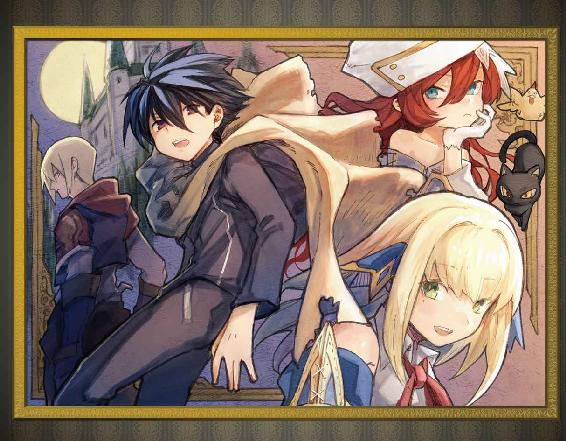
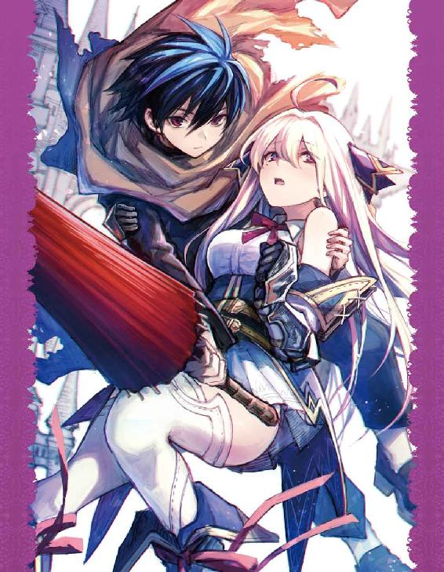
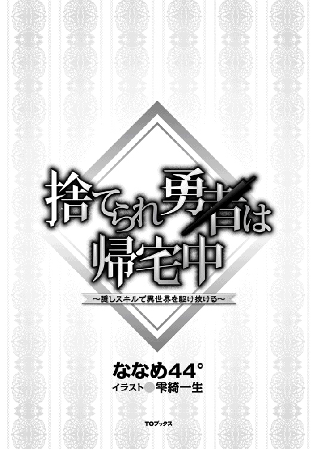
illustration：雫綺一生
design：福田 功
気づいたとき俺は落下する感覚に襲われていた。その次に浮遊感があり、視界が定まると認識できたのは、こちらを見つめる人間達だった。
なんだ、こいつら。
横を見てみれば俺のクラスメイトの聖洋一が立っていた。こいつも戸惑った様子で、俺と目の前の人間達へと視線が行き来している。
「おお！ 成功したぞ！」
「勇者様だ。本当に勇者様が現れた！」
「「「「わー！」」」」
おいおい、抱き合って喜ぶ前に俺に説明してくれ。
円形の部屋で涙を流しながら抱き合って喜んでいる人間は七人。そしてこいつらは日本ではみかけないような、いや、日本のゲームではよくみかけるようなローブを着ている。そして俺は地面にへたり込んでいたわけだが、自分の座る地面には丸い陣のようなものが書かれていた。
これってまさか......。
「なあ、この状況ってどういうことかわかるか？」
聖が話しかけてきた。
「俺にわかるわけないだろ......てかお前......」
俺は思わず固まった。聖とはクラスメイトだが仲がいいわけじゃない。というか、俺はクラスメイトと話したことがほとんどない。だからこそ聖とも面と向かってちゃんと目を見て話したことはなかった。そんな俺でもわかる。こいつほんとに聖洋一か？
「なあ、あんたほんとに聖洋一だよな？」
「え？ そうだけど......」
聖は首を傾げた。さらりと金髪が揺れる。そう、金髪なんだ。聖は別にハーフというわけじゃない。生粋の日本人だ。生粋......だったよな？
「あんたの親戚とかひいじいちゃんが外国人だったってことないよな？」
「は？ どうしたんだよ、緒方。まあ、僕が知る限りうちの家系に外国人はいないはずだけど......」
じゃあ、じゃあなんで......。
「なんであんた金髪なんだ？」
「は？」
他人に言われて初めて気づいたんだろう。聖は自分の髪を掴んで目の前に持ってきた。
「え、俺なんで......？」
「ついでに言っとく。あんた目の色も変わってる」
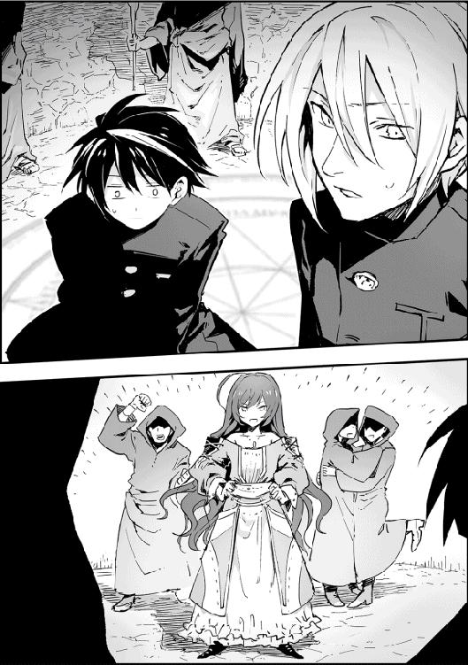
青色にな。
「ええっ！」
聖は目もとに手をあてた。残念ながらここには鏡がないから確かめる術がない。そのとき、俺たちがいた部屋に一人の少女が入ってきた。
「成功......したのですね！」
「「「「リリア様！」」」」
黒ローブの男達が叫んだ。リリアと呼ばれた少女は、目を潤ませて聖を見ている。こいつも日本では原宿とか結婚式場でしか着られていないようなフリルのたくさんついたピンクのドレスを着ていた。
「え、僕？」
見つめられている聖は戸惑ったように自分を指した。するとリリアの目が俺に向けられ、その目が大きく見開かれた。
「この方は......誰？」
「「「「え？」」」」
ローブの男達が初めて気づいたように視線を俺に向けた。なんとなく気に入らない。
「勇者様が......二人？」
「いったいどういうことだ？ 勇者様は一人じゃなかったのか？」
男達が動揺している。
「......とりあえず、この状況を説明してくれないかな？」
「ああ、申し訳ありません。今ご説明いたしますね」
リリアが聖にむかって笑った。
「私はエネルレイア皇国第二皇女リリアと申します。わたくし達は、召喚の儀を行い、異なる世界から勇者様をお呼びさせていただきました」
「勇者？」
「はい。今世界は混乱しているのです。それというのも、魔族達の動きが活発化し、どうやら魔王の復活が近いようなのです」
「は？」
「魔族の活発化に伴い、魔物も大量発生、狂暴化し、あらゆる場所が襲われその被害は拡大しています」
こいつ、俺のことさらっと無視しやがった！
「ちょっと待て！ 魔物だの魔族だの魔王だの、意味がわからない。それがいったいどういう存在なのかちゃんと説明しながら話してくれ」
俺がそう言うと、聖も同意する。
「そうだね。僕達が異なる世界から来たってことは把握してもらっていると思うけど、僕達がいた世界には魔物や魔王なんておとぎ話やゲームでしか聞いたことないんだ。そこから詳しく教えてほしいかな。というか、僕達は今異世界にいるってこと？」
「ああ、そうでございますよね！ 配慮が足らず申し訳ありません。はい、仰られるとおり、わたくし達は異世界からお呼びしました。この世界には古くから言い伝えられているのです。全世界を支配しようと魔王が復活するそのとき、星の召喚の陣は稼働する。世界を救いたくば召喚せよ。さすれば異界から救世主が現れるだろう、と」
う、うさんくせぇ！ なんだその物語で使い古された設定は！ そう思った瞬間、俺の思考を悟ったのかリリアが俺をキッと睨んだ。
なんだよ、今まで俺を視界に入れないようにしていたくせに。
「なるほど、魔王の目的は世界の征服なんだね」
「そのとおりでございます」
聖にはキラキラする眼差しを送っている。なんだこの落差は。
「魔族は人間より身体能力に優れた種族であり、魔王を主君として戴いています。魔物は狂暴化、または魔力を得て進化した動植物です」
「なるほどね。じゃあさ、その召喚された勇者っていうのは僕達二人のこと？」
「......」
「「「「......」」」」
違うみたいだぞ、聖。
「なら、俺か聖が勇者ってことか。どちらかはその召喚ってやつに巻き込まれたんだな」
「そう......みたいだね。どっちなんだろ？」
俺達の視線が一斉にリリアに向かった。見分ける方法はあるんだろうな？
「どちらが勇者様かを判断する方法ならございます。ロイド！」
「はっ！」
男の一人がローブから水晶玉を取り出した。
「伝説では勇者様はすべて、召喚された時点から大きな魔力を持っていたそうです。お二人の魔力総量を調べれば、どちらが勇者様なのかわかるはずですわ！」
「へぇ！」
俺も聖もその水晶玉に注目する。聖に向けられた水晶は、紫から緑に色を変えた。そして俺に向けられた水晶は......ん、なんだ？ かすかに色が濃くなっただけのような気がする。その結果を見た瞬間、リリアがほっとした表情を浮かべた。それだけで結果が読めたぞ。
リリアはつかつかと聖に近づいた。
「あなた様が、勇者様ですね」
「え......」
動揺する聖の手をリリアは包み、言った。
「どうか、この世界をお救いください」
「いや、あの......」
「「「「どうかお願いします！」」」」
俺は顔を引きつらせた。顔が隠れるほどのローブを着た男達七人の土下座は気持ち悪い。
「お名前を、教えていただけませんか？」
「あ、えと......洋一。聖洋一だよ」
「ヨーイチ様ですね！ 素敵なお名前！」
「えっと......」
勇者ヨーイチから助けを求めるような視線を向けられたが無視した。俺が口出ししたら事態がややこしくなるだけだ。
「僕が勇者ってことは、その......緒方は......」
「俺が巻き込まれたほうみたいだな」
「なんか......ごめん」
「あんたが謝ることじゃない」
俺はむしろ謝るべきはリリアのほうだと思うがな。
「では、ここではなんですので城のほうに移動しましょう」
「あ、ああ」
俺と聖は案内されるまま円形の部屋から出た。
召喚の陣は塔の最上階にあったらしい。螺旋階段をしばらく降りた後、外に出た。少し離れた場所にでかい城が見える。ここは城の裏手にあたるらしい。なんだ、近いな。
「では、ソーイチ様は先に城へ向かっておいてください」
おい、名前間違ってんぞ。
「僕の名前は洋一、なんだけど......」
「ああ！ 申し訳ありません」
「いいよ、間違いなんてよくあることだから」
「まぁなんてお優しいんでしょう！」
「それで、なんで僕だけ先に？」
「これから勇者様は辛い旅路に出発していただかなくてはなりません。あ、ご心配なさらずに。精鋭を護衛につけますので。ですが、この方はこちらの手違いで召喚してしまいました。ですから責任をもってこれからこの方のご意見をきき、城に残るか町で生活するかなどをご相談したいと思います」
「ああ、なるほど。ついてきてもらうなんてのは悪いもんね......」
聖、世界を救うのを了承したのか？ 大丈夫か？ 俺達普通の高校生だぞ。ＲＰＧの内容を今すぐ思い出せ。というか、俺は聖の心配をしてる場合じゃないな。さっきのリリアの俺の態度を見ていると、こいつがこんな殊勝なことするとは思えないんだが。
「わかった。じゃあ、僕頑張るから。また会いにくるからね、緒方！」
そう言って聖は手を振ってローブ連中と一緒に城に向かった。奴が充分離れたころ、リリアは今まで被っていた猫を投げ捨てる。
「さて、じゃああなた様のことですが......」
「ああ、俺は......」
「大丈夫。もうあなたの運命は決まってるから」
「はっ？」
リリアが綺麗な笑みを浮かべながら指をぱちんと鳴らすと、どこからか鎧をまとった騎士が現れ俺を掴む。
「ちょっ！ おい、離せ！」
「さて、あなたたち、このちんちくりんを町に捨ててきなさい！」
「おい、ちょっと待て、ちんちくりんってなんだ！」
「ちんちくりんじゃない。私より身長低いもの」
「ふざけんなよ！ 俺はこれからのびるんだよ！」
百五十六センチだからってなめるなよ！
「ふっ可哀そうに。あなたいくつよ？」
「十七だよ」
「わたくしより年上じゃない。その歳じゃあもう伸びないわね」
「男は伸びる時期が遅いんだ！ まだいけるっ。それにお前、年上は敬え！」
「小物を敬う必要性を感じなくてよ。あなた達、さっさと行きなさい！」
「ちょっおい、離せ！」
そのまま抱え上げられて騎士達は城門の前まで来ると、俺をぽいっと捨てる。
「いって〜......」
つか町に捨てるんじゃないのか。ここ城門前だぜ、テキトーすぎんだろ！ と俺が悶絶している間に騎士は姿を消し、城門はあっという間に閉じられた。
「は〜、なんなんだよいったい......」
痛む頭を撫でつつ城を見上げる。つまり俺は用無しだから放り出されたってわけか。嫌な予感が的中したわけだ。
「......しかしこれからどうするよ。ここが異世界であると認めたとして、魔力っていう言葉があるってことは雰囲気的にも俺が想像するＲＰＧみたいな感じでいいのか？」
もしそうなら、ステータスっつー奴とかあって見れたりするんじゃね？ とそう思った瞬間だった。
「うわ！ なんだこれ？」
目の前に半透明のウィンドウが浮いていた。しかもそこには俺の名前が書かれている。
-----------------------------
緒方優人 オガタユウト
ＨＰ 23／25
ＭＰ ５／５
ＴＡ ７／７
ＬＶ １
ＥＸＰ ０
ＮＥＸＴ 15
途中略
【魔法属性】 無
【称号】 異世界の旅人・勇者・捨てられた勇者
----------------------------
......は？
何度見ても俺の名前が書かれている。ということはこれは俺のステータスなんだろう。だが、そうだとしたら称号がおかしくないか？
「俺が......勇者？」
つーか捨てられた勇者ってなんだ。別の意味に聞こえるだろうが。あのリリアとかいう女の言うことが正しければ、勇者はとんでもない魔力を持ってるんじゃなかったのか？ その割にはＭＰが少ないんだが......。
恐る恐るそのウィンドウに触れると、リストが出てきた。そのリストにはリリアや聖の名前がある。それを押すと、ステータスが出てきた。
-----------------------------------------------------------------
聖洋一 ヒジリヨウイチ
ＨＰ 36／36
ＭＰ ６００／６００
ＴＡ １２／１２
ＬＶ １
ＥＸＰ ０
ＮＥＸＴ 15
途中略
【魔法属性】 地水火風
【称号】 異世界の旅人・迷い人・勇者に間違えられた者
-----------------------------------------------------------------
「......はぁ？」
何度見ても称号がおかしい。聖が勇者に間違われた？ つーことはやっぱり俺が勇者なのか？ だがどう見てもＭＰは洋一のほうが多い。格が違うと言ってもいい。
そう思いながらウィンドウをいじっていると、自分のステータスに逆三角▼を見つけた。あんまりやったことがないＲＰＧの知識を総動員すると、確かこれを押すと詳細が見れたはずだ。俺はそれを押してみた。
すると
-----------------------------------------------------------------
《隠しステータス》
緒方優人 オガタユウト
ＨＰ 23／25
ＭＰ ６０００／６０００
ＴＡ １０１／１０１
ＬＶ １
ＥＸＰ ０
ＮＥＸＴ 10
途中略
【魔法属性】 地水火風光闇 以降増可
【称号】 異世界の旅人・〔本当の〕勇者・捨てられた勇者
------------------------------------------------------------
「............隠しステータスってなんだぁぁぁぁぁぁ！」
ふわふわしている。まるで体が宙に浮かんでいるような。けれど重力はない世界。
俺は眠っていた。
日本から異世界に召喚されて、なにも知らないその世界に身勝手に放り出された。次にＲＰＧみたいな自分のステータス画面を発見し、衝撃的な自分のステータスを確認したあと、俺は近くの森に入ることにした。別に修行しようとか、自暴自棄になって富士の樹海に入るように自殺しようと思って入ったわけじゃない。城とは反対側の道の先には町が見えてんだが、ステータス画面でもう一つ気づいたことがあったんだよな。
--------------------------------------------------------
緒方優人 オガタユウト
ＨＰ 23／25
ＭＰ ５／５
ＴＡ ７／７
ＬＶ １
ＥＸＰ ０
ＮＥＸＴ 15
金 ０
途中略
【魔法属性】 無
【称号】 異世界の旅人・勇者・捨てられた勇者
----------------------------------------------------------
そう、途中略に隠されて最初は見えなかったが、俺は一文無しだったんだなー、これが。
当然と言えば当然な話で、なぜ金の部分だけ漢字なのかとかつっこみどころはたくさんあるが、もうそんな気力は残っていなかった。だから町に行ったところで無駄。金がなきゃなんもできん。そんでなんか売れるもんとか探さねーとと思って森に入ったわけだ。結局なにも見つからなかったけどな。
金もない。食べ物もない。家もない。空腹だ。こうなったら寝るしかない。そう思って俺は木に寄りかかって寝ていたはずだった。
なんだろうな、このみじめな話。
「確かにみじめだよねー、勇者なのに」
なんだ？ なんか厄介な臭いのするナニカから声をかけられてる気がするんだが。ここは俺の夢の中じゃなかったのか。
「そうだね。ここは君の夢の中だよ」
夢の中？ じゃあなんでこんなに意識がはっきりしてるんだよ。つか、あんた誰だ。
「あー、僕？ そうだね、君にわかりやすく言うと、神様だよ」
「......は？」
思わず声が出た。こいつ中二病か？
「中二病じゃないよ。僕は神様。夢の中なのに意識がはっきりしてるのは、神と話してるからだよ」
勝手に心を読むな！
わがまま姫の次は神様かよ。だけどまあ、ここは異世界らしいし？ なにが起こっても不思議じゃない......のか？
「......ん？」
俺は首を傾げた。目を開けようとしたがあけられない。どういうことだ。
「ああ、目を開けようとしないでね。今僕の姿をみられたら、僕がおもしろくないから」
あんたがおもしろくないんかよ！
ふと風が頬を撫でた。話しかけている奴が近づく気配がする。
「んで、その神様が俺になんの用だ」
何度力を入れても開けられん。二、三回で諦めた。
「そうだねー、まずは一つ目の用事から話そうか。実は君の召喚に少し僕が関わっているんだ」
「......どういうことだ？」
「君達が召喚されたあの魔法陣。あれに込められている力ってのは僕の力でね」
「あんたか！ あんたのせいで俺はこんな世界に連れて来られたってのか！」
「あんまり怒らないでほしいな。使用されたのが僕の力ってだけで、不足分の魔力を補充して君達を召喚したのはリリア達だよ。まああの魔法陣って、『世界が危機に瀕したとき』っていう発動条件を満たさないと動かない仕様だから大丈夫だと思ってたんだけど、時期が悪かったよねぇ」
「......」
顔は見えないが哀れみの眼差しを送られている気がする。
「とは言えこのままではあまりに可哀そうだ。というわけで、君の旅路が少しでも楽になるように手助けすることにした。神様が味方になったんだよ？ 感謝してよね！」
うぜぇ。
「そんな邪見にしないでよ。ステータスウィンドウはわかりやすかったでしょ？」
「......あれ、あんたの仕業だったのか」
つかやっぱり俺の心の声、こいつに筒抜けだよな。
「あはは。うん。この世界って、君の世界における物語やゲームに出てくる剣と魔法の世界に似てるからさ、あのほうがわかりやすいかと思ってゲーム風にしてみたよ」
「まあ、確かにわかりやすかったけどな」
「そう？ よかった。ここで用事二つ目。ステータスやら用語説明をするよ。まず、ステータスウィンドウなんか出しちゃったからゲームみたいに思うかもしれないけど、これ現実だから」
「......というと？」
「この世界で君が死んじゃったら、それはちゃんと現実の君の死ってこと。死んで元の世界に戻る、なんてこともできない。セーブもロードも存在しない、一発勝負。そもそもステータスなんて君が理解しやすいようにただ数値化しただけだから、完全に信用してはいけない」
「ということは、この世界の人間は、ステータスを確認できないってことか？」
「できるのもいるけど、圧倒的に少ない。君の世界ではよくギルドでギルドカードを作ると、自分のステータスが見れる、なんていう話があるけど、この世界ではある程度までしか把握できない。君も経験あると思うけど、水晶玉で魔力総量を測られたでしょ。あんな感じで把握したり、魔物は分類が進んでいて種族による強さでレベル設定されてるから、どの魔物を倒せるかで自分のレベルを測ったりしているみたいだね。それと、ステータスはあくまで数値化して具体化しただけであって、必ずそのとおりだとはかぎらないよ。体調気力次第で変化するからね」
「なるほどな。ステータスを見れるのは、俺だけか？」
俺は聖のステータスも見ることができた。なら逆もあるんじゃないか？
「君の考えどおりだよ。君はこの世界のほぼすべてのもののステータスを見ることができる。そして君以外なら、洋一君だけは同じようにステータスを確認できる」
「なら......」
「そうだね。いつか彼は自分が勇者ではないと気づくだろう。恨まれるかもね。彼のほうが君の召喚に巻き込まれたんだから」
「......やっぱりあいつは俺に巻き込まれたのか？」
「......うーん。まず君がこの世界に召喚される前のことを思いだしてみてよ」
召喚される前？ 確か高校で古典の授業を聞きつつ俺は睡眠学習してたんだよな。それで、古典の教師がチョークを......。
あれ？
「そう、君は授業中に居眠りしてて、先生にチョークを投げられたんだよねーってそれは関係なくて、ちょうどリリアが召喚の儀式を指示したとき、君と洋一君は同じ教室にいた。なんの因果かそれが原因で彼はこの世界に巻き込まれた。......ただ安心して。彼は彼なりの理由があって召喚されたから。むしろ巻き込まれたのは君のほう」
巻き込まれた？ んじゃやっぱり俺は勇者じゃないのか。
「いや、君は確かに勇者だよ。ただ、君にとっては異世界にあたる今のこの世界は、非常に勇者にとって生きにくい時勢にあるんだよ。たとえば、......そうだね。君を召喚したリリアは勇者にこう言ったはずだ。魔王を倒してほしいと」
ああ、確かにそうだったな。そんなことを言っていた。
「だけどね、彼女が言っていた魔族が戴く魔王はね、まだ復活していないんだよ。復活が近い、なんてのも人間が勝手にそう思っているだけで未だにちゃんと完全封印されていてね、今は仮の王が魔王をやっているんだ。そしてこの魔王（仮）は穏健派でね、世界征服なんかまったくする気がないんだよ」
「......じゃあなんでリリアは俺達を召喚したんだ？」
「それはね、ここしばらく平和が続きすぎて、この国の権威が衰え始めてるからとかいろいろ理由はあるんだけどー、詳しく説明する気はあるんだけどね、そこらへんの事情はまたの機会にしようかな。そろそろ君は起きたほうがいい」
「は？」
声がだんだん遠ざかって、意識が浮上するのを感じた。
「困ったときは、ステータスの詳細を意識するんだよー......」
最後にそんな声をきいた。中途半端すぎるだろ！
「ブルルルルっ、フゴッ」
耳元で変な声がする。
......がぶっ
そしてなんかに耳を噛まれたぞ、ふざけんな！
身の危険を感じて必死に目を開ければ目の前にいたのはイノシシ。
そして......
「フゴッ、フゴッ！ グルルルルっ」
少し離れたところに、片足を地面に何度も擦りつけて俺に突進する気満々な、目の赤い超巨大イノシシがいた。
「......はあっ？」
そしてぴろりん、という音と共に現れたのはお馴染みになりつつあるステータスウィンドウ。
----------------------------------------------
ワイルドボア
ＬＶ ３
ＨＰ １０４／１１０
ＭＰ 66／66
以下略
---------------------------------------------
普通のイノシシ
ＬＶ ２
ＨＰ 55／55
ＭＰ ０／０
以下略
---------------------------------------------
ただものじゃないイノシシ
ＬＶ ２
ＨＰ 77／77
ＭＰ ０／０
---------------------------------------------
あなどれないイノシシ
ＬＶ ４
ＨＰ １００／１００
ＭＰ 26／26
-------------------------------------------
百戦錬磨のバツ８イノシシ
ＬＶ ７
ＨＰ １００／１００
ＭＰ 22／22
------------------------------------------
ウリ坊１、２、３、４
ＬＶ １
ＨＰ ３／３
ＭＰ ２／２
------------------------------------------
ああもう、どこからつっこんだらいいかほんとにわからねぇ！
『ワ イ ル ド ボ ア が あ ら わ れ た ！』
というステータスウィンドウに書かれた文字を読む暇もなく、俺は突進してくるワイルドボアを必死で躱していた。
「くぅっ、そ！ う、わっ」
襲ってくるのはワイルドボア一匹だが、他のイノシシは俺が逃げられないように囲んでいて、撒くこともできなさそうだ。くそ、倒したくても方法がわかんねぇしな。
もちろんステータスウィンドウを見ればいいことはわかってる。だけど残念ながら、ワイルドボアをよけるのに精いっぱいで、ステータスウィンドウを操作する余裕がない。
俺は必死に走りながら視線を巡らせる。武器になりそうなものは、落ちていた木の棒くらいだった。突進してきたワイルドボアを滑り込んで躱し、木の棒を握る。
......で、ここからどうする？
木の棒を構えてみたものの、この棒はすぐに折れそうだ。
「ちっ、こんなところで終わってたまるかよ！」
そのとき、神の言っていた言葉を思い出した。
『困ったときは、ステータスの詳細を意識するんだよー...』
意識するんだよー......
するんだよー、するんだよ......〔エコー〕
そう言えば、詳細を見ろじゃなくて、意識しろって言ってたな。ちらりと傍らに浮かぶステータスウィンドウのＭＰの部分を意識した。
すると
-------------------------------------------------------
緒方優人 オガタユウト
ＨＰ 23／25
ＭＰ ６０００／６０００
【魔法】
覚えていません。
-------------------------------------------------------
「覚えてないのかよ！ 役に立たねえなっ」
だが、俺が移動したらウィンドウ画面は勝手についてくることと、実際にウィンドウ画面を押さなくても、ウィンドウを操作できることがわかっただけでも収穫か......。そんなことを思っていると、なにも意識していないのにウィンドウ画面が変わった。文字が表示される。
『魔力をその手に持ってる木の棒にまとわせてごらん』
「はぁ？ いったいどういうことだよ」
『やり方はわかるはずだよ。君は勇者なんだからｂｙ神』
「あんた夢じゃなくても会話できるんかい！」
ったく、勝手なことばっかり言いやがって。とりあえず自分の中の何かに意識をもっていくと、なぜか体の中に溜まっている何かの流れがわかる。これが魔力ってやつ......か？
それを手から棒に流すようにイメージすると、木の棒が強化されたのがわかった。
「これなら......」
今度はワイルドボアの目を強く睨みつける。
「ブルルルルっ」
そしてそいつを俺にまっすぐ突っこんできたワイルドボアの頭に渾身の一発を叩き込んだ。ドサッと倒れたそれを見て、俺は大きく息を吐いた。ワイルドボアは頭蓋骨を割られて死んでいる。
「ブブブブウゥヒィ」
「ブヒブヒ！」
ウリ坊たちがそのワイルドボアに駆け寄ろうとして、バツ八イノシシに止められる。ああ、こいつら母子なのか。とすると、この群れは家族なのかもな。
「ブヒヒヒッ！」
「んな警戒すんな。そっちが襲わなきゃなにもしねぇよ」
ワイルドボア以外は普通のイノシシだ。群れで一番強いワイルドボアを倒した俺には勝てないと思っているんだろう。言葉が通じたのかはわからんが、じりじりと他のイノシシは後ずさる。
「いけ」
俺が動かないのを確認すると、イノシシたちは背を向けて森の中に消えた。最後に一匹だけ、バツ八イノシシがワイルドボアをじっと見つめている。
「......」
俺がそれを見つめていると、やがてバツ八イノシシも森に消えた。すると、ピロリンとまた音がしてウィンドウが開く。
『レベルアップしました。《剣技》纏、スキル《直感》を習得しました』
-------------------------------------------------------------
《隠しステータス》
緒方優人 オガタユウト
ＨＰ 22／25
ＭＰ ５９７０／７０００
ＴＡ 95／１０１
ＬＶ ３
ＥＸＰ 20
ＮＥＸＴ 10
金 ０
途中略
【剣技】 《纏》
【魔法】 覚えていません。
【魔法属性】 地水火風光闇 以降増可
【称号】 異世界の旅人・〔本当の〕勇者・捨てられた勇者・神に加護されし者
【スキル】直感 ＬＶ１
【職業】 《勇者》
-------------------------------------------------------------------
おい、なんか項目が増えてるんだが......。
『レベルアップおめでとう！ 一応一般人より経験値が少なくてもレベルアップできるように設定してるからね！ 君だけじゃなく、歴代勇者はそういうもんなんだけど』
「......」
神のコメントに思わず額を押さえる。
「このステータスについていろいろ聞きたいことがある。まず、なんでレベルアップしたのに体力値は変わらないんだ！」
『実際の君の体力を反映しているからだよ。もっとレベルが上がれば、体力も増えるはずさ』
「二つ目。体力値に変化がない代わりに、ありえないくらいＭＰが増えてるのはなんだ!?」
『それは君が元々魔力に優れた存在だからだよ。魔力に関しては君が本来もっているものだから、本当に君はすごい魔力の持ち主なんだ』
「......。三つ目、このＴＡってなんだ？」
『ああそれね。その部分を意識してごらん』
言われたとおりに意識する。するとウィンドウに説明文が出た。
『テクニカルアタックのこと。あなたが技を使用したときに消費します。あなたの技術力、集中力を数値化したものだと考えてください』
「......なるほどな。つーことは......」
俺はずっと気になっていた隠しステータスを意識した。するとやはり、ウィンドウに説明が表示される。
『《隠しステータス》とは、神の加護を受けた状態でのあなたのステータス値、つまりあなたの実力です。加護なしの本来のあなたのステータスは、通常ステータスになります。しかし、通常ステータスにおいては偽りの魔法がかけられているため、あなたの本来の魔力量や魔法属性などを正しく表示していません』
通常ステータスってのは俺が最初に見たステータスのことだな。
『隠しステータスに関しては、誰も見ることができない。そう、たとえ洋一君でもね。つまり、魔力を測られたとしても、表示されるのは通常ステータスの値だけ。リリアの水晶が君の本来の魔力を感知できなかったようにね』
「へぇ......」
『あと、偽りの魔法をかけておいた件だけど、あまりにも魔力が高いとそれだけで君の身の危険が増すからかけておいただけだから』
「危険が増すってどういうことだよ」
『魔力が高い者はそれだけ利用価値が高いからね。それにあんなに魔法属性をもっている人間も少ない。だから普通に誘拐されたりとかあるから。あと、リリアの召喚の件にも関係あるんだけど......。うーん、君がもう少しこの世界に慣れたら説明しようかな』
「ふざけんなよ、ちゃんと最後までせつめ......」
突如きゅうと腹がなった。まあ、なんにも食べてなかったから当たり前だけどな。俺は倒したワイルドボアを見つめる。
「おい、魔物って食えんのか？」
『食べられるよ。魔物はもともと普通の動物とかが突然変異したり、魔力に侵されて通常より多い魔力を持ったもののことを言うからね。毒を持ってないなら基本的に大丈夫。あ、もしワイルドボアを食べるなら、町にそれを持っていくといい』
「なんでだよ」
『だって捌けないでしょ？ 肉屋に持って行ったら捌いてくれるはずだよ』
確かに今の俺は捌けるような道具は持っていない。神の言った通りにしてみるか。
「捌いてもらうのに、金はいらないのか？」
今の俺は一文無しだからな。もしそれで金がいるようならなにもできない。
『もちろんお金は必要だけど、肉をもらう代わりに残った毛皮を渡せばそれが代金になるよ』
「そういうことか」
俺はワイルドボアを持ち上げ、背負うかたちにした。
『......ワイルドボアに埋もれてるようにしか見えないけど、大丈夫？』
「余計なお世話だ！」
いいか、俺が小さいんじゃない、このイノシシがでかすぎるんだ！
「らっしゃーい。お、なんだ少年。大物のワイルドボアをもってるじゃねぇか！」
「こいつを捌いてほしいんだ」
「あいよ。大物だからな。三十六シギンだぜ」
「......持ち合わせがないんだ。こいつの残った毛皮を交換に頼めないか？」
「おー。了解した」
街の肉屋についた俺は、背負っていたワイルドボアをどかりとおろした。この世界の金はシギンというらしい。
肉屋にはちゃんと看板がついてたから、すぐにわかった。まあ、看板の字が日本語じゃなかったことには冷や汗をかいたけど、なぜか読めたので問題はない。たぶん神の加護のおかげなんだろうな。それと、その件の神は仕事をしてくるとか言って、話しかけてもウィンドウに文字が浮かぶことはなかった。いろいろ問いただしたいことはあったんだけどな。
肉屋の親父によると、捌くのにそこそこ時間がかかるというので、俺は少し町を歩くことにした。今の俺の格好は高校の制服だ。だけどやっぱり街を歩く人間はみなＲＰＧ風の服を着ている。
普通にマント着て、剣をさして、魔法の杖っぽいものをもって、物を籠に入れて売り歩いている人間がいる。こうなると逆に目立つのは俺のほうだ。ジロジロと視線を感じるが、無視。金がないんだ。仕方ない。
いろいろな店をまわっていると、道具屋が目に入った。入ってみると、出入り口近くには液体が入ったビンが並んでいた。するとピロリンと音が鳴ってウィンドウが開く。
『魔法水。体力や魔力、傷を治す万能薬。ただし、効果は低いです』
なるほどな。この液体は魔法水というのか。
奥にいくとその他にＲＰＧでみかけるような道具が並んでいた。それこそリリアが使わせていた水晶玉や、すばやさを上げる薬、防御力を上げる薬、鍋からランプから冒険に必要なものならなんでもござれだ。犬がいたのは不思議だったけどな。
ただ、あの薬類は魔法水に分類されるらしい。
「ん？」
奥にはまた液体の入ったビンが並んでいた。
『魔法薬。体力、魔力、傷、病気に効果のある万能薬。効果は高いです』
またウィンドウの説明が入る。
「ほう......」
魔法水と魔法薬は似ているが、効果の程度が違うのか。そう納得していると、店主らしき爺さんが揉み手をしながらでてきた。
「魔法薬をお探しですか？ 一本あたり六百シギンです」
「いや、少し聞きたいことがある。ワイルドボアの毛皮を売ると、大体どれくらいになる？」
「はあ、ワイルドボアですか。毛皮の質、量にもよりますが、大体四十七シギンで取引させてもらってますね。お売りいただけるので？」
店主はメガネをついと、おした。
「いや、近々ワイルドボアの毛皮を手に入れるアテがあったんだ。それできいておきたくてな」
「なるほど、そうでございましたか。ならばぜひとも、うちにお売りください。その際は色をつけさせていただきます」
「考えておくよ」
店をでると、他の道具屋でも同じ質問をしてみた。売値の平均はやっぱり四十七シギン。それを確認すると、俺はまっすぐ肉屋にむかう。
肉屋へ払うはずの代金は三十六シギンで、毛皮を売ると四十七シギン入ったはずだったとすると......。
「十一シギン損してるってことか」
ついでに道の途中にある食材屋を横目で見ながら歩く。
卵十個の値段は十シギンと書かれていた。日本の卵が十個入りパックで大体百円だったとすると、一シギンは約十円の価値ってことになるな。貨幣価値を日本円にあてはめると、このくらいか？
俺は肉屋でワイルドボアの肉を受け取り、最初の森に入った。またピロリンと音がする。
『はじまりの森 ソエル』
「......そうか、この森はソエルっつーのか」
名前を知ったところでどうなるものでもないけど。そして、俺の空腹は限界に達していた。
空腹のおかげか敏感になっている鼻を頼りに、森の中で水場を探す。水がなきゃ生きていけないからな。
水のにおいを頼りに川を探し当てた。人差し指で少しその水に浸し、においをかいでからなめる。
「毒ではない......か」
異世界に来たってことは、何が自分にとって害になるかわからないっつー不安があった。だが、この水は大丈夫そうだ。そっと両手で水をすくい、それを口に含んだ。
「......うまい」
約一日ぶりに飲んだ水は、身体に染み渡るくらいうまかった。水を飲んだことで少し回復した気がした。体力というか、気力というか。
「さて、こっからだな」
俺の手には今、肉がある。これは大事な食糧だ。だが生で食べるほど、俺は現代人を捨てていない。最初に小枝を探した。ついでにいくつか木の実も採取する。
『ワーデルの実。味は酸味、渋み、甘味、さらにミルクのような風味がする。腹痛に効く』
『レンヤーの実。味は渋み、苦み、甘味。甘味が強く、せき、むくみなどに効く』
『クコルの実。味は辛味、渋み。塩分が多く、塩辛い』
「......なんで全部に渋みが入ってんだ」
実を拾うたびに表示されるウィンドウを見て、脱力した。毒はなさそうだからいいけど。渋みなら、水にさらせばぬけるかもな。
俺は唯一元の世界からもってきていたハンカチにそれらの実を包み、川に浸す。そのあと石を用意して俄か知識で焚き木を準備し、あのよくある方法を使って火をおこそうとした。木の枝のへこんだ場所にもう一本の枝を立て、思いっきり両手でこすって回す。弓とか氷とかルーペとかありゃ、もっと簡単に火がおこせるんだけどな。
棒を回して、どれくらいの時が過ぎただろうな。上を見上げれば、空は茜色だ。そんななか、ようやく俺は火をおこすことに成功する。
「よし、やった！」
燃え上がる火を見て、ちょっとした達成感を感じた。手はこすりすぎたせいで少しすりむけている。それは気にせず、浸しておいた実を一口食べると、食べれないわけではなさそうだ。
「......確か、塩分が多いって書いてあったよな」
俺はさっそくクコルの実を洗った石でつぶし、すこしへこんでいる石にすりつぶした木の実と水を入れ、さらにそれをハンカチでこしてから、絞って滲み出た液体を、また窪んだ焼けた石に入れる。
水が蒸発すると、灰色の粉ができた。なめたらちゃんと塩の味がする。
「よし」
そのあとは肉に棒を刺し、火の傍に突き立てて焼く。
その間に柔軟性のある木の枝と、大きな葉を集め、木の枝を石で掘ったいくつかの穴につきさし、布を編むように横から棒をさしこんで、半球体の形の骨組みを作る。本当は竹とか笹とかがいいんだけどな。その骨組みの間に葉をさして、隙間を埋めていくと、天然テントの完成だ。
ちょうど肉も焼けたみたいだ。作った塩をかけて、肉にかぶりつく。
「......」
言葉がでねぇ。それくらいうまかった。
肉汁が口の中でジュワッと広がり、クコルの実にあった辛味と手作り塩が、ちょうどいい刺激を舌にあたえる。この塩は七味と塩を混ぜたような味だった。空腹を満たしたおかげでようやく人心地つく。
『なんか、ちょっと目を離した隙にすごいサバイバル生活送ってるね』
たき火の暖かさでぬくぬくしている俺の前に、ピロリンとウィンドウが開かれた。
「仕方ないだろ。俺だって食べて寝て、生きなきゃいけないんだから」
『ま、確かに。むしろあのなにもない状況からよくここまでやったね』
知恵を振り絞ったからな。あの天然テントだって、強風が吹けばすぐ壊れるだろうが、そこまで風が吹かなければ雨はしのげる。
『男の子ってサバイバルとか好きだよねぇ』
「おい、クネクネすんなよ」
『なんでわかったの!?』
「で、仕事とやらは終わったのか？」
『とりあえずはね。神様の仕事に終わりはないんだよ』
「なんとなくドヤ顔しているような気がするが、そんな顔するようなことじゃないからな、それ」
『だからなんでわかるの!? 神様が仕事しなくちゃこの世界はまわらないんだよ。魔力の流れを調整したり、大気を動かしたり......』
「じゃあもう一つ仕事しろ。俺を元の世界に帰せ」
次の文字が表示されるまで、少し時間がかかった。
『......それは、正当な要求だね。だけどごめん。それは今の僕の力ではできないんだ』
「......そうか」
『あれ、納得するの？』
だってこの神、なんにもできなさそうだしな。
『ひどい！ 僕だってできることはあるよ！ だけど、君を送り返すことはできないかな』
「ふーん。じゃあ、帰るにはどうしたらいい？」
『君は勇者だからね。勇者の役割をこなせば、魔法陣は再び発動する』
「勇者の役割？」
『勇者の役割と言えば、魔王を倒すことだよね！』
「......ちょっと待て、魔王って確か、まだ復活してないんじゃなかったか？」
『うふっ！』
「おい、ふざけんなよ」
『文句を言うならリリアにしてほしいかも。本来まだ君はこの世界に来るはずじゃなかったんだからね』
「......やっぱりあのお姫様につながるのか」
あのキンキンした声を思い出すだけで頭痛がする。
「......はあ、もういい。俺は寝る」
『うん。本当にお疲れ様。神様権限で今夜は魔物が近づかないようにしておくから、ゆっくり休んで！』
「......」
俺は自分の手で作ったテントの中に入り、体を丸めた。
『しかし、勇者なのにこんなに大変なサバイバル生活......。世の中は厳しいねぇ』
俺は意識してウィンドウを閉じた。
『おはよう！ よく寝れた？』
「......体中が痛い」
『ああ......』
天然テントから出た俺は、朝日を見ながら川で顔を洗った。
『雨はしのげるとは言え地面に寝てたんだもんね。そりゃ痛いでしょう』
ウィンドウ画面に表示される神のコメントに頷きながら、俺は目をこする。
神の言うとおり、テントの中は何も敷かれていない。慣れない体勢で地面に寝たおかげで、今体中が痛い。寝違えたかもなぁなんて思いつつ首をさすりながら、俺は昨日残しておいた焼き肉を食べた。残りは干し肉にする。腐らせるなんて言語道断だもったいない。今の俺にとっては特に。
「......金が要る」
『ん？』
俺はウィンドウ画面を睨みつけながら言う。
「とにもかくにも金が要る！」
神の言うことを信じるならば、魔王を倒さなければ元の世界には帰れない。だがしかし、魔王はまだ封印されたままだという。
ならば、今の俺はこの世界で生き残る術を手に入れるべきだ。
つか、たとえ魔王が今活躍していたとしても、とりあえずは金を稼がなければならない。ＲＰＧで活躍する勇者だって、金で回復アイテムや武器を買っている。現実を生きる俺としてはそこに食費などが含まれる。長期戦になるなら家も欲しい。服も必要だ。
こんなサバイバル生活を続けることは、正直言って日本でぬくぬく育った俺には不可能だ。とりあえず風呂に入りたい。今はまだ我慢しているが。
この世界に風呂があることを切に願う。
『ふ〜ん、なるほどね。確かに必要かも。で、どうするの？』
「とりあえず、町にいく」
もし、俺と同じように異世界にきて放り出された人間がいたら、俺は忠告したい。いくら金に困っていたとしても、乞食になるのだけはおすすめしない。
「はぁー、はぁー、ぜぇー」
『スキル《逃げ足》を習得しました』
ウィンドウに表示された文字を見て、それも仕方ないと思った。とりあえず呼吸を整えることに専念する。なんでこんなことになったかというと、町に入ったあと金を稼ぐ手段として試したのが、乞食になることだったからだ。
そして結果は悲惨なものだった。
今俺がいるエネルレイア皇国の治安は、おそらく悪くはない。日本の治安のよさに慣れている俺がそう思うのだから、治安の水準はそこそこ高いと言えるだろう。だが治安のいい日本にすらホームレスはいた。
似たように、この国にも浮浪児は存在し、あいつらは生きるためにネットワークを作っている。
つまり、この街では既にあいつらの縄張りがあったわけだ。当然、乞食となって物乞いをするにしても、その縄張りのリーダーに話をつけなければならない。そして俺はそれを知らなかった。
だから物乞いをした瞬間、ボロを来た子供たちに強引に連れて行かれ、その縄張りのリーダーのもとへ突き出されることになった。
なんとか許可をとろうと思ったが、そのリーダー格の少年曰く、もし物乞いをするなら収入の四割を差し出すこと。物乞いをするなら相手の憐憫を誘うために腕を切ることを条件に出された。
もちろんその条件を呑めるわけがない。
だがあいつらは大真面目に話していた。あの目は本気だった。手にはのこぎりを持っていた。あれは痛い。
俺には相手のステータスが見える。だからこそ、相手の力量もすぐわかった。相手は強くてもＬＶ８くらいで、もしかしたら俺でもなんとか抗えたかもしれないが、さすがに二十人以上の相手は無理だ。俺のレベルも低いしな。
そんなわけで今は、死に物狂いで逃げたあとだった。
『......大丈夫？』
大丈夫なわけあるか。
習得したスキルはありがたく使わせてもらうとする。絶対このスキルはどこかで使うことになるだろう。俺は心で返事しながら息をはいた。
ウィンドウ画面は俺の他には見えない。だが、俺が今まで通り普通に神と話していれば、端から見れば変な人物だ。
ここは街中だから、会話には気をつける。とは言え、案その二がつぶれた今、他の手を探さなければまずい。
まずは物乞いで小金を稼いで服を替えてから仕事を探したかったが、これはもうこのまま突撃するしかないな。今でもジロジロくる視線を感じつつ、俺は歩き出す。
俺が着ている学生服は、とにかくめちゃくちゃ目立つ。学生服なんて白と黒の違和感のないシンプルな服だと思ってたんだが、とにかくこの世界では異質らしい。デザインが問題なのか、色の組み合わせが珍しいのか知らんが、とにかく奇異の目で見られる。
俺が乞食をやろうなんて考えたのもこの学生服のせいだ。乞食になろうと思う前に、俺はいくつかの店で雇ってくれるよう頼んだ。あくまで乞食になるのは案その二だったんだ。客として入る分には、誰も嫌な顔はしない。だけど働きたいと申し出ると、俺の服を全身見たあと、必ず断られる。
第一印象って大事だよな。特に就活するときの服装ってのは大事だ。かっちりしたスーツ、無難な色、靴の手入れまで気を遣う。説明会へ参加するときに私服で来いと書かれていたとしても、だらしない格好はできない。中には私服と言われてもスーツで来るやつもいるだろうな。は、つっこまれたらどうするって？ スーツも「これは私服です」って答えるんだよ。今回も、つまりはそういうことなんだろう。
そして俺には働く場所に必要不可欠な条件があった。
それはまかない、だ。
働き始めてもすぐ給金はでるわけではないだろうし、俺も毎回ワイルドボアを狩るわけじゃない。つか絶対ムリだ。体力がもたん。となると、まかないは必ず必要だ。食料がないのはものすごく困るからな。しかしそうなってくると働く場所も自然と絞られるんだが、土地勘があるわけでもないので、店自体を探すのにも苦労している。そして見つけても......。
あー、求人雑誌でもあればもう少し楽なんだろうけどな。
『......』
俺が何度目になるかもわからないため息をついたとき、突然強風が吹いた。そして俺の顔に吹き飛ばされたなにかがぶつかる。
「ぶっ。なんだ、これ......」
それは一冊の冊子だった。表紙には〔求人雑誌〕と書かれている。
『それがあれば少しはマシになるかな？』
......これ、神が起こした奇跡なのか？
『まあね』
よくやった神！
俺は即座にその冊子に目を通す。
『は、はじめて優人君に褒められたっ......！ なんだろう、この胸の中に溢れる気持ち......』
気持ちの悪い神のコメントは無視しつつ、俺はその求人雑誌に載っている、条件のあてはまる店に印をつけた。とりあえず一軒目に行くことにする。なんとしてでも早急に仕事を探さなきゃいけないからな。
そして俺はパン屋の前に立っていた。店の名前は〔クロワさん〕。いっそクロワッサンにしてくれ。
そんな軽いつっこみはおいておいて、俺は店のガラス戸を押して開けた。
すると
「でてけっつってんだろうがこのボケナスぅっ！」
「ぐわっ！」
思わず固まる。
店に入った瞬間、パン屋でよくあるあの白い服を着た腕の太いおっさんが、ＲＰＧの旅装束っぽい服を着た男を片手で吹き飛ばした瞬間に居合わせた。おかげで店内に並べられてたパンは無残にも衝撃で地に落ちる。というか、この男微妙に頬を染めていないか？ いや、俺の見間違いだろう。絶対に。
「で、ですけど！ ここまで辿り着いたのに......」
「おめぇさんの腕じゃ俺の剣は扱えねぇ！ さっさと帰んな！」
パン屋のおっさんは腕を組んで、上半身を起こして見上げる男を睨んだ。だが俺の視線は落ちたパンにむけられていた。投げ飛ばされた男はパンを踏みつけながらも平然としている。食べ物を粗末にする奴は、万死に値する。
「あんたら、いい加減にしなよ」
「ああ？」
パン屋のおっさんの目が俺にむけられた。
「このパンはこの店の商品だろ？ 地面に落ちた商品は売り物にならねぇだろうが。これどうするつもりなんだよ。もったいねぇだろうが」
「え......」
おっさんがはっとして店の現状を認識したみたいだ。
「うおおおおお！ 俺のパンが！」
「それと......」
俺は倒れていた男に近づき、潰れたパンを指差す。
「食べ物を粗末にしてんじゃねぇよ。あんたもああなりたいのか？」
「ひっ!?」
顔を近づけ睨みつける俺に、男はおびえたように立ち上がり出て行った。決してさらに顔が赤くなっていたとか、そんなことはない。決して。
なんか顔を隠しながら出て行ったけど、なにもない。あれはたぶん、おびえていたんだ。うん。
『レベルアップしました』
は？
なぜか突然表示されたウィンドウ画面の文字に、目が点になる。
-------------------------------------------------------
《隠しステータス》
緒方優人 オガタユウト
ＨＰ 26／29
ＭＰ ８９００／８９００
ＴＡ 82／１５０
ＬＶ ５
ＥＸＰ 40
ＮＥＸＴ 15
金 ０
途中略
【剣技】 《纏》
【魔法】 覚えていません。
【魔法属性】 地水火風光闇 以降増可
【称号】 異世界の旅人・〔本当の〕勇者・捨てられた勇者・神に加護されし者・乞食になった勇者
【スキル】 直感 ＬＶ１ 逃げ足 ＬＶ１
【職業】 《勇者》
-----------------------------------------------------------------
なんでなにもしてねぇのにレベルが上がるんだよ。
『うーん、たぶんほら、怒りで実力が上がるとかあるよね？ たぶん、君の怒りで実力の一部が解放されたんだと思うよ。魔力が特に値上がってるし......。魔力は感情の影響受けやすいからね』
そんなことでか！
『そんなことでか、っていうけどさ、さっきの君相当怖かったよ？ 顔がほんとにヤバかった。うん。まあ、あの彼はそれにおびえて出て行ったわけでは、なさそうだったけど......』
俺の家は食べ物に関してはうるさいくらいしつけられたからな。あんだけ粗末に扱われりゃ、腹も立つわ。
そんなことを思っている隙に、おっさんは落ちたパンを拾い上げていた。あのパン、できれば持ち帰らせてほしい。
「......で、おまえさん、パン買いに来たのか？」
逃げて行った男への興味は失せたとばかりの切り替えだった。おもしろいな、このおっさん。
「いえ、ここで働かせていただきたいと思いまして......」
「ん、働きたい？」
雇ってほしい身はこちらのほうだ。俺は話し方を敬語にかえる。おっさんは急に言葉を改めた俺を気にもしていない。
「雑誌に求人出されていましたよね？ 店番求む。まかないつき、と」
「んー......。ああ！ そういや出したな！ だがあれ、一年前だぞ？」
「え!?」
俺は持っていた求人雑誌を確認する。日付は一年前になっていた。
「あ」
俺はそばに浮かぶウィンドウ画面を睨んだ。
『てへっ』
絞め殺したろか。
俺は運の良いことに、パン屋で雇ってもらえることになった。人手が欲しかったのはかわらなかったらしい。俺は精算台の前に座り、客が来るのを待つ。だが今は昼食の少し前ぐらいの時間だからか、客は少ないようだ。一番混むのは早朝と夕方だとおっさんから聞いていた。
「......暇」
『暇はいいことじゃない』
まあ、そうなんだけどな。
『ゆ〜うしゃ〜のぼうけ〜ん〜。たのしいこと〜はいまだこーずー。ふこうなこと〜はきっとくるーきっとくるー』
なんだその気の抜ける......というか不吉な歌は。
『ん？ 暇だって言うから、歌でも歌ってあげようかと』
ウィンドウ画面で歌ったところでなんも楽しくねぇよ！ なにせ音もなけりゃ声もない。
「はぁ......」
と俺がため息をついたとき、店のガラス戸が開いた。
入ってきたのは一人の女の子。八歳くらいか？ 街の人と同じような服を着ていたが、少し布地が多い服だ。その子は置いてあるパンをゆっくり見回りながら一周回ると、一つだけもって俺の前に立った。
「これください」
「六シギンです」
女の子は首から下げていた袋から六シギンだして、台においた。安いのを買ったな。このパン屋のパンはだいたい六十シギンが平均価格だ。俺は渡されたパンを紙袋に入れて渡す。
「ありがとうございましたー」
そして、女の子がガラス戸を開けて外に一歩踏み出した。よし、でたな。
俺はさっと近づくとそいつの首根っこを掴んだ。
「万引きは犯罪です、お客様」
「え、なにを...」
女の子は慌てたように俺を見上げる。俺はその女の子の必要以上に膨らんだ服の下から、隠されていたパンを四つ取り出した。
「おい、奥で話を聞こうか」
女の子は悔しげに唇をかむ。そして俺はガラス戸をしめて、おっさんのところに女の子を連れて行く、と見せかけて、再びガラス戸を開いた。
もしかして、とふと思ったんだ。
「う、わ！」
すると案の定店の前ではボロを着た少年三人いた。中を窺おうとしていたそいつらは驚いた顔で俺を見ている。
『おや』
「俺が店の奥に引っ込んだ隙に盗むつもりだったんだろ。仲間をおとりに使うとか、その頭もっと他に使えよな」
「みんな逃げろ！」
今までおとなしく俺に首根っこを掴まれていた女の子がそう叫んで暴れ出す。そのあと少年たちは一目散に逃げた。
『追わなくていいの？』
俺の腕は二本しかないんだよ。しかも片方は既にふさがってる。
『そう。でもよくわかったね。女の子が万引きしてるって』
コンビニのバイトでいつも目を光らせてたからな。この程度なら問題ない。
『女の子を囮にして仲間がいたってのは？』
あー、それは勘。
『スキル《索敵》を習得しました。スキル《直感》のレベルが上がりました』
---------------------------------------------------------------
《隠しステータス》
緒方優人 オガタユウト
ＨＰ 26／29
ＭＰ ５９７０／８９００
ＴＡ 82／１５０
ＬＶ ５
ＥＸＰ 40
ＮＥＸＴ 15
金 ０
途中略
【称号】 異世界の旅人・〔本当の〕勇者・捨てられた勇者・神に加護されし者・乞食になった勇者
【スキル】 直感 ＬＶ３ 逃げ足 ＬＶ１ 索敵 ＬＶ１
【職業】 《勇者》
--------------------------------------------------------------
「......」
もうなにもつっこむまい。
スキルは使えば使うほどレベルが上がるみたいだな。俺は未だにぎゃーぎゃー叫びながら暴れる女の子を連れて、おっさんの前に突き出した。
「万引き犯を捕まえました」
おっさんは刀を打っていた手を止めて振り返ると、なんでもないことのように言った。
「お？ なんだまたお前パン盗みにきたのか」
「また？」
俺どころか女の子までその言葉にきょとんとしている。
「俺が店の奥に引っ込んでるのが悪いんだがよ、毎回パンが減ってるなーとは思ってたんだ。そんで一回こっそり見張ってたら、こいつらパンを引っ掴んで出て行くのを見たわけさ」
「なんだ、バレてたのか」
ちっと舌打ちする女の子は、暴れるのをやめた。首根っこを掴まれてぶらーとぶら下がりながら今はおとなしくしている。
「それで、放っておいたんですか」
するとおっさんは気まずそうに頬をかきながら立ち上がる。
「まあ、こいつらも生きるのに必死だからなー。俺はそこそこ稼いでるから余裕はあるし、なにより......」
「......」
「こいつらがうまそうに俺のパン食ってるとこみかけたことがあってよ。ちょっとそれが嬉しかったんだ。まあ、放置するのは店にとってもこいつらにとってもいいことじゃないことはわかってたんだけどな......」
ふーん。このおっさんも甘いな。
見下ろすと、女の子は睨みつけるようにおっさんを見ていた。憐みはいらない！ って顔だな。
「......で、どうするんですか？」
「うーん、捕まえちまったからなー...」
......もしかして俺、まずいことをしたか？
『捕まえちゃったら、城に引き渡さなきゃいけないもんね。それをしないために、今まで見逃してたんだろうし』
そんなことを思っていると、下からぐるるる、と音がなった。
「腹減ったのか？」
女の子が顔を赤くしていた。
「はっはっはっは！ そうだな。どんなときでも腹はすくわな」
おっさんは愉快そうに笑い、女の子の頭を撫でた。
「よし、お前も昼飯くってけ」
「...え？」
「ちょうど昼飯の時間だろ。なぁ、ユート」
「そうですね」
「俺が腕によりをかけて今日は昼食を作ってやる。だからもう、店の物盗むんじゃないぞ」
「...」
それは見逃すという意味を含んでることは明白だ。俺は女の子を地におろした。
常習犯はこんなことで盗みをやめたりしない。たぶんそれはこのおっさんもわかってるだろう。俺よりも長生きしてるんだしな。
なにか考えがあるのかもしれないし、ただ単に甘いだけなのかもしれない。だがまあ、それが店長の判断なら、俺は口を噤む。解雇されたくはない。
おっさんはうきうきした足取りで厨房のほうにむかった。俺は女の子の背をおして、椅子に座らせる。事前に聞いていた場所から食器を取り出し机において、隣に座る。
女の子は戸惑うような表情を浮かべていた。
「靴」
俺は一言だけそう言った。女の子は訝しげな顔で俺を見る。だが俺はそれ以上なにも言わなかった。
あの子供たちは、俺を酷い目に遭わせた浮浪児たちの一部だろう。あの少年たちはボロを着てたからな。この女の子はこの世界では普通の服を着てる。たぶん怪しまれないように用意した服だったんだろう。
だけど靴だけはボロのままだった。それを見て、俺は彼女を疑ったわけだ。
『優人君も優しいよね。いくら乞食の一件で彼らの生活を垣間見たからって、君のほうが大変なんだから、情をかける必要ないのに』
そんなんじゃない。俺はこの世界に来たばかりで、この世界ではなにが善でなにが悪なのかわからない。だからただ、結論が出せなかっただけだ。
郷に入っては郷に従えって言うだろ。それに、見逃すだけなのは優しさじゃない。
『......。そう......だね』
なんとなく、神が困った顔をしているような気がした。
「ほいおまちどうさん」
俺は神の様子が気になったが、おっさんが持ってきたでき上がった料理を見て、そんなことは吹き飛んだ。
「クロワさん特製、チーズスープだ！ たんと食べてくれ」
これは特製じゃなくて毒性だろ！
目の前に出されたスープ皿には、既に盛りつけられたあとなのに沸騰しているようにポコポコと泡が浮かび、色はなんとも言えない黒緑。ときどきこのスープに浮かぶ波紋が、ムンクの『叫び』のようなあの顔の形に見えるのは俺の錯覚か？
強烈な臭いの中には、なんとなくチーズっぽい匂いがしないでもないが、その他の臭いの原因はなんなのか。もしやこれがこの世界の料理の標準なのか。
ふと横の女の子の様子を見てみると、ヤバい、泣きそうな顔してる。
やっぱりこれ標準じゃないんだな！
『キャー！』
神が悲鳴を上げるって相当だぞ。この神の場合はそうでもないかもしれないけど。
もしかしたら、おっさんは女の子を許していなかったんじゃないのか!? むしろここで殺る気で...。じゃあなんで俺はそれに巻き込まれてるんだ！
「ごめんなさい。ごめんなさい。もうしないから！ もうしないから殺さないで......」
女の子ががたがた震えながら呟いている。身を引こうとした動きを見て、俺はがしっと彼女の腕をつかんだ。一人だけ逃げるなんて許さない。
「ん？ なに言ってるんだよ。普通にうまいぞ？」
だったらあんたが先に食えよ！
だがおっさんは俺らが口をつけない限り、自分は食べる気はないようだ。
俺は咄嗟に「逃げ出したい！」と思った。だがなぜかここで逃げ出しちゃいけねぇような......いや、逃げ出せないようなプレッシャーを感じたんだよな。それが誰のプレッシャーなのかは言わずもがな。
意を決して、俺はスプーンを手に取り、すくった。
『ダメだよ優人君！ 死んじゃうよ！』
おっさんは期待の籠った眼差しで俺を見つめる。俺は、それを一口飲み込んだ。
そして俺はもちろん期待に応えてぶっ倒れた。おっさんの期待とはズレてただろうがな。
『ゆうとくーん!!』
「え、おいユート！ 大丈夫か!?」
おっさんが慌てる姿が見える。
大丈夫なわけあるか！
俺はそのまま気絶した。
--------------------------------------------------------
《隠しステータス》
緒方優人 オガタユウト
ＨＰ １／29
ＭＰ ８０００／８９００
ＴＡ ３／１５０
ＬＶ ５
ＥＸＰ 40
ＮＥＸＴ 15
金 ０
途中略
【剣技】 《纏》
【魔法】 覚えていません。
【魔法属性】 地水火風光闇 以降増可
【称号】 異世界の旅人・〔本当の〕勇者・捨てられた勇者・神に加護されし者・乞食になった勇者・勇者になった勇者
【スキル】
直感 ＬＶ３ 逃げ足 ＬＶ１ 索敵 ＬＶ１
【職業】 《勇者》
-----------------------------------------------------------------------------
あのチーズスープ殺人事件から五日経った。別に死亡者がでたわけじゃねぇから殺人事件じゃないが、俺は川の向こうの花畑を観光する羽目になったのだから、殺人事件でいいだろう。
帰ってこれてよかった。
俺は今日も精算台の前で頬杖をついていた。
ちなみにあの女の子は無事だった。倒れた俺を見て慌てたクロワのおっさんが、魔法水を取りに行っている間に姿を消したらしい。まあ、逃げたんだろうな。賢明な判断だと俺も思う。あれからこの店に姿を現すことはなかった
俺が目を覚ましたあとはこってり説教され、しゅんとうなだれていた。
おっさんが。
あんな危険な毒薬をこれからも作らせるわけにはいかない。だからその日から、まかないは俺が作るようになった。さらに、売れ残ったパンを持ち帰る許可も降りて、俺はこのバイトに満足している。
なぜかおっさんは料理が破滅的どころか破壊的ですらあるくせに、パンだけは絶品。食べたときの衝撃は忘れない。
外はカリッ、中はふわっとしていて、種類によっては日本人好みの外はカリッ、中はもちっという食感のパンをおっさんは作る。噛めば噛むほど味がでる、おっさんの絶品のパンは、よく売れた。
今は暇だが、早朝と夕方になると、それこそひっきりなしに客が来てパンは売り切れる。まあ、売切れれば俺が持って帰れる分はなくなるわけで、少し残念に思っていたら、おっさんはこっそりパンを焼いて、俺に渡してくれた。できたての熱いパンを渡しておきながら、これが売り切れのパンだと言われても説得力がない。
結果的に俺は客よりも美味しいできたてのパンをいただくことになり、これでいいのかと思いつつ、少し得した気分に浸っている。そんなわけで、俺が店番をしていたとき、ガラス戸が開いた。
「いらっしゃいませー」
「あ、あの、クロワルドさんいらっしゃいますか？」
「またですか...」
入ってきたのは俺がここに来た最初のときに、クロワのおっさんに投げ飛ばされていた冒険者の男だった。
『彼もめげないねぇ』
この男は毎日ここに来てはパンも買わず、クロワのおっさんに会いに来ていた。
「はい。今日こそはなんとしてでも、クロワルドの剣をいただきたいと思います」
「......俺、あなたが来ても通すな追い返せって言われてるんですが」
「そこを、そこをなんとか！」
男は懇願するように精算台に身を乗り出した。こいつもよくここまでやるもんだと思う。
目的はおっさんの打った剣。これを譲ってほしいと毎日通い詰めてくる。本職はパン職人だと俺はきいてたはずなんだけどな。
「......何度言われてもムリです。取次ぎはしません」
「......こんなに頼んでいるのに」
男は涙を流しながら精算台に顔をうずめる。このやりとりもそろそろ飽きた。毎日これじゃ、気が滅入りそうだ。だが、おっさんが取り次ぐなといった以上、通さない。
こいつが売り上げに貢献してくれれば、それなりに考えただろうが。まあ、このパン屋は毎日売り切れなんで、貢献されなくても問題ないがな。
「...そんなにクロワのおっさんの剣が欲しいんですか」
「ほしいよ！ ほしいに決まってる！ だってあの名鍛冶師、クロワルドの打った剣だよ！」
「...へぇ」
「冒険者で彼のことを知らない人はいないし、名だたる冒険者たちでさえも欲しがるクロワルドが打った剣！ 需要はとんでもなくあるのにどこで作ってるかわからないからさらにその価値が高いんだよ」
あー、確かにパン屋が剣打ってるとはあんまり思わないよな。しかし、おっさんはそんなに有名な鍛冶職人なのか。
男を追い返し、奥の部屋にいくとおっさんが相変わらず鉄を槌で打っていた。
「今日も来てたぜ、おっさん」
「ああ？ あいつも懲りねぇな......」
振り返ることなく、おっさんは剣を打ち続ける。その表情は真剣そのものだ。おっさんに普通に話せと言われたから敬語はやめた。
『ふーん。何度見てもいい腕だねぇ』
へぇ、わかんのか？
『すこーしね。ステータス見てみなよ』
俺は神の言うとおり、ステータス表示を意識する。
----------------------------------------------------------
《ステータス》
クロワルド・エディール
ＨＰ ３１００／３１７６
ＭＰ ３００／３２４
ＴＡ ５２０／６００
ＬＶ 53
ＥＸＰ １５３４６０
ＮＥＸＴ １２７９８
途中略
【魔法属性】 地火
【称号】 パン屋のおっさん・五大鍛冶職人・名鍛冶師・毒性料理の継承者 以下略
【スキル】 鍛冶 ＬＶ92 料理人（パン） ＬＶ89 以下略
【職業】 《鍛冶師》《パン職人》《親方》《冒険者》
----------------------------------------------------------
スキルレベルが......。
『ね？』
俺はあらためておっさんの手元を見る。何度も打たれて形を変え、また熱せられる鉄の塊。それをじっと見ていると、急におっさんが立ち上がった。
「そうだ！ 忘れてたぜ。おい、ユート。お前、明日身分証明書持って来い」
「......は？」
「お前をうちの店員として城に申請しなきゃならんからな。身分証明がいる。用意しておけよ」
おっさんはそれだけ言うとまた剣に向き合う。おいおい、どうすんだよ！ 俺は身分証明なんか持ってねぇぞ。
『ど、どどどどうしよう！ 身分証明......、住民票!? 戸籍!? 学生証!?』
どれも今の俺は持ってねぇよ！
『......あ、ギルドカード』
ギルドカード？
『そう。僕も一瞬慌てたけど、この世界の身分証って求められる割に取得するのは簡単で緩いんだよね。どんなとこでもギルドに所属すればギルドカードがもらえるし、それが身分証になる。君だったら冒険者ギルドに行って、ギルドカードを発行してもらうんだ。タダだし、名前とか登録するだけだし、おすすめかも！』
いや、むしろそれしかないだろ。
「おっさん、悪いけど今日早退させてもらいたい。ちょっと用事ができた」
「おーう。んじゃ、こいつができたら俺が店番するかね」
おっさんは愛おしそうに目の前の鉄......いや、既に剣の原型ができているそれを見る。
「......ごめんなさい」
「気にすんなよ。用事があるんだろ？」
「ああ」
「じゃ、行って来い。あー、でも今日はお前のまかないを食えないのかぁ。それは残念だな」
『優人君料理上手だもんねぇ』
「......。なにか作ってから帰る」
俺は厨房にむかった。
「ここが冒険者ギルドか」
木造の二階建ての建物に冒険者ギルドと書いてあるそれを見上げた。中に入ってみると、奥にカウンターがあり、そこで受付をするみたいだ。掲示板には依頼が張り出されている。カウンター以外にはテーブルとイスがいくつか置かれ、ちょっとした食堂になってるみたいだ。
......ガラの悪いおっさんが多いな。
中には女性もいるが、圧倒的におっさんが多い。
『ここは冒険者ギルドエネルレイア皇国支部だよ。本部は別の国ね』
へぇ。
俺は受付の前に立った。
「こんにちは。今日はどんな御用ですか？」
受付の女性がにこやかに話しかける。
「ギルド登録をしたい」
「かしこまりました。ではこちらの用紙にお名前と性別など、この枠に囲まれた部分をご記入ください」
差し出された紙には、名前や性別を書く欄があった。それを順番に埋めていこうとして、ふと気づく。俺、字は読めるけど書けねぇじゃないか！
『そ、そうだったのー!? これは初めてのケースだなぁ、どうしよう。あ、そうだ』
神のコメントのあとに、この世界の文字らしきものがウィンドウ画面に浮かんだ。
『これの通りに書けばいいよ』
ナイスだ、神！
『うん！』
俺は神が用意した字を真似て紙に書いていく。最後の欄には、死亡時の連絡先、と書かれていた。
本当なら、ここに自分が死んだときに知らせてほしい住所を書くんだろうな。
家族か、友人か、恋人か、そういう関係の奴らの住所を。
俺はそこを空欄のまま提出した。
「ではユート様、これで仮登録完了となります。こちらが仮ギルドカードとなります」
「......仮登録？」
「はい。本登録は、とある依頼をこなしていただいたあととなります。ここは冒険者ギルドですので、最低限の依頼をこなせることが認められなければ、冒険者ギルドの一員としてお迎えすることはできません」
「なるほど」
言われてみれば確かにその通りだよな。受付嬢は優しく微笑んだ。
「ですがご安心ください。この依頼は簡単なものですので、おそらく問題なく完了できると思われます」
「わかった。で、その依頼は？」
「ソエルの森にある、クランティアル洞窟の中に生えるヒカリゴケダケというキノコを採集してきてください。一つでもここに持ち帰ることができれば、本登録へと移らせていただきます」
なんだ、俺の庭じゃねぇか。
「これがギルドカードねぇ」
俺はソエルの森を歩きながら、それを見つめた。どう見てもタブレット、手のひらサイズだからスマホにしか見えない。ちなみにタッチパネルなんで操作法はスマホと同じだ。
『もともとは本当に魔法陣を刻んだ紙だったんだけど、それを開発した冒険者がいてね、今のギルドカードはそういうのになったんだよ』
「いや、この世界に来てこういう機械類を見たことなかったから驚いたんだよ」
『あー、確かにね。こっちには三種の神器の冷蔵庫、テレビ、洗濯機とかもないもんね』
「情報が古い！」
いつの時代の話だ。テスト問題にでも出るのか？
『３Ｃのほうがよかった？』
......それも古い。
そんなことはさておき、俺は慣れた足取りでクランティアル洞窟にむかっていた。
職を一応得たが、住み込みで働いているわけじゃないんで未だにあの天然テントで生活している。だからこそ、この森のことを知っておこうと、バイト以外の時間は森を探検した。既にこの森は俺の家であり、庭だ。
『......なんでだろう。涙がでてくるんだけど』
うるさい。
スキル《索敵》を習得したことで、半径一キロメートル以内なら、敵を感知できるし、その範囲も一キロメートル以内なら指定できる。便利なスキルだな。魔物に遭いたくなければ回避できる。が、その代わり集中力はガリガリ削られる。おかげでときどき疲れて敵に遭遇したりとかもあったが。
そんなわけで、俺はあっさりとクランティアル洞窟に着いた。
「この洞窟、入ったことはねぇんだよなー」
ぽっかりと崖の下にあいた洞窟。それがこのクランティアル洞窟だ。
『ヒカリゴケダケは、キノコの上に光る苔が生えてるやつだよ。たぶん見ればすぐわかると思う。それと、この洞窟、いくなら気を付けて』
「......なにかあるのか？」
『わからないけど、なーんか感じる物があるというか......。そうだね。たまには僕も君の役に立ちたいからね』
するとピロリンと俺のステータスが表示された。
------------------------------------------------------------
《隠しステータス》
緒方優人 オガタユウト
ＨＰ 28／29 → ２２０／２２０
ＭＰ ９２００／９２００
ＴＡ １８０／１８０
ＬＶ 12
ＥＸＰ １５５
ＮＥＸＴ 20
金 ０
途中略
【剣技】 《纏》
【魔法】 覚えていません。
【魔法属性】 地水火風光闇 以降増可
【称号】 異世界の旅人・〔本当の〕勇者・捨てられた勇者・神に加護されし者・乞食になった勇者・勇者になった勇者
【スキル】 直感 ＬＶ５ 逃げ足 ＬＶ３ 索敵 ＬＶ７
【職業】 《勇者》
---------------------------------------------------------------------------
なんとなく体が軽くなったと思ったら、体力が増えていた。
『洞窟の中にいるときだけのドーピングね。これで少しは楽になるでしょ。それと、僕の出血大サービス』
今度は目の前でぽんっと音がしたかと思うと、光の珠が浮いていた。
『洞窟の中は暗いからね。普通の冒険者なら松明とか買うんだけど、今の優人君にはそれは無理だし、魔法もまだ使えない君に、その光源を貸してあげる。それも洞窟から出たら消えるからね』
「わかった。サンキューな」
たまにはこの神も役に立つ。
俺はその光の珠と拾った木の棒をもって、洞窟に入った。神が言ってたとおり、中は一切の光源がない暗闇だ。足元は岩がでこぼこしていて歩きにくいし、しかも相当奥は深そうだ。何回か分かれ道に遭遇しつつ、歩き始めてから三十分ほどするが、まだヒカリゴケダケは見つからない。
『おかしいなぁ、すぐに見つかると踏んでたんだけど』
「誰かが先に採集しつくしたのかもな」
と俺がそう言った瞬間、手に持っていた光源が急に光を失い、なぜか体が重くなった。
「な、なんだよこれ」
急に真っ暗闇になり、俺は慌てて壁を探す。
「キーッキーッ」
頭上で魔物だか動物だかのコウモリの声がした。
『ごめん、この洞窟のせいで君に僕の加護が届かなくなっちゃったみたい』
「......電波か！」
そんなトンネルに入った時の携帯じゃねぇんだからさ！
ウィンドウ画面だけはなぜか見える。だけど、不思議なことにこのウィンドウ画面は光っているわけじゃないらしい。それは見えるのに、周りはなにも見えない。不思議な感覚だった。
つーか加護が携帯電波並みってどういうことだ。
『ああああ、怒らないで呆れないで！ ステータスは見えるから、もし君に敵意をもつものがでてきたらすぐにわかるよ』
そう。ステータス表示は、俺に対して敵意をもっている場合は自動で開く。それ以外は俺が意識すれば開く仕様になっている。
「わかった。あんたに頼りきりで何も他の光源をもってなかったのは、俺の落ち度だしな」
『優人君......』
「次からはあんたになにも期待しない」
『怒りでも呆れでもなくあきらめっ!? ごめん、見捨てないで......』
それを無視して一歩踏み出したそのとき、足になにかが引っかかってブチっとなにかが切れる音がした。そのあと、暗闇の奥に二つの光が浮いているのに俺は気づいた。
「なんだ？」
-----------------------------------------------------------------------
《ステータス》
セレネ
ＨＰ ４９００／４９００
ＭＰ １８７６０／１８７６０
ＴＡ ５８０／５８０
ＬＶ 72
ＥＸＰ ３９８６７
ＮＥＸＴ ６９０７４
途中略
【魔法属性】 地闇
【称号】 黒猫・使い魔・精霊・大魔獣・闇を統べるもの 以下略
【スキル】 逃げ足 ＬＶ76 索敵 ＬＶ52 直観 ＬＶ66 影縛り ＬＶ88
【職業】 《黒猫》《使い魔》《闇の精霊》《大魔獣》 以下略
-------------------------------------------------------------------------
ステータスが自動で開いた。こいつは、敵だ。しかも強い！
うなり声が聞こえる。
俺は木の棒を構えた。だが周りが見えない以上、迂闊に振り回すこともできないし、逃げるのも難しい。だんだん二つの黄色く丸い光が近づく。俺が両手に力を込めたそのとき、神が寄越した光の球が復活する。
「くぅ」
まぶしさから目が慣れてそれを見ると、しなやか体躯をした真っ黒の豹のような生き物がいた。
そしてあの二つの黄色い光は、そいつの目だったとわかる。
なんだ、こいつ。
『ああ、この子の力だったんだね。僕の加護を阻害していたのは』
「え......」
俺が驚くと、その黒豹は俺をしばらくじっと見つめる。俺もそれを見つめ返すと、急にそいつの体は縮み、黒猫の姿になった。黒猫は俺に駆け寄る。
「え、ちょっ！」
噛まれると思いきや、俺の足もとにじゃれるようにまとわりついてきた。
「にゃー、にゃー」
警戒しながらごろごろと喉をならす黒猫を撫でると、黒猫は嬉しそうに俺の手にすり寄ってくる。
『この子、闇の魔獣だね。今の僕とは言え、神の力を阻害するなんて相当力を持ってるよ』
「ステータスで見た。使い魔、闇の精霊、大魔獣ってあったぞ」
『おやすごい。じゃあこの子変種だね』
「変種？」
「にゃー」
黒猫は返事をするように鳴く。
『魔獣でありながら精霊でもあるってのはとても珍しいんだよ。ちなみに魔物と魔獣の違いは、言葉を理解できるかできないか。魔獣は人の言葉を解す』
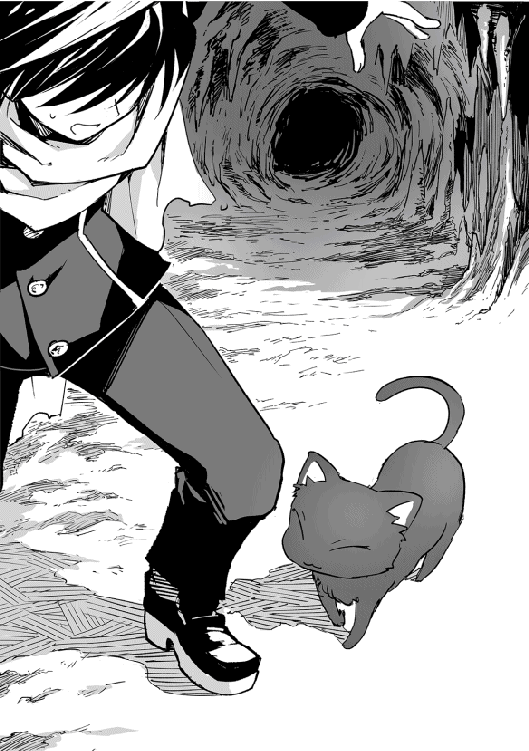
「おまえ、俺の言葉がわかるのか？」
「にゃー」
黒猫は目を細めて頷く。なんとなくその目に知性の色がある気がした。
ん、なんだこれ？
黒猫の近くにワイヤーのような切れた紐が落ちていた。俺が引っかかったのはこいつだな。
『それ、この子の封印だね。優人君が解いちゃったんだ』
「は？」
「にゃー？」
黒猫は不思議そうに俺を見上げる。そうか、こいつもステータスウィンドウは見えないんだな。
「あんた、封じられてたのか？」
「にゃー」
『そうだ、って言ってるみたいだね』
「そうか」
そのとき、俺の《索敵》に引っかかる気配があった。
「キーっキーっ」
--------------------------------------------------------------
《ステータス》
アカマダラキュウケツコウモリ１（好みは美女の血）
ＨＰ １２０／１２０
ＭＰ 65／65
ＬＶ 10
--------------------------------------------------------------
アカマダラキュウケツコウモリ２（好みは熟女の血）
ＨＰ １２０／１２３
ＭＰ 44／44
ＬＶ 10
----------------------------------------------------------
アカマダラキュウケツコウモリ３（好みは美少年の血）
ＨＰ 99／99
ＭＰ 52／52
ＬＶ ９
--------------------------------------------------------
頭上を見ると、三匹の魔物が牙をむき出しにしていた。
「毎回思うんだが、魔物のいらない情報を載せすぎじゃないか!? バツ八とか、血の好みとか、さ！」
一匹飛んできたコウモリを棒ではたき落とし、もう一匹飛んできた奴をよける。
『そんなこと言われても、なんかこういう仕様になっちゃってるから、もうどうしようもないんだよねぇ。ついでに言うと、優人君ってあのコウモリ達の好みにあてはまってないのに、襲われてるってなんて言うか......さ、不幸だよね』
うっさい！ 憐みと見せかけて貶してんのか？ 京都人かてめーは！
『......優人君、危ない！』
「あっ」
コウモリ３が魔力を使い、風を起こした。魔力によって生み出されたらしい風の刃が俺にせまる。
「ちっ」
とっさに棒で防御するが、俺にはなんとなくそれが耐え切れないとわかっていた。だがその風の刃があたる瞬間、黒い影が滑り込んで風の刃をかみ砕いた。守るように俺の前に立つそいつは、再び黒豹となったあの黒猫だ。
「......風ってかみ砕けるものだっけ？」
『普通は無理だねぇ』
のほほんと言うな。
俺と神が呆然としている間に、黒豹はしなやかな動きでコウモリを捕えると、あっという間に倒してしまった。
「がうっ......にゃー」
再びしゅんっと黒猫に戻ると、黒猫は誇らしげに尻尾を揺らして俺を見上げる。
「えっと、とりあえず......ありがとうな」
「にゃ！」
またすりすりと黒猫はすり寄る。ちょっとくすぐったいな。
『あのー、優人君。この子、君との契約を望んでいるみたいだよ』
「は？」
「にゃー！ にゃー！ にゃ、にゃー」
うっ、そんな訴えるような眼差しでみられても......。そもそも契約ってなんだよ。
『魔物、魔獣、精霊と結ぶ従属の契約のことだよ。まあわかりやすく言うと、使い魔になるってことだね。正式には従魔という』
「なんで俺？」
俺はこの黒猫のステータスを見た。俺みたいな雑魚と契約を結ぶってのは理解しがたい。
「にゃー、にゃー」
『......なんかね、君のにおいが気に入ったみたいだよ』
そんなことでか！
「......悪いが、世話をする覚悟がないならペットは飼うなってのが俺の家のルールでな。契約は無理だ。それに、俺はヒカリゴケダケを早く見つけなきゃいけない」
正直言って、契約なんぞしている暇がない。
「にゃー」
『ヒカリゴケダケの生えている場所なら知ってるわ。契約を結んでくれたら場所を教える。ついでに私はそこそこ強い魔獣だから、契約しておくとお得よ。......だってさ』
今の短い鳴き声でどんだけの意味が込められてんだよ！ つか、脅迫!?
「......なんでそんなに俺と契約したいんだ？」
「にゃ〜」
黒猫はただ、俺の足にすりすりとすり寄るだけだった。
「......はぁ。わかった。契約を結ぶ」
「にゃ！」
で、契約を結ぶにはどうしたらいいんだ？
『この子に新たな名前をつけてあげるんだよ』
「名前？」
「にゃ〜」
黒猫の名前...ね。
俺はじっと黒猫を観察する。まったく汚れた様子のない綺麗な黒毛と、満ち欠けをする瞳。
「......月夜」
「にゃ？」
「あんたの名前は月夜だ」
「......にゃ！」
「おっと」
『気に入ったみたいだね』
飛び込んできた月夜を受け止める。
「......ま、気に入らないわけじゃなさそうだな」
「はい、確かにヒカリゴケタケですね。では本登録に移らせていただきます」
ギルドの受付嬢はにこやかに俺から仮ギルドカードを受け取る。
「これが正式なギルドカードになります」
仮ギルドカードよりも新品のそれを渡され受け取った。
「それはあなたが冒険者であり、ギルドの一員であることを示すものです。ギルド支部がある街ではギルド日報という情報を配信していますので、街にいる間は一日に一度届きます。さらに、そのギルドカードから特許申請ができます。もし、ユート様が新たな魔法道具、魔法などの技術を開発した場合、それらを他に利用されたくないとき、もしくは制限をされたいときは、特許申請をしてください。申請した時点でその技術を行使する権限は製作者がもつこととなります。ただし申請が届かないこともあるので、できるだけギルド支部のある街で申請することをおススメします」
ほう。
「依頼をお受けになりたいときは、そこの掲示板からお選びになり、受付にご連絡ください。依頼にはそれぞれランクがあり、また冒険者にもランクが存在します。ユート様はＦランクです。依頼はご自分のランクと同じか、一つ上の依頼のみ受けられます」
ギルドカードには俺の名前と性別、ランクが書かれていた。
「また、全国にあるギルド支部、および本部は冒険者方のお金をお預かりするサービスを展開しております。もし持ちきれないなどのお困りの際はお近くの冒険者ギルドにお預けください。預けたお金の情報は全ギルドが共有しておりますので、必要な時にお引出しいただけます。また、残高もお手持ちのギルドカードからご確認できます。説明は以上です。なにかご質問はありますか？」
「いえ、ありません」
「では、これで登録を終了させていただきます。お疲れ様でした」
受付嬢は綺麗に頭を下げた。
俺がギルドを出ると、外で待っていた黒猫が駆け寄ってくる。
--------------------------------------------------------------------
《ステータス》
月夜 ツクヨ
ＨＰ ２６００／２６００
ＭＰ ８０００／８０００
ＴＡ ３２０／３２０
ＬＶ 36 （72）
ＥＸＰ ３９８６７
ＮＥＸＴ ６９０７４
途中略
【魔法属性】 地闇
【称号】 黒猫・使い魔・精霊・大魔獣・闇を統べるもの 以下略
【スキル】 逃げ足 ＬＶ76 索敵 ＬＶ52 直観 ＬＶ66 影縛り ＬＶ88
【職業】 《黒猫》《使い魔》《闇の精霊》《大魔獣》 以下略
--------------------------------------------------------------------------
俺と契約したことで、月夜はステータスに制限を受けることになった。俺に従属するということは、主の能力の制限をうけるらしい。つまり、俺が強くならなきゃ月夜は本来の力を出せない。
なんで制限を受けてまで俺と契約したんだか。
まあ、なにはともあれ、ギルドカードは手に入った。
『これで失業しなくて済むね！』
ああ。
「まだ、時間はあるな。今からでも、仕事するか」
予定よりも早くギルドカードを手に入れることができたので、俺は急ぎ足でパン屋にむかう。
「おっさん、まだ仕事ある......」
『げっ』
「お、なんだユート、用事は終わったのか？ あ、これ食うか？」
店の奥に入った瞬間刺激臭がする。そして椅子に座って少し早めの夕飯を食べているおっさんの前には、ドロドロに溶けた焼き魚がおいてあった。
魚を焼いただけなのになぜ溶けるのか...。
「おっさん......。俺もう料理はするなって言ったよな！」
「いや、でも夕飯が...」
「夕飯ならもう作っておいただろうが！ ちょっとそこに正座しろぉぉぉ！」
『やれやれ優人君、お疲れ様』
ざわめく客席の間を忙しなく店員が歩き回っていた。昼でも酒の匂いが漂うこの場所は、一応昼では酒場ではなく食堂として開店している。
そして俺の目の前には初めて見る異世界料理が並んでいた。
「なあ、やっぱりちょっと焦げてんのはこの世界の仕様なのか？」
「ん、焦げてる？ 普通じゃないか。ここ結構評判の店なんだぞ」
おっさんは乾いた豆を口の中に放り込んだ。
昨日夕飯を作って俺に説教されたおっさんは、俺にちょっと楽をさせたかったのだと言った。毎回食事を作ってたから、それに対して気を遣ったらしい。おっさんが作ると気遣いじゃなくていじめになるんだが、気持ちはありがたく受け取っておいた。すると、じゃあおっさんが作るのがダメなら外に食べに行こうということになり、おっさんは昼食の休憩時間に店を閉めてこの店に俺を連れて来た。
おっさんは評判の店と言うが、盛り付けは雑だし、異世界の摩訶不思議豆のスープや、よくわからない生物の手の姿焼き、真っ白い海苔のような薄っぺらい食べ物がならんでいる。そして見た目的に全部やっぱりちょっと焦げている。
「まあ食べてみろって！」
俺はまずスープから飲んでみた。黒と赤と青の豆が入ったスープ。味はタンパクで、鶏肉とかで出汁をとったような味だった。まあ悪くはない。
次に食べたのはよくわからない生物の手。皮を取ってみれば下から現れたのは、緑色をした魚の身のような肉。確かに元の世界でもこんな感じのワニの料理とかはあったが、緑の肉って......。
とりあえず食べてみたら、こっちもなかなかおいしかった。緑の肉は本当に魚肉のような味で、日本人の俺の口にもあう。ただちょっと硬かったり、苦みを感じるのは火の入れすぎが原因だろう。それさえなければもっとおいしくなるのに。
『優人君は上手に窯の火加減を調節していたけどね、この世界は作り手や空気中の魔力の量で火の加減が左右されたりするから、火の調節が難しいんだよ。だから、城が抱えているような料理人が使う設備でもない限り、大抵の料理は焦げてるの。この店のは本当にまだマシなほうなんだよ』
あー、要するに焦げているのが普通の料理ってわけか。
この世界の料理事情が理解できた。確かにガスや電気コンロみたいなものじゃないと、火の調節はかなり難しい。そのうえに魔力なんてのが関係していれば、大変なんだろう。
おっさんの料理よりははるかにマシなのでありがたく料理を頂いていると、ふと気になったことを聞いてみた。
「おっさんはさ、なんであいつに剣を売らないんだ？」
「ん、あいつってのは？」
「あの、毎日店に来る冒険者だよ」
「ああ、あいつね」
おっさんは水の入った酒瓶を開けながら顔を顰めた。
「どう見てもあいつはまだ未熟だろ。俺が作ってるのは武器だ。俺の手を離れたら、俺が作った武器がどんな使われ方しようが俺には干渉できない。だったら、渡す相手くらい選びたいじゃねぇか」
「ふーん......」
「俺は鍛冶で食ってるわけじゃないしな。選り好みできるんだよ」
「......武器しか作らないのか？」
「ん？」
「包丁とか果物ナイフだったら、まあ武器として使えないこともないけど、基本的に誰かを傷つけるってことはないんじゃないかと思ったんだよ」
おっさんはきょとんとした顔で俺を見上げる。
「その手があったか」
おい。
俺が呆れた顔をすると、おっさんは悪戯っぽく笑った。
「なら、お前もいっちょ作ってみるか！」
「は？」
どうしてそうなる！
「もっと腕に力入れろ！」
「くっ」
「そうだ、そこでまた火に入れる！」
確かに興味はあったが、まさか本当に鍛冶をすることになるとは思わなかった。俺が食べ終わったのを確認した瞬間、おっさんは俺の腕を引っ張って店に戻った。
窯の前に連れて行かれ、おっさんの厳しい指導のもと付け焼刃でひたすら鉄を熱しては打つ。俺なりに集中して、必死に作った。そしてでき上がったのは、すこし歪な形をした、ナイフといっても差支えのない小さな包丁だった。
「......」
「そんな拗ねんなって！ 初めてにしてはよくできてるよ」
そう言っておっさんは俺の作った包丁をじっと観察した。するとだんだんその表情が厳しくなる。
「こいつは......」
「......？」
「お前、これどうやって作った？」
「え？」
それはおっさんが一番よく知ってるじゃないか。
おっさんは軽く包丁を振った。すると包丁の先から火の玉が飛び出して、すぐに消える。
「こいつは、魔剣だ」
「は？」
魔剣って、あの呪われてる剣か？
「俺も本物は一度しか見たことねぇ。魔剣ってのは、魔力が込められた剣だ。魔法陣を彫って、特定の魔法のみ使える魔法剣と違って、魔力が少ない者でも、剣に込められた魔力によって魔法が使える。そしてなにより、魔力をまとっているために切れ味が抜群にいいうえに落ちにくい」
違うらしい。
「へぇ。じゃあ、もしそれがちゃんと打ててたら調理するとき便利だったのにな」
切れ味のいい包丁はほしいところだ。
「そんなもんで済むかよ。俺もまだ魔剣は作れねぇんだからな」
「どういうことだよ？」
「魔剣は作ろうと思っても作れるもんじゃねぇ。術じゃなく魔力自体を無機物に留めておくのは簡単じゃない。それどころか至難の技だ。魔導師どもが必死になって研究するくらいにな。俺が知るかぎり現在は世界中を探しても魔剣が作れる鍛冶師はいない。有名どころで言うなら鍛冶師オズワルドが魔剣を作れたらしいが、それはもう三百年前の話だしな」
「......」
俺の顔が引きつっていく。おっさんの手にある包丁は、歪んだ間抜けな姿のままだ。
「魔剣はその道を窮めた鍛冶師が最後に到達する域だと言われてる。この出来じゃ初心者ってことを疑いはしないが、お前、これどうやって作った？」
「......普通に、おっさんの指示通りに打っただけだ。ただ、夢中で打っただけで」
「......そうか」
おっさんは考え込むように、俺の作った包丁を見つめる。
俺は冷や汗をかきながら考えていた。
魔剣なんて大層なものを作ったらしいが、実感はあまりない。だが、魔力をまとっているという言葉に思い当たることがあった。俺は纏という技が使える。これは魔力を武器にまとわせて武器自体を強化する技......らしい。だからこそ、あの簡単に折れるような木の枝も、魔物を倒せるほどの武器になった......ようだ。
伝聞系なのは、俺にもいまいちそこらへん理解できてないから仕方ない。
ともかくあの技ができるようになってから、俺は魔力のコントロールは上達してきていると自負している。俺のスキル《索敵》も、あれは魔力を触手のように広げて周囲の敵を把握している......ような感覚というかイメージだ。最初にワイルドボアを倒せたのだってたまたまだし、また敵に遭ったら倒せる自信がない。それで、常に周囲を警戒していると自然とスキルの精度が上がってきた。ということで魔力を物に宿らせるのは比較的俺にとって簡単なことだった。
今回のことは意図してやったわけじゃないが、必死にやっているうちに無意識に纏の技を使っていたんだろう。だからこそ、包丁があんなことに......。
「うーん、ま、できちまったことは仕方ないよな。だがユート。この魔剣のことは他言するな。お前は鍛冶職人としては未熟どころかド素人だが、この世の中で数の少ない魔剣が作れるとなりゃ、いろいろ厄介なことに巻き込まれるかもしれないからな」
とおっさんが言ったそのとき、部屋の隅で寝ていた月夜がぴくりと起き上がった。そしてととと、とドアに近づく。
「どうした、月夜？」
「にゃー」
月夜はドアをカリカリとかく。俺はドアを開けた。だがそこに変わった様子はない。
「......誰かここにいたのか？」
「にゃー」
月夜は頷く。契約したためか、最近の俺は月夜の意思がなんとなくわかるようになっていた。
「客か？」
月夜は首を横に振った。わからないらしい。そんな俺達を見て、おっさんはぽんと手を叩いた。
「ああそうそう、明々後日はこの店休むからな」
「そうなのか？」
おっさんは既に散らかった鍛冶道具の片付けに入っていた。これから夕方売る分のパンを作らなきゃいけない時間だからな。
「おう。なんでも勇者様が無事召喚され、明々後日にお披露目のパレードがあるんだよ。みんなそっちの見物にまわっちまうだろうから、休みだ」
「ふーん」
勇者のお披露目パレード......ね。
「ま、これでしばらくはこの国も戦争はないだろうな」
「......戦争？」
「ああ。冒険者のお前なら知ってると思うが、この国の周りは魔物も強くないし比較的穏やかだ。気候も穏やかで他国からは喉から手が出るほど欲しい土地なのさ。そんな中で小さいこの国が何千年も存続できたのは、この国の皇族が勇者召喚の継承者であり管理者だからだ。世界を救う勇者の後見人をエネルレイア皇帝が歴代務めてきたからこそ、他国からの侵略はなかった。だがここ六百年ほどは平和で勇者召喚もなかったし、そろそろ隣国あたりが手を伸ばしてきてる兆候があったのさ」
「ふーん。おっさん詳しいんだな」
「長くこの世界やってると、いろいろ情報を仕入れてくれる伝手ができるんだよ。だから今度のパレードは派手にやると思うぞ。勇者はこの国が握っている。魔王に対抗できるのは勇者だけらしいからな。自分の国も救ってほしければこの国に手を出すな、って他国に示すためにやるんだ。戦争をしないこの国が攻められたら一発で国が消える。だから威嚇に必死なんだよ」
なるほどな。それで俺と聖は魔王が復活していないにも関わらず、召喚されたわけだ。
「この国も運よく首がつながったよなー。もし今魔王が復活していなかったら、この国は魔王が支配する前にお陀仏だ」
......。ちょっと待て、魔王は復活しているのか？
「つーわけで、そこらへんどうなんだよ」
『あー、この国の事情知っちゃったわけだね』
ソエルの森で火にあたりながら神にきいた。俺がバイトしている間、神は自分の仕事があるとかでまた不在で俺の魔剣事件云々は知らなかったわけだ。おかげで今日は朝から静かな一日を過ごせた。
月夜は夜の散歩にでかけている。
『前にも言ったとおり、魔王はまだ復活してないよ』
「じゃあ聖はいったい誰を倒すんだよ？」
『たぶん、魔王（仮）だと思うよ』
「......？」
『基本的に人間と魔族って仲が悪いんだ。そして魔王がいないとき、むこうは固く国を閉ざしてるから情報が一切入ってこない。せいぜい魔族が人間の国にちょっかいをかけ始めたときが魔王復活の兆候として受け止められてる程度だね。今までの経験則で勇者の召喚がうまくいった時点で魔王は復活しているって認識なんだ』
「それは正しいのか？」
『今まではね』
「今までは？」
『あの君達を召喚した魔法陣は【世界が危機に瀕したとき】というのが発動条件の一つなんだよ。それは正しくこれまで【魔王の復活】＝【世界の危機】だった。だから正しい』
「......魔王がまだ復活してない状態で発動したということは、今魔王以外の要因で世界が危機に瀕していると」
『そういうこと。でもそれは優人君が気にしなくてもいいことだよ。話を戻すけど魔族って戦いを好む者が多いんだ。けど、魔王がいない間は魔王（仮）がきちんと統制して大人しくしてる。だけど、今回の魔王（仮）は統制ができていないみたいでね、勝手に魔族が暴れてるの。そんなに激しいものではないけど、人間の国は魔族に関して過敏になってるからね。そして魔物が狂暴化しつつある件も人間は魔族のせいだと思ってるみたいだからね。だから世界は魔王の復活が近いんじゃないかって疑ってる。今回勇者召喚が成功したことによって、この憶測が確信として扱われるだろう』
「......」
『間抜けな話だよねー。僕もそう思うよ』
つまり、魔王は復活していないが人間の国々は魔王（仮）が本物の魔王だと勘違いして、そいつを倒しに聖を向かわせるつもりってことか。
ああ、魔王魔王いいすぎでややこしい！
『そういうこと』
そういう事情がわかってくると、リリアがなぜあれほど聖に拘ったかがわかる。見目がいいほうが、民の期待を受けることができるだろう。そのほうが、彼らの目的では効果的なんだな。
「......ふぅ」
『ごめんね、優人君』
ある意味、くだらないことでこんな世界に呼ばれたことに嫌気がさす。俺は空を見上げた。この世界に星はない。ただ、太陽と月と北極星だけは存在している。その他の星は......ない。だから夜の空は月がとても明るく、そして闇は深い。
「なあ、魔王を倒す以外に俺と聖が帰る方法ってないのか？」
『あるよ』
「......。......。......は？」
あまりにもあっさり言われすぎて唖然とする。
『あるよ。前にもちらっと言ったけど、僕の力なら君を元の世界へと送り返せる。だけど、今僕に力はほとんど残ってないんだ』
「......じゃあ、結局帰れないってことじゃねぇか」
『そうだね。神とは言っても、僕は全知全能じゃない。だから、もしかしたら探せば他に方法があるかもしれない』
「......そうか」
俺は身を倒して寝ころんだ。しばらく静寂が流れる。
「なあ、あんたって男か？ 女か？」
『......神様に性別聞いちゃうの？』
なんとなく、神が苦笑している感じがする。
『うーん、一応男でも女でもないんだけど、姿かたちは男かな』
「あー、やっぱりそうなんだな」
夢で声をきいたとき、男性の声のような気はした。
「なんで俺に姿を見せないんだよ」
『あはは。ミステリアスなほうが神様っぽいでしょ？』
そんな理由かよ。
『......優人君が元の世界に帰るとき、僕の姿を見せてあげる』
「......」
俺はウィンドウ画面を見つめた。
『いくんでしょ？ 元の世界へ帰る方法を探しに』
「ああ。俺は、元の世界で叶えたい目標があるからな」
いついくかはわからないが、多分あと一か月後くらいには出発するつもりでいようと思う。旅に出て、帰る方法を探して、そしてどうしても見つからなかったら、魔王を倒す。
「だからもしかして、俺は魔王を倒さず元の世界へ帰るかもしれない」
俺は、神に頼りすぎている自覚はあった。そして俺が魔王を倒す勇者だから、神は俺を手助けするんじゃないかと考えた。ここで魔王を倒さないと宣言すれば、もう話しかけてはこないかもしれない。これまでのような手助けも望めないかもしれない。
それならそれで、生きていく覚悟ができた。
だからこそ、神の返答は俺の予想外だった。
『かまわないよ』
「え......？」
『こちらの事情に巻き込んだのはこっちなんだ。君は君の望むとおりに生きればいい。僕は今まで通り、君を見守るだけさ』
「......そうか」
俺はほっとしているのだろうか。それとも自分を情けなく思っているのだろうか。よくわからないまま俺は、目を閉じた。
しばらくすると、温かい小さな生き物が俺の腹のあたりに乗るのを感じた。
その次の日、世界中、特に冒険者社会に激震が走った......らしい。まあ、大げさに言えば、だがな。というのも、ギルド日報には世界五大鍛冶師の一人、クロワルドが弟子をとったことと、その弟子がまだ若年でありながら魔剣を作ったという情報が掲載されたからだ。俺の名前まで載っている。
おっさん曰く、曜日ごとに書き手が異なるギルド日報で、水曜日である今日はゴシップや信憑性に欠ける記事をかく記者担当らしい。だからこれを見て信じるかは冒険者のうち半々というところだそうだ。話としてはおもしろいからすぐ広まるだろうというおっさんの見立て。
記事にはおっさんの言うとおり、魔剣は鍛冶師にとって究極の剣であり、今では生産不可能（作り手がいないため）で裏ルートで手に入れるか遺跡で掘りだすかしかない代物であると書かれていた。
俺はギルドカードに表示されているその日報を厳しい目で見つめていた。
誰がこのネタを流したかは検討がついている。あのとき月夜が反応した、気配の持ち主。立ち聞きしていたんだろう。
おそらくいつもおっさんの剣を求めて通い詰めていたあの冒険者だ。あれほど通い詰めていたのに昨日は来なかったからおかしいと思ってた。ちなみに、あの俺が作った包丁は行方不明になった。このパン屋に保管されてたんだが、盗まれたらしい。おっさんは俺に平謝りした。俺は気にしていないが。
それにしてもおっさん、本当に有名な鍛冶師だったんだな。というか、万引きに家宅侵入。このパン屋の防犯をもっと考えたほうがいいぞ。
『優人君......これからは今まで以上に気を付けて』
急にどうしたんだよ。
『この世界は物騒だ。有名になったら、なっただけね。心してかからないと......死ぬよ』
「......」
『まあ、月夜ちゃんも僕もいるから、ある程度は大丈夫だと思うけど』
月夜はともかく、あんたがいて大丈夫な要素が見当たらないんだが？
『もう、ツンデレなんだから！』
ツンデレじゃねぇ！ ......だが、おっさんも言ってたことだし警戒しておいたほうがいいかもな。
「リリア様リリア様！ 大変でございます！」
「なによ、うるさいわね」
リリアは自室にて優雅にお茶を飲んでいた。自分が召喚したヒジリヨーイチは魔王戦のために今この国きっての剣士である騎士団長にしごいてもらっている。ヨーイチのほうも順調で、「僕、なんか昔これやったことある気がする」と言って、めきめきと実力をつけていた。
このままパレードまでいけば隣国への良い牽制になるし、周辺諸国に侮られているこの国の威光も取り戻せるだろう。
そんないい気分のときに部屋に響いた大声。誰かと思えばロイドだった。
「我が国に、魔剣を作れる者がいるそうです」
「なんですって？ それはどういうことなの」
「あのクロワルドの弟子が魔剣を作れるそうなのです」
クロワルドと言えば、この国の皇都でパン屋をやっている鍛冶職人だったはずだ。魔剣と言えば、歴史に残る名高い名剣。この国に作り手がいるのなら、利用価値は高い。
「そう。それで、その魔剣は本物なんでしょうね？」
「真偽は定かではありません。ですがこの情報は世界中にまわっています」
「もう？ えらく早いじゃないの」
「出所が冒険者ギルドですので」
「......あいかわらず、早い情報伝達機器を使っているのね」
リリアは頬にかかった赤毛の髪を払った。
冒険者ギルドに所属するものだけが持てるギルドカード。あの情報伝達機能があれば、この国の軍もさらに強力になるだろうに、製作者がギルド員のみ使用可能という制限をかけているため手が出せない。
「とにかく、真偽を確かめるのよ」
「はっ！ ってそうではなくて、この魔剣の作り手の名前が、ユート・オガタなのです！」
「ユート・オガタ？ 誰それ？」
「お忘れですか？ ヨーイチ様が教えてくださったではありませんか。ご自分と一緒に召喚された男のことを」
「......あのちんちくりん？」
「はい！ そのちんちくりんでございます！」
それは......。
「まずいわね」
「はい！」
あのちんちくりんが有名になって、もしその名前がヨーイチ様の耳に入れば、会いたいなどと仰るかもしれない。それはいいが、もし二人を会わせて、私があのちんちくりんにしたことを告げ口されたらまずい。ごまかすこともできるが、私達のあずかり知らぬところで二人が会う可能性だってある。もうすぐ勇者は旅立つのだから。
ただでさえ今こちらはそこそこ危ない橋を渡っているのだ。今のこの状況でヨーイチ様に私達に対する疑惑や悪感情を持たれては困る。とっくに野たれ死んでると思っていたのに。
「......。そうね。あのちんちくりんの居所はわかっているんでしょうね？」
「今探しております。今日中には見つかるかと」
「なら見つかり次第捕まえて連れてきなさい。技術には利用価値があるし、万が一ヨーイチ様が彼の死を知ったらまずいわ。でもそれができなければ始末してもかまわないわ。あれは邪魔だもの」
「承知いたしました」
ロイドはさっと立ち去る。魔法使いのくせに、こういう小間使いのほうが似合うのではないかとすら思う。
リリアは顔を歪めながら紅茶を飲んだ。
確かに魔剣は利用価値がある。だけど、あのちんちくりんにはどうしても関わりたくない。嫌いだ。嫌だ。城に入れたくない。近寄りたくない。むしろ、いっそのこと自分の手で絞め殺して......。一目見たときからそんな感情が体に走ったのだ。
だから捨てた。あのまま何事もなく死んでくれればよかったのに。
リリアはため息をつく。
美女のため息って、絵になるわね。
ふと、鏡に映る自分を見て、リリアはそう思った。
俺は今日もいつも通り、パン屋クロワさんに来ていた。今日こそはあの少年に打ち勝ち、クロワさんと直接交渉するのだ。
儲かるときいて冒険者になったものの、ギルドに寄せられる依頼をこなすのに毎回苦労しているわが身。たまたまとは言え、居場所を公表していないクロワルドさんの居所を突き止められた自分の運に感謝したい。
ここはクロワルドの打った剣をふるって自分のレベルアップをはかるべきだ。
そう考えてパン屋に通いつめて二か月。ここまで誠意を見せればクロワルドさんも折れるに違いない。俺は意気揚々と、店のガラス戸をあけた。
いつも眠そうに精算台に頬杖をついている少年がいない。
「おおっ！」
今日は神も俺の味方みたいだな。いつも交渉を邪魔するあの少年がいない。今が絶好の機会だ。
俺は勝手ながら店の奥に入った。もしあの少年が近くにいて、声を出したところを見つかったりしたらすぐに追い出される。
クロワルドさんの場合は見つかると投げ飛ばされて追い出されるけど、それはそれで快感が体を襲うから問題はない。
だけどあの少年は、初めて会ったときはゾクゾクとする鋭い視線をくれたけど、最近はにこにこ笑ってやんわりと追い返される。そしてなぜか激しく実力行使されているわけではないのに、いつの間にか追い出されているという不思議体験を俺にさせる侮れない少年だ。
だからあの少年には見つからないように、非常識ではあるけどなにも言わずに奥に進んだ。
そして扉を開けようとしたとき、中から思わず行動を止めてしまう言葉がきこえた。
「こいつは、魔剣だ」
「え......？」
......魔剣だって？
少年も中にいるみたいで、扉を開けてしまわないでよかったと思う気持ちと、魔剣という言葉が示す意味を思い出して浮かんだ興奮が同時に胸を占めた。
「魔剣ってのは、魔力が込められた剣だ。魔法陣を彫って、特定の魔法のみ使える魔法剣と違って、魔力が少ない者でも、剣に込められた魔力によって魔法が使える。そしてなにより、魔力をまとっているために切れ味が抜群に高い」
クロワルドさんの説明で、さらに魔剣のすごさを知る。そんなにすごい魔剣を、クロワルドさんでも打てない剣を、あの少年が打った。
ドアから漏れきこえる内容をまとめると、そういうことらしい。
俺はすごい秘密を知った興奮で体がうずうずしていた。だけど、これは秘密にしなければならない。これは俺だけの秘密だ。
このままあの少年と仲良くなれば、俺も魔剣を手に入れることができるかもしれない。
俺は秘密を暴露したい衝動をこらえて、外に出た。
誰かに話したい。だけど話してはいけないという気持ちが胸の中で同居生活をはじめてしまった俺は、気を紛らわせるためにギルドの食堂にむかった。
昼間ではあるけど、酒を飲みたい気分だったんだ。
食堂に入ると、見知った男二人をみかけた。
「お、ピエールじゃねぇか！ こっちこいよ！」
俺もにこやかに笑って手を振る二人がいる席に座った。
「二人ともどうしたんだよ。少し遅い昼飯か？」
「まあそれもあるんだけどよ、俺たちやっとＥランクから抜け出せたから、それで一杯やろうってなったんだ。な？」
「おう！」
「え？」
俺は内心動揺した。この二人も俺と同じように、依頼がこなせずずっとＥランクを彷徨っている奴らだったから。
「......そ、それはおめでとう」
「おう！ で、俺たち二人とパーティ組んでくれる奴らが見つかってよ。明日からちょっと冒険に行ってくるんだ」
「そうなんだ」
もやもやする気持ちを押し殺して、笑顔を作る。だがそれには男たちは気づかず、内緒話をするように顔を寄せた。
「ここだけの話なんだがよ。昔の武器とかが眠ってる遺跡を見つけたらしいんだ。俺たちはそれを掘り起こそうって計画なんだよ」
「へぇ......」
昔の武器という言葉にぴくりと反応してしまう。
「もしかしたら魔剣とかあるかもな。そしたら高く売れるぞー！ おまえも来るか？ いや、おまえ戦いとか苦手だもんな」
明らかにバカにしている雰囲気がただよう言葉に、俺は思わず言ってしまった。
「へぇ！ 確かに遺跡なんかは魔物の巣窟だから俺にはムリかもな。だけど、俺はクロワルドのいる場所も知ってるし、魔剣を作れる人間を知ってるから、わざわざ遺跡で穴掘りなんかしないぜ」
俺の言葉に一瞬きょとんとなった二人。そのあと二人は大笑いした。
「あっはははは！ 魔剣を作れる人間なんかきいたことないぜ！ もしいたとしたらもう有名になってんだろ！」
「もっとすぐにはわからない嘘つけよ！」
俺がいい返そうとしたそのとき、赤い髪を後ろで括った女性がとん、とテーブルに手をついた。
「今の話、詳しく教えてくれない？」
「ふぅ、困ったわね。記事載せるのは明日だってのに」
私は街を歩きながら思案していた。悩んでいるのは、明日掲載されるはずの自分が書いた記事のことだ。
本来なら二日前に記事を脱稿しておかなければならないところを、私は未だにせずにいた。これが配信速度が速いギルド日報でなければ、記事に穴を空けていたこと確定だろう。
だからといって今こんなところを歩いている暇はないのだけれど。
とは言え、最近の記事はどこぞの王族のゴシップばかりで飽きてきていたところだ。私が。
相変わらず需要はあるものの、そろそろ違うものが書きたい。けれど、表に出していい情報のストックは今のところ、王族のゴシップしかない。
勇者ネタは売れるかもしれないが、おいそれと手を出していいネタでもないしね。
そう考えながら行き着いた冒険者ギルドエネルレイア皇国支部の食堂で、おもしろい話をきいた。思わず私は彼らに話しかけていた。
魔剣について知っていた青年は、魔剣を作れる少年がいて、彼はクロワルドのところにいると教えてくれた。多少強引にきいたのだけれど。
けれど、クロワルドの居場所だけは口を割らなかった。でも問題はない。クロワルドの居場所は知る人が少ないというだけで、知る人間が全くいないというわけではない。
かく言う私も彼の居場所を知る一人だった。
パン屋クロワさんにたどり着いた私は、いつも連れて歩いているモルンガという魔獣に命じた。
「魔剣を持ってきてちょうだい。魔力を帯びた剣よ」
モルンガは頷くと、すぐにパン屋の窓の隙間から入り込み、十分ほどで戻ってきた。咥えていたのは歪んだナイフのようなもの。私はそれを、知り合いの鍛冶師に見せた。
結果は本物。
歪んでいるのがなぜなのかは、あの話を聞いた冒険者からきいている。むしろこの歪みこそ、魔剣の作り手がいるという真実味を増すものだ。
クロワさんに勤めている少年についても調べてみた。彼もギルドに所属しているから、名前を調べるのは簡単だった。
久しぶりに王族のゴシップ以外を書けそうね。これで私の首の皮もつながったわ。
旅立つと決めたからには、それなりの準備が必要だ。ちなみに神は現在仕事で不在である。
「これと、これとこれとこれ、ください」
道具屋で旅に必要だと思われるものを購入した。そう、つまり給料が出たわけだ。というのも、俺がおっさんと交渉して、一日の終わりにその日働いた分の給料を渡してもらえるようにしたからだった。
まず、俺は服を買った。ようやく着替えることができる。一応制服は川で洗濯したりもしていたが、石鹸もなかったしそろそろ限界だった。
石鹸は作ろうと思えば作れたが、その場合動物の油を使わなければならない。それをすると臭い石鹸が出来上がるので、今までは灰と水で洗濯していた。だがそれも今日でおさらばだ。服を買ったことで着替えはできるし、石鹸もできるだけ購入した。ちなみにフードつきマントも購入した。これでたとえ制服を着ていたとしても、上からマントを着れば目立たない。
日本人として慣れている俺としては、このマントは痛すぎる格好ではあるが。
そのほかにも火打石、水袋、袋、鍋、お玉、消毒用のアルコール度数の高い酒、包帯、ガーゼ、紐、空のガラス瓶、ノートなどを買った。ナイフなどの刃物の調理器具は買っていない。なぜなら、おっさんが今朝、調理用の包丁からサバイバルナイフまでの刃物セットをくれたからだ。
剣のことはからっきしわからない俺でも、この包丁のよさくらいはわかる。今日のまかないを作るのが楽しみだ。しかもこの刃物セット、皮に収められていてベルトのように腰に巻ける。数も多いしよく動く俺にとってはありがたいかぎりだ。
この刃物セットは昨日の魔剣のお詫びらしい。どうやらあの記事を書いた新聞記者はおっさんの知り合いだったようだ。絶対抗議だけじゃすまさないとおっさんは息巻いていた。
いまいち俺はまだこの世界の価値観には馴染めていない。魔剣がすごいと言われても、おそらくその重要性はこの世界の住人の認識と俺の認識とではズレがあるだろう。その重要性に俺はまだ実感がもてていなかった。
「いくぞ、月夜」
魚屋のほうを凝視している月夜を呼んで、俺はおっさんに頼まれた食材も買って、店に戻った。
『優人君......』
言うな。わかってる。これは明らかに
「作りすぎた」
包丁をもらってテンションが上がりすぎていた俺は、おっさんの夕飯を作りすぎてしまった。机の上には十数種類の料理をのせた皿が勢ぞろいしている。
「誰か俺をとめろよ」
『無表情で地味にノリノリで料理してる君を見てたら止め損ねたんだよ』
無表情で地味にノリノリってなんだ！ 俺そんな器用なことしたか？
「にゃー」
月夜は白身魚のムニエルを見て満足そうにしている。
月夜よ、これ全部おっさんの夕飯であって、おまえの口に入るわけじゃないからな。
『それにしても、魚はまだわかるとして、鳥とかイノシシとか捌ける君に僕はびっくりなんだけど』
俺はイノシシのローストとポルッポの丸焼きを見て頬をかく。ちなみにポルッポとは鳥の魔物で、こっちの世界では地球における鶏の扱いだ。食材屋で売られている卵もポルッポの卵だそうだ。
見た目は鶏じゃなくて白い鳩を鶏サイズにしたような鳥だった。
そして目の前のこの丸焼きは数時間前までは生きていた。俺が絞めて首を落とし、羽を毟って焼いたのだ。
俺の義母が、自分がいつ死んでも俺一人で生きていけるようにと、いろんなことを教え込んでくれた。今まで数える程しか鳥を絞めたことはないけど、まあ慣れるくらいはやった。
イノシシと魚の捌き方も、あの人に教えてもらった。今思えばその経験がこっちの世界で生かされている。
『うーわー。むしろよくそれだけの機会があったね』
まあ、俺の祖母と言ってもいいくらいの歳の人だからな。そういうことにも詳しいし、家の周りは山だったしな。
「うおっ、なんだこの豪勢な食事は！」
「悪いおっさん。作りすぎちまった」
パンの最後の売り切りが終わったおっさんが部屋に入ると、驚いたように声をあげた。
これ、俺の給料から差し引かれないといいな。
『優人君、遠い目になってるよ』
「にゃー」
「いやー、ここ最近はユートが食事を作ってくれるおかげで俺はうまい飯が毎日食えるな。やっぱ自分で作った飯を自分一人で食べるのは味気ないしな」
「おっさんの料理は味気ないどころの話じゃないだろ！」
むしろあれを普通の顔して食えるおっさんの舌はどうなってんだ。
パン屋の仕事というのはなかなか朝早いものだ。ここ最近は早朝の仕込みも手伝い始めた俺は、朝食昼食を作りおっさんと食べ、おっさんの分の夕食を作って森に戻るという生活を続けていた。
すなわち、この店の台所は窯以外俺の作業場となった。
今までまかないを作っていておもしろかったのは、地球と同じ野菜や肉があるかと思えば、地球とは違う食材もあるということ。以前は葉っぱが大根で根がナスという珍妙な野菜をみかけた。ナスのあの柔らかさで根の役割を果たせるとは思えないのだが、いったいどうなっているのだろうか。そう言えば日本のナスは浅漬けなど皮の柔らかいものが好まれるが、海外のナスは煮込みようで硬いものが好まれる時もあるらしい。ということはこのナスっぽい根も硬いのか......。
調理法は地球とそんなにかわらないようだ。味付けは基本は塩と胡椒だし、ハーブや香辛料も存在している。
森の中でもいくつか見つけ、採集したりもした。ありがたいことに食べられるものかそうでないかはウィンドウ画面が教えてくれる。それをどう調理するかは俺の研究次第だが。
「いや、でもこれは俺一人じゃ食いきれねぇな。そうだ優人、おまえうちで夕飯食っていけよ」
「ああ」
確かにこれは責任を持って俺も処理しなきゃいけないだろうな。
月夜の目がキラリと光ったのを俺は見逃さなかった。
ポルッポの丸焼き、白身魚のムニエル、イノシシのロースト、野菜のキッシュ、海藻と山菜のサラダ、ポタージュ クレール、材料の残りで作ったパテ、リエット、クロワルド作のパン、戻りエレパス（魚の名前）のカルパッチョ、ナルス（ナスと大根の合わさった野菜）と根菜のトメト（とまと）煮込み、エビとアスパラのゼリー寄せ、ポルッポのコンフィー、豆と桃ジャムのケーキ。
魚料理はいつの間にか全部月夜が腹に収めていた。生ものや保存のきかないものから食べ、完食はできなかったがなんとかあらかた食べ終えることができる。
「ふう......」
「あー、うまかったなぁ。ユート、おまえ本当にメシ作るの上手いよな。こんなにうまくてきれいな料理なんかめったに食えねえよ」
「にゃー」
「......そりゃ、よかった」
『いいなぁ。僕も食べられればよかったのに......』
満足そうに腹をさする一人と一匹に俺も安堵する。
「うまいものを腹いっぱい食べられるって、幸せなことだよなぁ」
「......そうだな」
俺はその言葉を心の奥底から同意した。
俺は物音で机から顔を上げた。満腹になった俺はあのまま寝てしまったらしい。
『優人君！ 起きて、起きて！』
目の前に浮かんでいたのは神の言葉だった。俺の肩にかけられていた毛布が落ちる。
「どうしたんだ？」
『クロワさんが、外で襲われてるんだ！』
それを見た俺はすぐに立ち上がり、外に出た。
外では、全身真っ黒な服を着た人間達が、クロワのおっさんと戦っていた。おっさんは剣を片手に相手の攻撃を凌いではいるが、押されている。月夜も巨大化して一緒に戦っていた。
「おっさん！」
「っ！ ユート、なぜ出てきた！」
俺に気を取られた瞬間だった。その一瞬の隙を見逃さず、黒服がおっさんの腹を刺した。
「ぐぅっ！」
「おっさん！」
俺の存在に気づいた黒服達は、一斉に俺に注意をむけた。おかげで相手のステータスが一斉に表示される。
--------------------------------------------------------------------
《ステータス》
暗殺者１（趣味読書）
ＨＰ ３６０／３８０
ＭＰ 65／65
ＬＶ 73（対人戦のみ）
-------------------------------------------------------------------
暗殺者２（趣味縦笛）
ＨＰ ３８０／３８０
ＭＰ 65／65
ＬＶ 73（対人戦のみ）
--------------------------------------------------------------------
暗殺者３（趣味暗殺）
ＨＰ ３６０／３８０
ＭＰ 65／65
ＬＶ 73（対人戦のみ）
--------------------------------------------------------------------
暗殺者４（趣味ストーカー）
ＨＰ ３６０／３８０
ＭＰ 65／65
ＬＶ 73（対人戦のみ）
--------------------------------------------------------------------
ざっと視認できたのはこのくらいだが、黒服達はもっとたくさんいた。俺に襲いかかってきた一人は月夜がなぎ倒し、俺はそれに構わずおっさんに駆け寄る。
おっさんは目を見開いたまま固まっていた。呼吸を確かめるが、している様子はない。
『優人君落ち着いて。彼は死んでるわけじゃなくて......』
「わかってる」
俺は今おっさんがどういう状態なのかをなぜか理解していた。これは石化の呪いだ。ウィンドウ画面には【石化の呪い】の文字が浮き上がり、俺の頭に浮かぶ石化に関しての知識と同じ説明文が書かれていた。
これはただ動けなくなる《状態異常》の石化とは違い、魔法水では治療できない。呪いの石化は体の外側から徐々に体が固まって、やがては心臓も動きをとめる。そうなればおっさんは死ぬ。制限時間は個人差があるが約三十分。あのおっさんを刺した黒服の剣の能力が、切った者に呪いを与えることだったんだろう。
治療法は手っ取り早いものでは魔法薬を飲ませること。だが安価な魔法水とは違って魔法薬は高い。庶民の家に常備はされていないと思われる。おっさんの家もまた然りだ。それらしきものは見かけたことがない。さらに今は真夜中で人通りはない。こんな戦いに巻き込まれる心配がないだけ人通りがないことは幸いと言えるが、魔法薬を売っている店は閉まっている。普通の治療院では治療は不可能だし、なによりここからでは三十分以内に間に合わない。
俺の感情は高ぶっていた。怒りで体は熱いのに、頭だけが冷えている。とりあえずおっさんを店の中に運ぼうとしたそのとき、暗殺者の一人が月夜の妨害を振り切って俺に迫った。暗殺者だけあってすばやい。
「邪魔、するなっ！」
俺は怒鳴っただけだった。けれどその暗殺者は吹き飛ばされる。冷えた頭はそれが、俺が魔力の塊を叩きつけたからだと理解していた。他の暗殺者達も絶えず迫ってくる。数が多い。
俺の周りに魔力が立ち上る。ゆらゆら、ゆらゆらと陽炎のように。
突如、ただ立ち上るだけだった魔力がまとまりだした。俺はそれが魔法を形成しているのだと気づく。
頭の中で、月夜の声がきこえた気がした。その声に従い、魔力を編み上げる。
「てめぇら全員、地獄へ送ってやる！」
俺がそう叫んだ時、編み上げた魔法は成立した。地から闇の手が無数に伸び、回避する彼らを執拗に追いかけ捕まえ、泥と化した地面に引きずり込む。
建物の陰に隠れてこちらを窺っていた奴らも、ステータス画面が見えているので居場所がすぐわかった。意識をそちらにむけると、魔法の範囲も広がる。
「月夜、一人も逃がすな！」
俺が命じると、月夜はなにか力を伸ばした。いや、闇の属性に変換された魔力なのだろう。
『うわぁ、闇と地の複合属性聖級魔法アンダーテイカーって、最初に覚える魔法にしては上級すぎるでしょ』
そんな神の呟きを顧みることもなく、俺はおっさんを店に運ぶ。
以前俺がおっさんの料理でぶっ倒れたとき、おっさんが俺に飲ませた魔法水の残りを棚から取り出す。
『どうするの？ 魔法水じゃ呪いは解除できないよ』
「ああ」
俺は自分のカバンから木の実を取り出した。それはソエルの森で拾い集めたワーデルの実とレンヤーの実。この二つはそれぞれが薬になるが、それだけではない。
ワーデルの実とレンヤーの実を砕いて細かくし、さっと湯で煮る。その煮汁に、たまたま残っていたポルッポの血を混ぜて、魔法水と合わせる。するとワインレッドだった魔法水が、サーモンピンク色に変わった。
『それ、石化解除薬だね』
俺はそれをおっさんに飲ませようとしたが、おっさんは口を閉じて固まっているために飲ませることができない。俺は解除薬をおっさんの全身にかけて外側から石化を解除し、開けられるようになった口から残りを流し込んだ。
しばらく待つと、おっさんは徐々に呼吸し始め、体の硬直も解ける。
『もう、大丈夫そうだね』
「本当か？」
『うん、あと二、三分で呪いは解除されるよ』
「そうか、よかった」
俺はふう、と息を吐き出した。なんとかおっさんを部屋のベッドに運び、そして月夜が縛ってくれている奴らをどうにかするために、外に出た。
すると、さっきまで縛られて動けなかった暗殺者達はなぜか、うず高く山のように置かれていた。
「いったいなにが......」
「にゃー」
月夜は黒猫に戻り、なんだか誇らしげに尻尾を揺らしていた。
『わー、ホラー映画みたい』
俺は、人型をした闇ののっぺりとした顔を近づけられて、冷や汗を流した。
月夜によって積み上げられた、完全に気を失っているこの暗殺者達の処理をどうしようかと思案していたとき、泥沼から手を出していたそれは、突如ゾンビのようにそこから這い出てきた。こいつの正体は、俺の魔法が作り出した、あの暗殺者達を泥に引きずり込んだ闇の手の全貌だった。
それも生半可な数ではなく、さすがの俺も身を引く。だが月夜は平然とそれを見つめていた。だから、害のあるものではなさそうだ。
それにしても、だ。
「あれなんだよ!?」
思わず俺は闇人間達を指差す。
魔法ってあんなの出てくるのか!? それはアリなのか！
『うん、普通はナシだね。僕も初めての経験でびっくりだよ』
か・る・い！
神まで知らないってどういうことだよ。確かに全知全能ではないとは言ってたが。
『うーん、僕が思う以上に、君は特殊な存在なんだねぇ』
なんか神が腕を組みながらのほほんとしている気がして、脱力する。座り込んだ俺の頬を、月夜は舐めた。
「おまえは、あいつらがなんなのか知ってるのか？」
「......にゃー、う〜にゃー。にゃー、にゃーにゃーにゃー」
月夜の言っていることがなんとなくわかるようになったといっても、これだけの量の意思はまだ理解できなかった。
『なるほどね。そういうことか』
なにかわかったのか？
『......うーん。そうだね。説明ついでに先に言っておこうか』
「？」
『優人君。君さっき、自分の魔力が制御しきれていないことわかってたでしょ』
「......」
『君の周りに立ち上っていた魔力が暴走しそうだったことわかってたよね？ それで、クロワさんを傷つけた人達だから、相手が傷つくならそれでもいいって思ってたでしょ』
「......」
『君が使った魔法は聖級魔法。魔法には難易度によって階級がある。下から順に初級、中級、魔級、聖級、神級。大体は難易度が上がるごとに使用する魔力の量が多くなる。そのうちアンダーテイカーは聖級魔法。それくらい上級の魔法を成立させるくらいの魔力だったんだよ。月夜ちゃんが君の魔力を導いて支え、魔法を成立させなければ、暗殺者達はいいとしても建物の一つや二つが吹っ飛んでたんだ。月夜ちゃんの導きに素直に従ったのは偉かったけど、ちゃんと反省してね』
確かに、怒りにまかせて行動したのは、悪かった。
「ごめん」
『うん、君の怒りもわかるけどね。まだアンダーテイカーは君一人で使える魔法じゃないから、しばらく使用禁止ね』
ああ。
『それでここからが本題。あの闇人間達は君の魔法で生み出されたものだ。普通魔法を使ったら編み上げた魔力は霧散するから闇人間達も消えるんだけど、月夜ちゃんがうまく魔力をまとめて維持しているんだね。彼女が君と契約した精霊だからこそできることだ。精霊は魔力を安定させることができるから』
は？
『まあ、深く考えなくていいよ。つまり、君の魔力によって生み出されたものを月夜ちゃんが維持しているってこと。まあ、いつでも何度もできることじゃないけど』
「はぁ......」
よくわからないが、要するにあいつらは月夜が操っているってことでいいのだろうか。
と、俺が一応納得したとき、闇人間の一人が俺に近づき、山となった彼らを指差して、まるで、あいつらをどうしたらいいの？ と尋ねるように首らしき部分を傾げた。
身長はおれよりもはるか高く、百九十センチくらいだろうか。見下ろされる感覚に多少ムカッとする。
「にゃー」
月夜が一声鳴くと、俺を見下ろしていた闇人間が顔を近づけるのをやめる。
すると月夜は山になった暗殺者達を見たあと、こいつらどうする？ 殺る？ と視線で訴えてきた。
いやいや、俺になにさせようとしてるんだよ！
「とりあえず、周りに迷惑かけない場所に運びたいな」
すると這い出てきた闇人間達はいそいそと、舌を切らないように口に小石を詰め込まれた彼らを担ぎ、ゾロゾロと運んでいく。ソエルの森の方向に進んでいるようで、俺の事情をよくわかっているらしい。
あの乱暴な運ばれ方では、舌は切らずとも口は切れていそうだ。
とりあえず、あの闇人間達のあとを追おうと思ったが、おっさんのことを思い出して足をとめた。
呪いの解除は済んだとしても、またここが襲撃される可能性だってある。ここを離れるのはマズいんじゃないのか。俺にできることなんてほとんどないけど。
そう思って振り返ると、二人の闇人間が門番のように店の前に立っていた。そして俺にむかってここは任せろとばかりに親指をたてる。
正直不気味以外のなにものでもない。つーかあれは親指という認識でいいんだよな？
月夜を見れば、しれっと俺の横を通りすぎた。これで問題ないでしょ？ と背中が語っている。
さすがに闇人間だけあって、店から漏れる明かりや店の外灯に居心地悪そうにはしていたが、大丈夫そうだと判断した。正直、もはやどうつっこんだらいいのかわからなかった。
今度こそ俺は、ソエルの森にむかった。
ソエルの森では、闇人間達によるホラーの宴が開かれていた。
『優人君、なんとかしてあげなよ』
「悪い、無理だ」
「にゃー」
月夜、確かこれ、おまえが操ってんだよな？
ソエルの森に着いた俺は、月夜について森のとある場所にたどり着いた。まあ、とある場所というか、普通に木が生い茂る場所なんだが。
おっさんのとこから借りたランタンの光の先には、闇人間が暗殺者を木から逆さまに吊るし上げたり、傍に闇人間達がいて、植物の蔓を鞭のように持っていたり、赤黒い液を塗ったりしている光景があった。
「あれはなにをしているんだろうな？」
『たぶん、尋問とかの準備だと思うけど......』
まあ、確かにききたいことはいろいろあったし、俺は口の堅い人間から話をきく方法を知らないから助かると言えば助かるんだが、それとは別の意味で恐怖というか、あれが俺が使った魔法から生まれたという複雑さとか、いろいろまざった感情が渦巻く。
とりあえず俺は、それらに近づいた。すると闇人間達は作業をとめて俺を見つめる。顔がないから見つめるという表現はおかしいが、そんな気がした。
とりあえず、話をきくために選んだのは、あの趣味がストーカーの暗殺者だった。
---------------------------------------------------------------------------
暗殺者４（趣味ストーカー）
ＨＰ ３６０／３８０
ＭＰ 65／65
ＬＶ 36（通常）
------------------------------------------------------------------------
「ちょっとききたいことだあるんだが。あんた達を雇ったのは誰だ？」
「......」
そのストーカーは無言だった。すると闇人間が蔓の鞭を振るう。
「っ！ くっ」
「おい、やりすぎるなよ」
多少なら問題ないが。
ところがそう思った俺の意図は伝わらなかったらしい。闇人間は否定されたとガーンとショックを受けた動作をしたあと、地面に「の」の字を書き始めた。
そんなナリしてるくせにめんどくせぇ！ しかも、この世界に「の」の文字ってないだろ!?
すると別の闇人間があの赤黒い液体をそのストーカーに塗り始める。おい、その液体を入れたバケツは、まさかおっさんのところからもってきたやつじゃないよな？
『これ、動物の血液だね。このまま放置してたら魔物が血に惹かれて寄ってきて、下手したら食い殺されるよ。うわー、エグいなー』
「......」
おっさん、すまん。明日のバケツはたぶん血なまぐさい。
暗殺者もなにを塗られ、その後どうなるのか想像したようで、悲鳴を上げた。
「ひぃっ！ わかった喋ります、喋ります！ 俺達を雇ったのは第二皇女です！」
あっさりと首謀者が誰なのかを吐いた。
「また、リリアかよ！」
その名前は聞き覚えがありすぎるもので、まだあの女が関わってくるのかと怒りを通り越して呆れてくる。
「なんでおっさんを襲った？」
「クロワルドではなく、店で働く少年を確保しろっていう指示だったんです。もし手こずれば始末しろと言われました」
どうやらおっさんを狙ったわけではなく、俺を狙っての襲撃だったみたいだ。
「そんなに簡単に俺に話してもいいのかよ？」
「どうせ報酬はケチりにケチられたんで問題ないです」
なるほど。
「これくらいしか俺達は知らされてません！ お願いです、命だけは助けてください！ 俺はまだ、アリスちゃんを影から見守るという使命があるんです！」
「残念だが、おまえはここで死んだほうが世の中のためだ。アリスとやらもそのほうが安心して過ごせるだろうしな」
『確かに』
ストーキングは犯罪だ。とりあえずこいつは首まで地面に埋めておく。闇人間に指示を出すと、嬉しそうに穴を掘りだした。
まさかその手にもっているスコップはおっさんの......以下略。
『それにしても、またあの子は......』
「まったくだな......」
たぶん勇者関係のことだか魔剣関係のことだかは知らないが、そのどちらかで俺が邪魔になったんだろう。それはまだいいとしても、おっさんを巻き込んだことだけは許せない。
「......街を、出るか」
「にゃー？」
月夜が下から見上げる。
「俺がいたらおっさんに迷惑がかかるってわかったからな。準備も完璧じゃないがある程度はできてる。予定より早いが......」
『......それでいいの？』
俺は笑う。
「ただで出て行ったりしない。おっさんは死にかけたんだ。そこそこ荒らしてから出て行ってやるよ」
『優人君、悪い顔してるよ？』
「当然だろ？」
俺はにやりと笑う。
やられたらやり返す。
『倍返しだ！』
なぜあんたが先に言うんだ！
パン屋に戻ると、そこを守っていた闇人間二人が俺に近づき、そして俺に触れると同時に消えた。なぜだか腕から体内になにかが流れた気がする。
『魔力が君の中に戻ったんだね』
そんなことあるのか？
『うん、僕も初めて見たよ』
俺はどんだけ特殊な人間なんだよ！
深く考えてもわからないことはわからないままにしておくとして、俺はおっさんの部屋へいく。ノックしてから部屋に入ると、おっさんはちゃんと眠っていた。確かめたら、呼吸もしている。傷も塞がっているようだ。
「......おっさん、いろいろありがとうな」
暗殺者達がもっていた魔法薬をベッド脇の机においた。俺を石化させて連れ出そうとしていたらしく、すぐ解除するための魔法薬をもっていたのだ。
もしまだおっさんの調子が悪かったら使ってほしい。
そして部屋を出ていこうとしたとき、声がかけられた。
「行くのか？」
振り返ると、目を開けたおっさんがこちらを見ていた。
「おまえさんがワケありなのは、最初からなんとなくわかってた。だから引き止めはしねぇよ」
「......」
おっさんは身を起こし、ゆっくりベッドをおりると部屋のもう一つの扉を開けた。
「餞別だ。この中から好きなの一つ持っていきな」
「え？」
その部屋の中にはたくさんの武器が丁寧に納められていた。
「これは......」
「全部俺が作った武器だ」
「でも、俺は既におっさんからもらってるよ」
腰に巻かれた刃物セットを撫でる。
「そいつは、傷つけない刃物だ。今回襲われたってことは、またなんかに襲われるかもしれないってことだろう？ 自分の身を守る刃くらい持って行け」
俺は、ためらいながらその部屋に入っていろんな武器を見る。槍、ナイフ、剣、特殊武器などいろんな武器があった。その中の一つに、なぜか傘が置いてある。
それを手に取ると、おっさんが解説してくれた。
「そいつは、仕込み刀だ。他にもちょっとした仕掛けがあってな。傘の部分も丈夫にできてる」
確かに、傘の柄の部分を引くと刀が現れる。日本刀のように反っているわけではないが片刃で、それこそ日本刀に似ていた。
「おっさん、これもらっていいか？」
「ん？ そいつでいいのか？」
「うん、こいつがいい」
「そうか」
俺は今度こそ、部屋から出る。
「おっさん。巻き込んでごめん。でもありがとう」
「おう。......また、帰ってこい」
俺は一瞬足をとめて、なにも言わず、店を出た。
私は落ち着きなくうろうろと部屋の中を歩き回った。クローゼットの中には用意した服と装備が隠されている。
「どうしよう。でも......、チャンスは今日しかないよね。ああ、でも外に出たことないし......」
一旦落ち着こうと椅子に座ったものの、そんなことで落ち着けるわけはなく、私は頭を抱えた。いろいろ考えて、考えて、考えて。
「お城を出るには、私から注目が逸れるパレードがある今日しかないよね！」
私はなんとしても彼の方にお会いしなければならない。そのためには、この城にずっといるわけにはいかない。
「そう、今日しかないんだもの。今日しか。だったらいつやるの？」
今でしょ！
私は立ち上がり、着なれた絹のドレスを脱いで着替えた。
『で、倍返しだ！ とか言っちゃったわけだけど、具体的になにするの？』
「決まってんだろ。顔に一発、フックジャブだよ」
『それ一発じゃ済まないよ！』
俺は城門の様子が見える、ソエルの森のしげみに隠れていた。今日は勇者お披露目パレードの日だ。おっさんの店をやめてから、一日経った。
『なるほど。それじゃまだまだ手ぬるい気もするけど、優人君がそれでいいなら僕はなにも言わないよ』
「あんまり被害を出すのは本意じゃないからな。おっさんを殺すつもりはなかったみたいだし。それにどんだけ腹が立っても相手が女ってのは変わらねぇし。それに、俺が今仕返しとして使えるカードは力押ししかないだろ。でも、正直言って聖を説得して旅に付いてきてもらう、なんてのは自分のことだけでも精一杯で難しいからできねぇ。そうなると、リリアにはこのまま聖の面倒を見ててほしいから、あんまり事を荒立てたくない」
『ふーん』
「現実問題、リリアを失墜させたりとかするのはマズいってことだ。俺ができるのはささやかな反抗ってところかな」
とは言ったものの、女に手を上げるのすら抵抗がある。緒方家のルールが俺にはしみついているからな。
〝女に手を上げるべからず。ただし時と場合による〟
うん。後半の言葉は素晴らしいよな。と、そんなことを考えているうちに腹がきゅうとなった。
「あー、腹減ったなー」
「にゃー」
俺の近くにいた月夜が同意する。まる一日なにも食べてない。
『まあ、忙しかったからねぇ。食糧は心もとない量しかないし、今食べたら旅の間もたないしね』
とは言え、ここ最近はちゃんと三食しっかり食べてたし、いきなりの絶食はなかなかキツイ。
なにが忙しかったかというと、昨日俺と月夜は無数に作られた落とし穴を埋めることに全力を費やしていたことだ。
その原因である無数の落とし穴を作ったのは誰か。
俺だった。
少しでも多く食糧を確保するために、イノシシやウサギを捕まえる落とし穴をせっせと掘っていた日々が懐かしい。
『もうあれ優人君のライフワークだったよね』
まあな。
結局は一度も捕まえることができず、ムキになって作りすぎたのが裏目にでたわけで。無駄に罠を作りすぎたためにソエルの森はちょっとした危険地帯になりつつあった。これまでは、俺が罠の成果確認のために見回りをしていたことで誰か引っかかっていたらすぐわかったが、ここを離れるのならこのまま放置するわけにはいかない。
ソエルの森にはそこそこ人が出入りしてるしな。
そんなわけで、急遽落とし穴の穴埋め作業に一日を使ったわけだ。しかも結局全ての落とし穴を埋めることはできなかった。しかたなく、危険地帯には『この先危険』看板を設置している。
『で、どうやって城に忍び込むの？』
今日は勇者のお披露目パレードだ。ならパレードが出発すればそっちや街に警備が集中するはずだ。となれば、城の警備は手薄になる。その隙に門番から鎧を奪って潜入するという計画だ。
『なるほど』
そのとき、城から街にラッパの音が鳴り響いた。そして城門が開かれ、パレードの御輿が出てくる。出待ちしていた国民達が割れんばかりの歓声を上げて迎えた。
「月夜。耳大丈夫か？」
「にゃー」
俺より耳の良い月夜を心配したが、大丈夫なようだ。なかなか歓声は頭に響く。
ここからではあまりパレード自体は見えないが、じりじりとそれらが去るまで待った。
御輿が進んでいくと、見物客もまたぞろぞろと移動していき、城門は静かになる。
「よし、今だな」
俺は城門に立つ門番の二人のうち一人にこっそり近づいて、傘で思いっきり殴った。金属製の兜に打撃は意外と効く。もう一人の門番は月夜が魔法で眠らせた。
俺がレベルアップしたことで、月夜も徐々に制限が解かれ、少しなら魔法が使えるようになっていた。
そして門番から鎧を脱がせ、それを着ようとしたところであることに気づく。
「......」
『優人君、身長が......』
うるさい！
鎧はがっちりとほぼ全て金属でできていた。つまり伸縮性がなく、俺の身長ではこの鎧に合わないため着ることができない。
『えっと......』
「いい。言葉はいらない」
これは涙じゃない。俺は泣いてない！
俺は鎧を着ることをあきらめ、もう一度門番に鎧を着せると、そのまま立たせた。無駄に丈夫にできている鎧はバランスをとるとちゃんと立つ。
「これで、門番はちゃんと仕事してるように見えるよな」
俺はそのまま、城門内に潜入した。とりあえず城に入れるところを探す。
『そう言えば、優人君はリリアがどこにいるのか知ってるの？』
「知るわけねぇだろ。これから探すんだよ！ 月夜がいればにおいとかでなんとか......」
『......ああ、なるほど。でも肝心の月夜ちゃんいつの間にかいないんだけどぉ......て、え!? おやか......じゃなかった。優人君！ 空から女の子が！』
「は？」
「どいてください〜！」
頭上から降る声のほうを見れば、少女が三階の、バルコニーがあるとある部屋から飛び降りる姿があった。
「は!?」
俺はとっさに受け止めようと腕を出す。そして案の定、潰された。
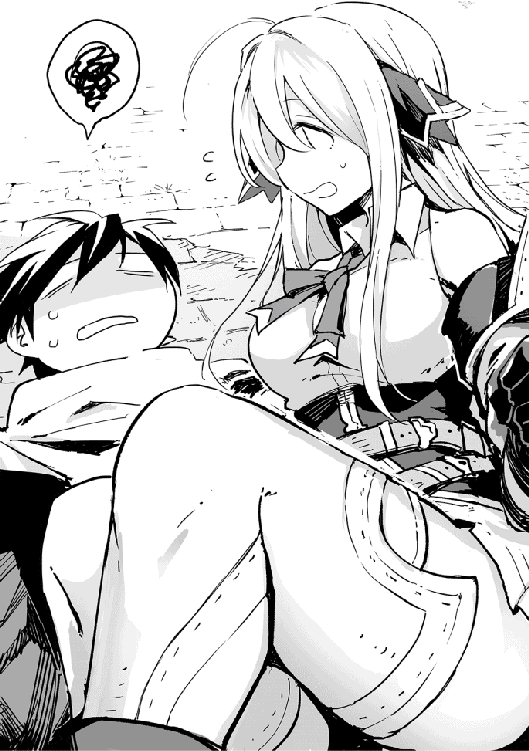
「ぐえぇ！」
「はっ！ ごめんなさい。大丈夫ですか!?」
少女は地に打ちつけた背の痛みに悶える俺の上で心配そうに訊いた。
「とりあえず、どいて」
「はわわあ！ ごめんなさい！」
少女は慌てて俺の上から降りる。
『大丈夫？ 優人君』
無理。背中かなり痛い。
「あわわわわ、どうしよう。とりあえず治癒魔法をっ」
「「「「姫様〜！」」」」
少女が飛びおりたバルコニーには大勢の騎士が俺達を見下ろしていた。どうやらこの少女は彼らに追われているらしい。
これ、マズくないか？
『かなりマズいねぇ。見つかっちゃったよ』
おいおい、マジかよ。
「姫様！ そこから動かないでくださいよ。絶対ですからね！」
そう言い残すと、バルコニーから騎士が消える。これは今が逃げ出すチャンスだ。
そう思って立ち上がったそのとき、再び上から声が降ってきた。
「「「「おりゃー！」」」」
『ええええぇぇぇぇぇ!?』
「!?」
一階に下りてからこっちに来ると思っていた騎士達は、助走をつけてそのままバルコニーから飛び降りてきた。
「待てと言われても無理です！」
少女と俺は同時にさっと身を翻して逃げる。
「こら待て貴様っ！ 何者だっ？」
「俺関係ないんだけど！」
追いかける騎士達ははっと俺に気づく。俺は敵認定されたらしい。
『まあ、不法侵入しているから見つかれば追いかけられるのは当たり前なんだけどね』
あんたはどっちの味方なんだよ！
とりあえず走りに走る。
少女は思ったより足が速かった。俺は体力がないからすぐバテはするが、速さには自信がある。
『スキル逃げ足を持ってるくらいだしね』
だが彼女はそれにしっかりとついてきていた。しかもさっきからごめんなさい、と何度もつぶやきながら。息が切れた様子はない。
追いかけてくる騎士達はざっと十五人。反撃も無理そうだ。ここは大人しく逃げたほうがいいな。
そう判断すると、俺は城門にむかって走る。しばらく逃げていて気づいたが、この少女も同じ方向に逃げているようだ。
城門から飛び出し、ソエルの森に入る。少女も森で撒くつもりのようだ。しかし騎士達はしつこかった。森の中もしっかりと追いかけてきている。
「......仕方ねぇな！」
撒くついでにあの暗殺者達の回収をあの騎士達に任せることにするか。
俺は少し前を走っていた少女の手を掴み、そのまま走る。
「こっちだ」
「えっ？」
俺はとある場所目指して走る。そしてあの『危険地帯』と書かれた看板が見えたところで通り過ぎざまそれを引き抜き、少女を導きながらそこを走った。すると、あとを追いかけてきた騎士達がそこを通ろうとしたところで、地面にぽっかりと穴があく。
「「「「うわああああぁぁぁ！」」」」
危険地帯の落とし穴に何人か落ちたがまだ何人か追いかけてきていた。
『あと六人！』
俺は暗殺者達が首から下が埋められている場所に導く。これでこの騎士達に彼らの処理を任せられるだろう。
「うわぁなんだこれは！」
「お前らは早く救助を！ 俺達は姫様を追いかける！」
『あと三人だよ、優人君』
そこを通り過ぎると、魔物に追いかけられた時用に作っておいた罠の引き金である、木にぶら下がっていたロープを走りながら引いた。
すると、小石やら丸太やらが彼らの頭上から落ちる。足止め用だし、撒くにはちょうどいいだろう。
『もはや忍者屋敷並みだよね。この森』
俺の家だからな。
『優人君の実家は忍者屋敷だったの？』
そこからさらに走って追手が来ないことを確認すると、ようやく俺は足をとめた。
「ぜぇ、はぁ......」
「あの、大丈夫ですか？」
「......」
俺は全力疾走したあとの激しい息切れをおこしているっつーのに、目の前の少女は息切れ一つしていない。
「あの、助けていただいてありがとうございました」
「気にするな」
ついでだったからな。
「あ！ 怪我をされていますね。ごめんなさい」
少女は俺の頬に手をかざすとなにかを唱えた。
「癒す力もつ優しき光、ゲリール」
すると、俺の頬から全身に温かいなにかが流れた。これは......。
『初級魔法、ゲリールだね。ちょっと魔力使いすぎだけど』
俺もなんとなく理解できてしまった。この少女の魔法は効率の悪い使い方をしていると。おかげで切り傷を治す程度の魔法が、背中の痛みまで消した。
薬の件といい、今の魔法の件といい、俺はなにかおかしい。知らないはずのことを知っている。というか理解できてしまう。
まあ、今考えることじゃないか。
「サンキュ。痛みひいたわ」
「いえ。私のせいですし......。あの、私はエネルレイア皇国第一皇女、エレノアと申します。お名前を伺ってもいいですか？」
俺は彼女のステータスを表示させた。
-------------------------------------------------------------
《ステータス》
エレノア・フェレーナ・エネルレイア
ＨＰ ４４７０／４４７０
ＭＰ ３１２／４７０
ＴＡ ３２５／３３０
ＬＶ 43
途中略
【魔法属性】 水光聖治 以降増可
【称号】 聖女・エネルレイア皇国第一皇女・対を成すもの・愛すべき天然？ 忌むべき天然？・おバカちゃん・捜すもの・リリアの姉・ハーフエルフ・聖女林・時を受け継ぐ者・魔の揺り籠・秘めたる歴史
【スキル】 聖語読解 ＬＶ１２５ 魔法陣読解 ＬＶ99
【職業】 《聖女》《魔法使い見習い》《剣士》《巫女》
------------------------------------------------------------------
皇女ってことは嘘じゃなさそうだな。
というか
「一国の皇女がそんなに簡単に名乗っていいのか？」
「え......？ はっ！ そうですよね。皇女って知られてしまうのはあんまりよくないんでしたっけ......。え、どうしよう、もう言っちゃったし......。......えと、あの、あなたは悪い人ですか？」
「少なくともあんたを利用して良からぬことをする、なんてことは考えてねぇよ」
「あ、そうですか！ よかった！」
エレノアはほっとしたように笑った。
いや、簡単に信じすぎだろ。
「まあ、あんたが姫様って呼ばれてたから、ある程度は予想ついてたけどな」
「なるほど。そうですよね」
「......はぁ。俺はユート・オガタ」
「え、ユート......さん？」
「そう、俺の名前」
「もしかしてあなた、勇者さんじゃないですか!?」
「......え？」
『え？』
俺は内心動揺した。エネルレイア皇国第一皇女ってことは、リリアの姉ってことだろ？ 俺が本物だと知られてるなら、リリアも気づいたってことで聖が危ないんじゃないのか。
「私、本物の勇者さんを捜してるんです！」
「......勇者なら、今頃パレードに参加してるだろ？」
「違うんです。彼は勇者じゃありません。私は彼にききました。召喚されたとき、もう一人召喚された方がいたそうなんです。その方は黒髪に黒目で背が彼よりも低くてオガタ・ユウトという名前の人で、彼こそが本当の勇者様なんです」
え、ウソだろ。俺バレてる？
冷や汗が背を流れる。ところが少女は自分の言葉で首を傾げた。
「あれ？ でもユート・オガタさんなんですよね。雰囲気は似てるけど、オガタ・ユウトさんとお名前は違うし......。ということは別人!? ごめんなさい！ 私、早とちりして！」
「......」
バカだ。このお姫様はバカだ。俺の名前逆になってるだけだろ!?
『あははははは！ 確かに！ たぶん洋一君から日本形式の名前を教えてもらったんだろうね。まさか、オガタをファーストネームだと思ってるとは』
笑ってる場合か！
『洋一君は大丈夫だよ。彼のこともちゃんと見守ってるけど、リリアがそのことに気づいた様子はなさそうだ』
そうか。
「ヨーイチ様が勇者じゃないってどういうことだ？」
「えと、あの、私聖女なんです」
「聖女？」
「はい。本来は、聖女が召喚された勇者様をお世話し、支え、守る役割を果たすのです。そしてその存在は、勇者と対をなすもの。リリアからヨーイチ様を紹介されたとき、この方は違う、と思ったんです」
「へぇ。じゃあ本物の勇者を見つけたとして、あんたはそいつをどうするつもりなんだ？」
「私、謝りたいんです！」
「は？」
「ロイド達に問い詰めたら、リリアはその方を追い出してしまったようなんです。本来なら勇者召喚に関する事柄は聖女である私の役目なのですが、私の力不足のせいでリリアに任せてしまいました。そのことを不満に思ったわけではないのです。ですが、その方が勇者様であろうとなかろうと、こちらの勝手でお喚びしたのに、追い出すのはおかしい。だから一言謝り、せめてご不便があるなら今更ですがお世話させていただきたいのです」
ロイドって誰だっけ？
『リリアについて君の召喚に手を貸してた魔導師の一人だよ。水晶玉持ってきた』
ああ、あいつ。
『で、どうするの？ 謝りたいって言ってるけど』
決まってんだろ。
「へぇ、そうなんだ。まあ、頑張れ」
『あ、言わないんだね』
当たり前だろ。
話きいてると聖女って特別な人間っぽいが、リリアにその役割を取られるくらい、こいつの立場は強くなさそうだ。そんな人間に世話になるのは逆に危険な気がするし、なにより俺は元の世界に帰る方法を探すんだ。旅に出るのに、城に戻ってどうするんだよ。
そしてなによりも、この女に関わるとろくなことがない気がする。
『あー、優人君の場合はそうかもね〜』
「あ、あの......ものすごく図々しいお願いなんですが、この森の出口を教えてもらえませんか？ 私、城から出たことがなくて......」
「......」
「ごめんなさい！ 私が巻き込んだのに......」
「はぁ」
俺はため息をつく。リリアに一発は諦めなきゃダメかな。
「わかった。森を出るまでは案内してやる。街のほうにいきたいのか？ それとも街道のほうか？」
「街道でお願いします」
いく方向一緒かよ。
「わかった。こっちだ」
『なんやかんや付き合ってあげるんだね』
まあ、これくらいはな。
『月夜ちゃんはどうするの？』
あいつは俺の居場所がわかる。そのうち追いかけてくるだろ。
これも契約の効果の一つらしい。
そう思って森を少し進んだそのとき、俺は森の中の、ほんの少し開けた場所で、地面をつついている鳥を見つけた。
「どうされたんですか？」
俺は無言でその鳥に近づくと、その首根っこを掴んだ。
「コ、コケェェ？」
「よし、夕飯の食材ゲット」
その鳥は見紛うことなき、鶏だった。
俺は空腹だった。ポルッポの肉も悪くはないが、たまには懐かしい味も食べたいというものだ。
「コケ！ コケ！」
バサバサ羽ばたかせて逃げようとするそいつを、俺は離さない。
「え、それ食べるんですか？ あれ、でもそれもしかして......」
『ゆ、ゆゆゆゆゆ優人くん！ それ食べちゃダメだよ！ それ僕の従魔だから！ 君にわかりやすく言うと火の鳥っていうか、鳳凰っていうか！』
「はっ！ だだだだダメです！ 食べちゃダメですそれ、聖獣ですよ！」
「は？」
俺は手にもつ鶏を見下ろす。チャボっぽいその体はまさしく鶏だ。まあ、羽の色だけは綺麗な金と紅蓮色をしているが。
「火の鳥っつーことは燃えるんだろ。燃える肉は焼き鳥じゃねぇか。食べる以外になんとする」
「ココココココケェェ......」
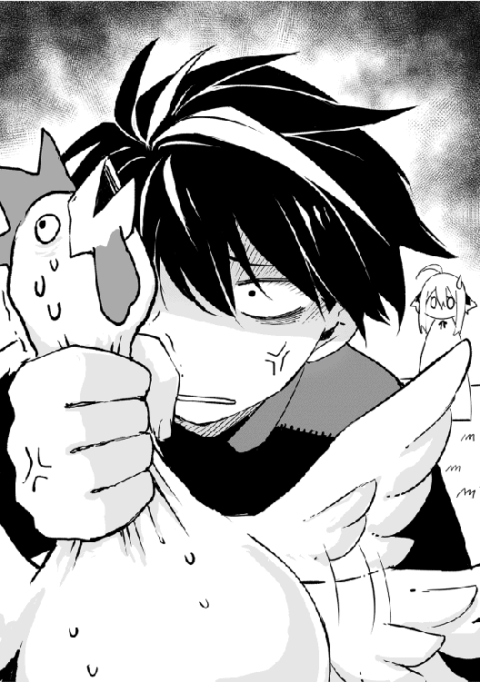
鶏は涙を浮かべた目で俺を見上げた。だが、その程度で屈していては俺は鳥を捌けない。
「ユートさん、食べちゃダメです！ 神鳥が可哀そうですよ」
その言葉が放たれた瞬間、俺は固まった。そしてゆっくりと振り返る。
「......誰の、身長が可哀そうだってぇ？」
「ゴ、ゴゲェ......」
「ひっ！」
『優人君締まってる！ 首締まってるから！』
エレノアは怯えたように体を硬直させた。手に力が入りすぎて鶏が瀕死だ。嘴の先から炎が漏れている。
『優人君落ち着いて！ 身長じゃなくて神鳥！ 字が違う！ 字が違うから！』
ウィンドウ画面には
『 身長→× 神鳥→○ 』
と表示されていた。それを見て俺は落ち着く。
「悪い、取り乱した」
「い、いえ......落ち着かれて何よりです」
『身長が優人君の地雷ワードなわけね』
はい、スルー。
「んで、神鳥ってのは？」
「はい、その鳥は神の使いたる......神鳥です。何度か拝見したことがあるので間違いない......と思います」
そんな怯えなくてももうしねぇよ。
『いや、あれは怯えるよ。めっちゃ怖かったもん』
「でも、どうしてこんなところに？」
エレノアは首を傾げた。
で、どうしてこんなところに？
俺も心の中で復唱する。
『僕の従魔に来てもらったんだよ。僕はあんまり君に干渉できない。こうやっていろいろ話すことはできても、直接それ以外の手助けをすることはできない。暗殺者が襲った時も、僕が君を守れなかったようにね。だから護衛みたいなものとして、君の旅にその子も連れて行ってもらおうと思ってさ』
ふーん、護衛、ね。
俺は鶏の首から手を離した。すると鶏は恐る恐る俺に近づく。
「あら？ もしかして契約を望んでいるんですか？」
「コケェ」
それは俺を見上げた。なんか前にもこんなことあったぞ。
『本契約は僕と結ばれてるんだけど、仮契約ならできるから契約を結んであげて』
契約法ってのは......。
『もちろん、名前をつけることだよ』
俺は鶏をじっと見て考える。鶏は期待するように見つめ返す。
「よし、おまえの名前はやきとりな」
「コ、コケェ!?」
「え!?」
仮契約なんだろ。深く考えた名前をつける必要はねぇよな。
『まあ、言われてみればそうかもしれないけど......』
「神の使いと契約を結ばれるなんて、ユートさんはすごい方なんですねぇ」
そんなしみじみと言わないでくれ。
----------------------------------------------------------------
《ステータス》
やきとり
ＨＰ ３２００／３２００
ＭＰ ６０９０／６０９０
ＴＡ ３８６／３８６
ＬＶ 38（98）
途中略
【魔法属性】 火光聖
【称号】 地獄鳥・聖獣・神鳥・神の使い・神の従魔・火の意志もつもの・まぬけ・やきとり
【スキル】 直観 ＬＶ１００ 索敵 ＬＶ98
【職業】 《聖獣》《神の使い》《鳥》
----------------------------------------------------------------
そのとき、軽い爆発音が聞こえた。
「今の、城のほうからだな」
「っ！」
「気になるのか？」
「......いえ、今戻るわけにはいきませんから」
そうは言うものの、気になって仕方ないのは見ていてわかる。
『優人君、実は言い忘れてたんだけどね、城にはリリアはいなかったんだ』
は？
『だってリリアだもん。パレードのほうに参加してるに決まってるでしょ』
「......」
もっと早くそれを言え！
『全部教えたり、あれはダメ、これはダメ、って言ってたら子供は育たないんだよ。大事なのは自分で思い至り、行動に移す自主性だ』
俺はあんたの子供かよ！
『だからね、ほら』
突然やきとりが光りだした。そしてその光は大きくなり、光がおさまると、目の前には巨大化してキラキラと輝く光の粒子をまとい、長い尾を風に遊ばせる壮麗なやきとりが佇んでいた。
「うわぁ。綺麗ですね」
今の姿なら、神鳥と言われても頷ける。やきとりは足を折って俺に背をむけた。
「乗れって言ってるのか？」
『リリアに一発入れておいで』
「にゃー」
そのとき、ちょうど月夜が帰ってきた。
「猫？」
「よし、いくぞ」
「え、どこへ？」
「さっきの爆発音、俺も気になるからな」
空を自由に飛びたいな、というのは人類の夢だが、ここまで壮観な飛行はそうないに違いない。
やきとりの背に乗って空を飛ぶのは思いの外気持ちが良かった。こいつが火の鳥なせいか、体がぽかぽかする。
上から見下ろすと、城はどうやら部屋の一部が爆破されたように壊れていた。
「あの部屋はリリアの部屋ですね。よかった、あの子は城にいないから。でも、他の人達は大丈夫かな」
「城に戻るか？」
「......いいえ」
「そうか」
月夜は無感動にそれを見下ろし、鼻を鳴らした。
『......あれ、月夜ちゃんの仕業だよね。実は主の身を危険に晒されて、かなり怒ってたのかな？』
俺はやきとりに指示を出してパレードのほうにむかった。爆発音とは言っても、それほど大きなものではなかった。少なくとも、このパレードの歓声という名の騒音がかき消すくらいの大きさだった。
いずれ情報がいくとは思うが、まだリリア達は気づいていないようだ。
「エレノア、しばらく目を閉じてろ」
「え？ わかりました」
エレノアは素直に目を閉じる。
「月夜、エレノアの耳を塞いでくれ」
「にゃー」
月夜がエレノアの耳を塞ぐのを確認すると、俺は一気に旋回してパレードの御輿に近づいた。それに気づいた観客達が、一斉に驚きの声を上げる。
俺は、ある程度顔を隠すためにフードを被ってリリアのいる御輿に一気に近づくと、やきとりに炎を吐かせた。
「っ！」
「よお、久しぶりだな、リリア」
「あなたは......」
咄嗟に水の壁で身を守ったようだ。赤色の髪は最初に会ったとき以上に飾り立てられ、まとうドレスは純白。しかし、リリアの髪とドレスは焦げていた。こうやってしっかり観察するとエレノアと似ている。その色は違っていたとしても。
そして俺は御輿に移り、思いっきりリリアの頬をひっぱたく。
「おっさんの痛みはこんなもんじゃねぇぞ」
乾いた音が響いた。俺の目的達成だ。リリアは一瞬呆然としたあと、その表情にゆっくりと憎悪が刻まれる。
「......？」
俺は目をこすった。一瞬リリアの髪が茶色になったように見えたからだ。
「なにがあったんだ！」
「久しぶりだな、聖」
「......緒方？」
リリアとは別の御輿にいた聖がそこから降りて現れる。観客達はざわざわと指さして騒ぎ、護衛の騎士達も集まって槍を俺にむける。
「俺はこの国を出る。だけど、おっさんにはもう手を出すなよ。あんたが俺にしたこと、聖に知られたくなかったらな」
「っ！」
いろんな話を総合して考えると、リリアが俺を狙ったのはリリアが俺に対してしたことを聖に知られたくなかったんじゃないかと予想した。カマをかけたがどうやら正解みたいだ。確かに今、聖に悪感情をもたれるのは避けたいだろう。
リリアは顔を赤くしたり蒼くしたりしながら、わなわなと震える体を押さえた。衆人環視の中で髪を燃やされるというのはさぞかし屈辱だろう。髪は女にとって命と言われるし、皇族ならなおさらだ。
「聖ー！ 俺、旅に出るから」
「え？」
「じゃあな」
「っ！ 待ちなさい！ その鳥はっ......！」
俺がやきとりの背に飛び移り、ぽんとやきとりの首を叩くと、やきとりは一声鳴いて一気に羽ばたきを強める。
ものすごい速さで地上が箱庭に見えるくらいの高度にくると、俺はようやく一息ついた。
「月夜ー、もう手を離してもいいぞ」
「にゃー」
「ん？ なんだったんですか？」
「気にするな」
素直に目を閉じていたエレノアを森の出口に送るためにそちらにむかう。すると突然強風が吹いた。
『ヤバい時間切れだ！ 優人君早く！ 早く地上に降りて！』
「は？」
神のコメントに驚くと同時に、やきとりがぽんっと小さくなった。つまり俺達は標高何千メートルだか知らないが、そこで空中に投げ出されたことになる。
俺は咄嗟に全員を掴んで引き寄せ、傘を開いた。
すると少しだが、落下速度が遅くなる。だが傘を開いたことで強風に煽られ、流されていった。
『優人くぅぅぅぅぅぅぅん！』
「パレードのときの、神鳥様の姿はすごかったよな」
「ああ、俺も実物は初めて見たけど、絵で見るより綺麗だったなぁ」
「ああ、御使い様のお顔は拝見できなかったが、祝福が与えられるところをみられるなんて、俺達はツイてるぜ」
「でも、なんかリリア様の様子変じゃなかったか？」
「それはおまえ、御使い様が現れて驚かれたんだよ」
「今度の勇者様はきっと魔王を倒してくださるよな」
「ほんとだよ。あの憎き魔族を根絶やしにしてくれないと」
「またケルントルのほうでは魔族と小競り合いしてるみたいだし」
「そんなの勇者様にかかればちょちょいのちょい、だ」
「まったく、ここの国民はバカばっかりね。さすが十三の娘と歴史伝説に頼りきりのハリボテの国は違うわ。パンとサーカスとはよく言ったものね」
まあ、かく言う私もそれほど頭のいい人間ではないけれど。
「なにしに来やがった、アデーレ」
クロワルドおじさんは呆れたように、いえ、少し怖い顔で私を見た。
「久しぶりに親友の娘に会ったのに、そんなに邪険にしないでよ」
私は当然のように厨房の椅子に座った。本当にこの店は昔から変わらない。
「昨日のパレードは見物だったでしょう？ 私も遠目に見てたんだけど、いろいろおもしろかったわ」
わざわざエネルレイア皇国まで戻ってきた甲斐があったというものよ。特にあの世間では御使いと呼ばれてる神の使いが、リリア姫と言葉を交わしている場面。
遠目で一瞬だったけど、リリア姫が御使いにむけたあの暗い眼差しは、バカな国民達みたいに見逃したりはしない。各国の要人達の中でも、それに気付いた人達は何人いるのかしら。少ないとは思うけど、確実に何人かいるはずよね。
そこで記者としておもしろいのが、勇者偽物説。
もともとそれはほとんどの偉い人達が疑っていること。だけど問題はないの。だって、勇者が本物であろうが偽物であろうが、魔王を倒してくれさえすればどちらでもいいから。だからこのことに関してはどこの国も声を上げることはないでしょう。今のところは。
まあ、偽物勇者については私の勘でもあるのだけど、調べてみるのもいいかもしれない。
それよりも興味深いのがあの御使い。フードで顔を隠していたから顔は見えなかったけど、その正体は本当に御使いなのかしら。あのとき御輿の近くの最前列にいた観客を探し出してきいてみたけど、誰も顔を見てなかったのよね。なにか言葉を交わしている風だった勇者も、あの角度じゃ顔は見えてなかったでしょうし。
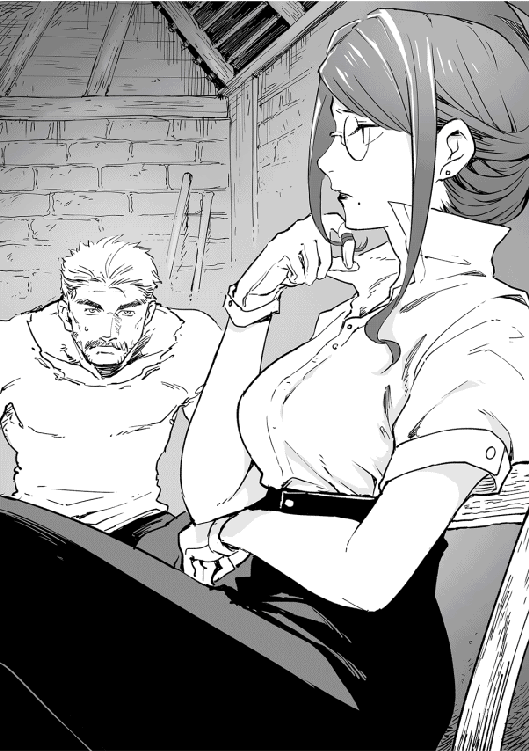
唯一御使いの顔をみられたのはリリア姫だけ。あの御使いがただの人間だったと仮定したら、あの勇者と知り合いだったのかしら？
「俺は見に行ってないからな。騒ぎはそれとなくきいてるが、実際は見てねぇんだよ」
「あら、どうして？」
「ちっと怪我してな。もう完全に治ったんだが念のため部屋で休んでたんだ」
「そう」
私はやれやれと肩をすくめる。あんな世紀の光景を見逃すなんて。
「まあいいわ。今日は例の魔剣の少年に会いに来たのよ」
おじさんの顔色が一瞬で変わった。
「おめぇさん、またユートになにかするつもりか？」
「いいえ、もうなにもしないわ。他に調べたいことがあるから」
「......ユートは出てった」
「どうして？ まさかもう命を狙われるとかそんな展開になったとか？」
「......」
冗談交じりだった私の言葉におじさんは否定せず、私を睨む。
「え、図星？ その展開に至るには早すぎるわよ」
魔剣の件が公表されて起こる事態は簡単に予想できる。最初にくるのは鍛冶ギルドからの勧誘。次に冒険者達からしつこく捜索されて武器づくりを依頼される。最後は国からの技術の国有化の勧誘。それら全てを断ると、はじめて実力行使の事態が出てくる。
「私が魔剣のことを公表したとしても、冒険者ギルドに属してて鍛冶ギルドからも一目置かれるおじさんのお膝元にいるなら、それなりに安心だと思っていたのだけれど。......まさか、怪我ってそれに巻き込まれて？」
「あいつは元々ワケありだった。魔剣の件で狙われたかどうかは知らん。暗殺者が襲ってきた。ただ、それだけだ」
「私がきいてるのは、おじさんが怪我をした理由よ」
「......」
「そう。それはごめんなさい。私の短慮が招いたかもしれないことだものね」
「おまえ、全然、謝ってねぇだろ」
おじさんの顔は怒りを露わにしていたけど、私はにこりと笑う。
「おじさんの怪我の件については、謝るわ。でも、記事を書いたことで起きたことは謝らないわよ」
「アデーレ......！」
「だって私は構わないんだもの。私が書いた記事で誰かが死んで誰かが生きる。誰かが喜び、誰かが泣く。誰かが救われ、誰かが損をする。望むところだわ」
「それで他人様に迷惑かけて、さらにおまえ自身もいろんな奴らから命狙われてんだろうが！」
「そうよ。私が持ってる情報を欲しい人は山ほどいるし、私が邪魔だったり、恨みをもつ人はそれ以上にいる。おかげでスリリングな毎日を送れているもの」
おじさんは、悲しげにため息をついた。
「あいつが死んでから、おまえにいったい何があったんだ？ おまえそんな奴じゃなかっただろ」
「父は関係ないわ。ただ父が死んでから、ちょっとこの世界の現実を見る機会に恵まれただけよ」
「......」
「毎日綱渡りしてるけど、これぐらいしないと、生きてるって気がしないのよ。生は死の飾り物なんだから」
誰にも理解されない私の生き方。死生観。それでも構わない。それが私だから。
批判するならするがいい。それでも変わらないから。他人に迷惑をかける？ 生きている限りは誰にも迷惑をかけないなんて不可能でしょ。
「少年には悪いことしたって気持ちもあるわ。どうやらおじさんにとって大切な少年だったみたいだから」
「あいつが了承してねぇから正式じゃないが、俺はあいつを弟子だと思ってるからな。そんな奴を、おまえは危険に晒したんだ！ 魔剣を盗んだのもおまえだろ！」
「そうよ。だって普通に頂戴って言ったら、くれなかったでしょう？」
「当たり前だ！」
「わかった。おじさんが大切にしている子ならもう手は出さないわ。魔剣もちゃんと少年に返す。そうね。もし会えたら、一つだけなんでも情報をあげようかしら」
「おまえ、またそんなことを」
「情報は私の生命線よ」
私は片目をつぶる。
「この世で一番怖いのは、殺人鬼でも欲望剥き出しの奴でも魔王でもない。すべてがどうでもいいと思ってる奴だ。そういう奴は誰にもとめられない。おまえはそんな人間になるつもりか？」
「なるんじゃなくて、もうなってるのよ」
「......はぁ。俺はまだ、魔剣を盗んだことと、記事を書いたことを許してないからな」
「そう。ならどうする？ 昔みたいに拳骨かしら」
するとおじさんは私に近づいて拳骨を頭に落とした。
「っ！ 痛いじゃない！ 髪も乱れるし」
括っていた髪をもう一度結い直す。
「痛くしたんだから当たり前だ。ちっとは反省しろよ！ これはこんなことで済む問題じゃねぇし、どんなに変な生き方をする人間でも、おまえは立派な大人だ。まだまだ子供の人生が翻弄されてるかもしれねぇんだぞ！ 大人としての責任をもって仕事しろよ」
立派な大人だなんて、かなりの皮肉言うじゃない。でも私に対して、ちゃんと人間扱いしてくれるのはおじさんぐらいね。ちゃんと心配してくれるのも。
でもそれが心苦しくさせる。
「あいつはただぬくぬくと育った男じゃねぇぞ。あいつの腕は異常なほど細かった。この街にいるあの哀れな子供たちと同じような腕をな。あれは、もちろんそうじゃない可能性もあるが、おそらく飢餓状態を経験している腕だ」
「......」
「そんな子供を、おまえは追い詰めているのかもしれねぇんだぞ」
「そんな子供、世界中にいくらでもいるわよ。その少年を憐れむくらいなら、私は獣人達を憐れむわ」
「問題をすり替えてんじゃねぇよ！」
なにを言っても意見を変えない私に、おじさんは傷ついたような顔をした。今まで何度もおじさんには叱られたけど、再会したあとの私がそれを直したことはない。おじさんもそれをわかっている。
だからおじさんは無理やり思考を切り替えた。
「俺がおまえに言えることはそれくらいだ。俺が何度言ってもおまえは聞かん。情けないかぎりだが、あとはユートに任せる。ちゃんとあいつに謝れよ。これだけは絶対だからな」
「はいはい」
「久しぶりに会ったのに、俺だってガミガミ怒りたくないんだからな」
「はいはい」
「んじゃちょっと腹ごしらえするか。おまえもな」
「はいは......はい？」
おじさんは厨房に置いてあった巨大な鍋からスープをすくい、私の前に置いた。
「どうも俺の料理は人には体に毒らしくてな。ユート監修のもと、作り方を指導してもらったから、もう大丈夫なはずなんだ」
「ちょ、ちょっと待っておじさん。父からもう料理は作るなって三十年前に言われてたんでしょ？」
「ああ。でも、うまいぞ？ そう言えば、もし俺の料理を食べさせる人物がいたら、その人にごめん、て伝えてくれとユートに言われたな。どういう意味だったんだ？」
それ、明らかにそのまんまの意味でしょ。魔剣の少年、諦めたのね。
「さあ、試食第一号だ！ たんと食べてくれ」
たんとなんか食べられるわけないでしょ！ 一口で昇天しちゃうわよ。まさかこれが天罰ってわけじゃないでしょうね。
おじさんはキラキラした眼差しで私を見た。この眼差しに晒されると、なぜかもう逃げられないのよ。
私は諦めて、スプーンを手に取る。
そこで不意に思った。
スリリングな毎日、この料理があればおくれるわ、と。
「もういいから」
「でも......」
「もう充分回復した」
俺は未だに魔法をかけ続けるエレノアの手をとめた。
「月夜も、悪かったな。下敷きにして」
「にゃー」
月夜は気にするな、と鳴く。猫はどんな高さから落ちても無事でいられるというが、月夜は地上につく直前、巨大化して俺とエレノアの下敷きになり俺達を庇った。
「猫ちゃん、ありがとう。私の魔法で回復してあげられればよかったんですが......」
魔獣は己の魔力と自然回復でしか回復できないという。例外は、契約を結んだ場合。主の魔力によって魔獣は回復することができる。だからこそ、魔獣は主従の契約を結ぶ。Give and take.の関係なんだそうだ。
だが月夜は今制限を受けているため回復できず、俺もまだ回復できる魔法を習得していない。
「コ、コケー」
「あー、もうわかった。落ち込むなよ。どうせ俺と契約したから能力を制限されて、巨大化した状態を保てなかったんだろ」
「コケ」
落ち込むやきとりは頷いた。もう展開は読めてんだよ。
「......治癒の光よ集え、ゲリール」
俺は月夜の体に手をかざす。エレノアの見様見真似でやってみた。すると、手のひらの先が光り、傷ついた月夜の体が癒える。
「......できた」
「にゃー！」
月夜は立ち上がった。
「よかった！」
エレノアはほっとしたように肩の力を抜いた。そしてエレノアは痛む足に力を入れて立とうとする。
「......ほれ、あんたも」
「え？」
「俺達にばっかり魔法かけて、もう魔力底をついてんだろ。まったく、自分の怪我には魔法かけずになにしてんだよ」
「あ、すみません」
俺はエレノアの足に治癒魔法をかける。初級魔法なら、見ただけで使えるみたいだ。
「動けるか？」
「......。はい、動けます」
何度か足を動かし確認すると、エレノアはふらつきながら立ち上がった。
「あの、ありがとうございます」
「ああ」
エレノアは戸惑ったように視線を迷わせた。そのあとぐっとなにかを飲みこみ、周囲を見回す。
「ここはどこなんでしょう？」
「さあ？ 俺も飛ばされたときは位置を確認する暇なかったからな」
俺も周りを確認すると、森の中のようだ。だが、ソエルの森ではない。ソエルの森なら一発で現在地がわかる。
仕込み刀も調子を見てみたが、全く問題なかった。けっこう丈夫みたいだな。
「とりあえず、歩くか」
「はい」
俺達はとりあえず森の中を歩いた。さっきから心の中で神に話しかけるが、応えはない。
「巻き込んで、悪かったな」
「え？」
彼女はきょとんと首を傾げる。
「俺が、やきとりに乗せたりなんかしなければ、あんたはこんなとこに飛ばされることもなかったのに」
「......」
エレノアはぽかんと俺を見る。
「なんだよ？」
「いえ、巻き込んだのは私のほうなのに、と思って。城から逃げ出した私があなたを巻き込んだのです。すみませんでした」
「いや、それは......」
そこで俺は口をつぐんだ。
城に侵入してた俺の自業自得とも言えるしな。だが、侵入したと堂々と言うこともできない。
「にゃー」
なぜか月夜はエレノアに頭を下げた。
おまえ、なにかしたのか？
「コケ〜」
「あー、おまえはもう泣くな！」
しばらく歩いていると、森の中に小道があった。とりあえずそれに沿って歩いていると、後ろの繁みがガサガサと揺れた。
「なんだ？」
「コケッ」
「う、うう......」
現れたのは一人の赤毛の男性だった。その人は体を折って俺達の前に倒れる。
「大丈夫ですか!?」
慌てて駆け寄ると、ところどころに切り傷と擦り傷があり、背中に大きな刀傷のようなものがあった。
俺はすぐにゲリールを唱えるが、初級魔法ごときで塞がる傷ではない。
「うう、僕のことはいいから。早く逃げて......」
「逃げる？」
男性はそれだけ振り絞って言うと、気を失ってしまった。その時、一斉に後方でステータスが表示される。
-------------------------------------------------
《ステータス》
アイドル親衛隊所属な山賊１
ＨＰ ３６０／３８０
ＭＰ 32／40
ＬＶ 27
-------------------------------------------------
アイドル親衛隊所属な山賊２
ＨＰ ５２０／５２０
ＭＰ 26／26
ＬＶ 12
-------------------------------------------------
アイドル親衛隊所属な山賊３
ＨＰ ５４５／５５０
ＭＰ 55／66
ＬＶ 27
-----------------------------------------------
アイドル親衛隊所属な山賊４
ＨＰ ２３４／２３４
ＭＰ 33／33
ＬＶ 23
----------------------------------------------
山賊かよ！ しかも全員アイドル親衛隊。
現れたのは髭を生やしたいかにも、というおっさんの山賊たちだった。
「おっ、べっぴんさんもいるじゃねぇか」
「今日はついてますね、兄貴」
ニヤニヤと湾曲刀をもったおっさんたちは舐めるようにエレノアを見る。
「ちっ」
俺はエレノアを背に庇って仕込み刀を抜く。月夜ややきとりも臨戦態勢だ。
「さて、そっちの坊やはもってるもんとそのべっぴん置いて去りな。今なら見逃してやるよ」
あのニヤけ顔に苛立ちながら俺が傘を振り回そうとしたそのとき、俺の目の前にブロンドの髪が舞った。
「なっ！」
「はっ」
エレノアは片手半剣を駆けながらすらりと抜き、一瞬で相手の懐に入って柄の部分で顎を下から突き上げ、そのままもう一人の山賊の湾曲刀を叩き折って急所を蹴り上げる。
あとの二人が後ろから刀を振りかかるが、彼女はそのまま刀を弾き、裏拳で一人の顔を潰したあと、もう一人は肘鉄砲で隙を作り、刃をたてず平たい部分で相手の頭を叩きのめした。
あっさりと気絶する四人を見て、俺は呆然とする。それくらい早業だった。
「ふぅ。大丈夫でした？」
エレノアは剣をしまうと、にこやかにきいてくる。
大丈夫どころか、俺は一歩も動いていないんだから、怪我をするはずがない。
「大丈夫だ」
「そうですか。よかった」
俺は寝転がしたままの男性を見る。どうやら山賊に襲われて追われてたんだろうな。
「......あの、代わりましょうか？」
俺は男性を背負いながら歩いていた。あのまま放っておくわけにもいかなかったしな。エレノアは魔力を使い果たしているから魔法は使えない。今は男性に最低限できる手当を施し、かけないよりはマシかと俺がゲリールとやらをときどきかけている。
「いや、大丈夫だ。俺はまだいける」
「でも、足を引きずってますし......」
「......」
男性は背が高かった。おかげで俺が背負うとどうしても、地に足を擦ってしまう。だが、女に背負わせるってのもなんか気分悪い。
「にゃー」
「コケッ」
ああ、そうだよ。ちっぽけなプライドだよ。
おまえらが言うとおり、確かに怪我人を引きずって運ぶのも問題だしな。
「悪い、頼む」
「はい」
エレノアは男性を受け取ると、軽々と背負い上げて歩いた。
「......」
「どうされました？」
急に無言になった俺を振り返り、エレノアが首を傾げる。
「いや、なんでもない」
「そうですか？」
しばらくあてもなく歩き続けると、いつの間にか周りは霧に囲まれていた。
「視界が悪いな」
「そうですね。大丈夫でしょうか？」
俺達は木に印をつけながら歩くが、いっこうに先は見えず、ここがどこなのかもわからない。
更に何度か魔物に遭遇もしている。その度にやきとりや月夜が魔物を倒すが、霧の奥に進むにつれて魔物と遭遇する頻度が多くなっている気がした。
「ちっ。雨降ってきやがった」
上からぽつぽつと降りそそぎ始めた滴。俺はフードを被り、エレノアに傘をさしかける。だがこの雨は怪我人にはよくない。一応男性の様子を確認すると、熱が出ている。ますますマズイ。
どこか雨宿りはできないかと足を速める。
「あ、あれ教会でしょうか」
エレノアの視線の先には、教会らしき建物があった。本格的に降り出しはじめたこともあって、そこに雨宿りすることにする。滝のような雨で周りは見えない。
なんとか教会の扉の前にたどり着いた。手拭いで軽く体を拭いたあと、何回かノックする。
「あのーすみません！ 怪我人がいるんです。今晩泊めていただくことはできないでしょうか！」
しばらく間があった。俺達がもしかして誰もいないんじゃないかと顔を見合せた時、扉が開かれる。
「どちらさまでしょうか？」
硬い顔をした女性が顔をのぞかせていた。
俺達が案内されたのは、礼拝堂と繋がった宿舎だった。廊下を挟んでずらりと並ぶ部屋の一室に男性を運び、ベッドにうつ伏せに横たわらせる。
「すぐに魔法水をもってきます」
怪我人を診てすぐに俺達を教会の中に入れてくれた女性は、修道服っぽいものを着ていた。だがところどころ自分の知っているものとは違うみたいだ。シスターなんだろうか。
彼女が魔法水を取りに行っている間に俺達は意識のない男性の服を脱がす。止血していた包帯をとると、背中の傷が現れた。
「傷、開いていますね。感染症になっているかもしれません」
「ああ」
エレノアは慣れているのか手早く傷口を酒で消毒している。
「これ、魔法水です」
戻ってきたシスターが魔法水の入ったビンを手渡す。さっとそれを受け取った俺は傷口に魔法水をかけた。
「それ、飲ませてください。感染症にも効果があります」
俺はエレノアの指示どおり男性に魔法水を飲ませた。シスターが予想していたのか、吸い飲みを用意してくれていた。
改めて包帯を巻き直し止血したあと、俺達はふぅ、と息をついた。今の俺達にできるのはこれくらいだ。
「まだ油断はできませんが、これで一応大丈夫でしょう。ところで、あなた方のお話をきかせていただけませんか？ なぜ回帰の霧の溜まり場へ？」
「回帰の霧の溜まり場？」
「ここの霧の迷宮のことです。ここに来るまでに、霧に行く先を阻まれませんでしたか？」
「ああ、確かに霧がでてたな」
「ここらあたりの霧は自然発生した魔力から派生したものなのです。この霧の中に入ると約一か月外にでることができません」
「「一か月!?」」
俺とエレノアの声が重なった。
「月に一度の周期で霧が晴れますので、その隙にこの霧の迷宮を抜けるのです。ですがなにも知らずこの霧に入ると、一か月間彷徨いますので普通の人間は死んでしまいます。そこで、この教会が建てられたのです」
あ、やっぱりここは教会であってんだな。
「この霧の特性として、台風の目のように霧の中央部は晴れています。霧に入って彷徨うと大抵この場所に辿り着くのです。この教会はその目の部分に建てられ、迷い込んだ方達が霧が晴れるまでの間宿泊する場所として機能しているのです」
『この世界にはね、自然発生した魔力から派生した迷宮、優人君に馴染のある言い方にすると、ダンジョンとかラビリントスとかが複数存在しているんだよ』
急に現れたウィンドウ画面に俺は面食らう。
おい、いきなり出てくんなよ。
『そんなこと言って、僕がいなくて寂しかったでしょ？』
十デシリットルくらいな。
『少な！ しかもデシリットルって......。僕もちょっといろいろあってね。応えてあげられなくてごめんね』
「私達は、森で迷ってここに辿り着いたんです」
「森......霧を注意する看板はありませんでしたか？ 一応複数設置しているのですが」
「えっと、見ませんでしたよね？」
「ああ」
そんな看板は見ていない。
「そうですか。また霧が増えたのですね」
「霧が増えた？」
「最近、この霧が漂う範囲が広がっているのです。そのため看板を設置してもすぐ霧に呑み込まれて入ってしまって......。それで、この方の怪我はどうされたんですか？」
俺は彼女に、この男性と出会ったいきさつを話した。
「そうでしたか。それでこんな怪我を。一応傷の治療はできるくらいの準備はあります。霧が晴れる日まで約十日の間はどうぞ、この教会でお過ごしください」
「ありがとうございます」
「あ、名乗り遅れて申し訳ありません。私はこのブルイヤール教会の司祭、アウローラと申します」
「あ、私はエレノア・フェレーナ・えね......」
俺は反射的にすぱーんとエレノアの頭をはたいた。
『キレーにはたいたねぇ。なんかスリッパが見えた気がするよ』
迂闊に皇女の名前を名乗ってんじゃねぇよと睨むと、エレノアははっとした。
「あ！ えと、エレノア・フェレーナです。お世話になります」
俺の視線の意味を悟ったエレノアは素直に頭を下げる。
「俺はユート・オガタだ」
「はい。よろしくお願いします」
アウローラさんはにっこりと笑った。
このブルイヤール教会に辿り着いてから二日経った。
今ではすっかり雨も上がって、日がさしている。にもかかわらず、相変わらずあの霧はこの教会を囲むようにずっとそこにあった。まあ、この教会を中心に半径二キロメートルくらいの範囲は霧が漂わない。その限られた土地にはところどころに木や畑や、井戸、様々な建物があった。
おかげで食糧には困ることはないだろうな。
俺とエレノアはそれぞれ一室もらって過ごしている。あの怪我をしている男性は未だ目覚めず、エレノア、アウローラさん、ときどき俺というローテーションで常に誰か付き添うという状態だった。
だが、この教会のことでいくつか気になることがある。
一つ、ざっと教会内を案内してもらったんだが、どう考えてもこの教会はアウローラさん一人で管理できるほどの規模の施設ではないように思えたこと。
二つ、俺が借りている一室は宿舎の一階の部屋なんだが、なぜか二階でドタドタと足音がしたこと。
アウローラさん曰く、この教会にはアウローラさんだけしかいないらしい。二階の足音がアウローラさんの足音だと言われればそれまでだが、どう考えても複数人の足音のような気がする。
三つ、昨夜のことだ。俺が部屋のベッドで寝ていると、部屋の外から声がきこえた。
「さあ、トイレは静かにいくのですよ」
「はーい！」
「しーっ！」
片方はアウローラさんの声だったが、もう一人はいったい誰だったのか。俺はなにも音をたてないよう寝たふりをしていたが、少しいびきをかいてみた。
するとあからさまにドアのむこうで誰かが緊張を解いたのが伝わったので、俺は深くつっこまないことにした。
四つ、俺が教会内でうろうろしているとき、いくつかの小さな生き物が動く気配を感じること。そして時折泣き声がきこえること。
ことここに至ると、アウローラさんがなにを隠しているのかは予測がついてしまった。
その理由はわからんが、ステータスが表示されないから俺達に敵意はないんだろう。月夜もやきとりも見て見ぬ振りをしていることだし、俺もなにも言わないことにした。
そしてこの教会滞在三日目にして、俺はこの教会の秘密をしってしまうことになる。
この日俺は普通に寝てたんだが、夜中に喉が渇いたので食堂にむかった。このとき俺はなにも気配を感じていなかった。そして食堂で明かりをつけた瞬間、俺は目の前の光景に目を見開いた。
食堂はそこそこの広さがある。中央には長机がおいてあるんだが、その机にずらりとならんだ食事と、それを食べている大勢の子供達がいた。
だがおかしいのは、その子供達には全員、耳がついていたこと。
『いや優人君、その言い方じゃ誤解を招くよ』
ああ、そうだな。正確に言えば、獣の耳がついていたこと。獣の尻尾がついていたこと。角が生えていたこと。
「ど、どうかお見逃しください！ さもなくば、私は、私は！」
いやいや、なんでアウローラさんは包丁をこちらにむけているんだ。
「いや、とりあえず説明を求めます」
俺は両手を上げてそう言うしかなかった。
「うわーん、あーん！」
「ああ、よしよし。大丈夫ですからね！ 今泣かないでぇ」
「いや、説明はあとでいいよ。赤ん坊は泣くのが仕事だし。な？」
『なんか不思議な状況だねぇ』
アウローラさんの腕に抱かれているのは小さな赤ん坊。首はすわっているものの、手も足も小さく、獣耳も小さい。この赤ん坊は竜人族だそうだ。
俺達の険悪な（アウローラさんの刃物事件）雰囲気で目を覚ましてしまった赤ん坊は激しく泣き出してしまった。この声にはきき覚えがある。俺がきいた鳴き声は、この赤ん坊の泣き声だったみたいだな。
「ユートさん！ アウローラさん！ 男性が目覚められました！」
そう勢いよく食堂に駆け込んできたエレノアは目を見開いた。後ろからあの赤毛の男性も顔をのぞかせる。
「これはいったい......」
「おや」
「あ、あ、ご、ごめんなさい！ 見逃してぇ！」
「おい、今は危ないから！」
再び取り乱して包丁を手に取ろうとしたアウローラさんをとめる。
赤ん坊抱いてんだから危ないことはやめてくれ！ まだ周りに子供達もいるんだから！
「赤ん坊？ まさか、それはユートさんの隠し子!? それともアウローラさんとご結婚されていたんですか？」
「どうしてそうなる！ どう考えても俺の子供じゃねぇよ。つーかあんた歩いて大丈夫なのか？」
「あ、はい」
「大丈夫じゃないです。まだ微熱が出てるんですから！」
いろいろ重なって混乱してきた。
「ごめんなさい。一言お礼がいいたくて。君達が助けてくれたんだよね。ありがとう」
はねまくっている赤毛でメガネをかけ、そばかすのある男性はそう言ってふんわりと笑った。
「いや、助けたのはエレノアとこの教会の司祭のアウローラさんだ。そっちに礼を言ってくれ」
「そうなんですか。ありがとうございます」
「い、いえ......。司祭として当然のことをしただけですし......」
「ユートさんもたくさん手伝ってくださいましたよ！」
「うん。じゃあやっぱりみんなにお礼をしないとですね」
「......」
『お礼言われるくらいいいじゃない』
まあな。
「そんなことより、調子はどうだ？」
「まだちょっと頭がぼーっとしてます」
「さっき確認しましたが、傷は治っていました。でもまだ微熱が続いています。やっぱり傷口からなにか入ってしまったみたいですね」
「歩いて大丈夫なのか？」
「あんまりよろしくありません。魔法薬であれば確実に完治できますが、この様子なら魔法水でも大丈夫だと思います。でも、しばらく絶対安静です」
「だそうだ」
「すみません」
男性は苦笑した。
「あ、名前を教えてもらえませんか。エレノアさんはさっききいたんだけど。僕は一応大学で、民俗学をしているアラン・エリドオールっていいます」
「ユート・オガタだ」
「このブルイヤール教会の司祭で、アウローラと申します」
「ユートにアウローラさんだね。あらためて、助けてくれてありがとうございました」
アランは頭をさげる。
「そういや、あんたはなんで怪我してたんだ。やっぱり、山賊に襲われたのか？」
「ああ、そうなんです。ほんとはエネルレイア皇国にむかってたんですけど、途中で襲われてしまって......」
「へぇ」
つーことは、この教会はエネルレイアと近いのか？
アランは首を傾げる。
「で、いったいこれはどういう状況なんですか？」
「あ......」
すっかり忘れてたな。
『この子供達は獣人だね』
読んで字のごとく、の存在か。
『うん』
アウローラさんはすっと子供達を庇うように前に出た。
「どうか、見逃してください。お願いします」
彼女は真剣な眼差しで俺達を見た。真剣なところ悪いがまったく意味が理解できないんだが。
『あはは』
「その子達は、奴隷印がないんですね」
「はい」
アランが静かに問いかけると、アウローラさんは頷いた。俺は内心首を傾げる。
奴隷印？
『獣人族に刻まれる焼印だよ。この世界で獣人と言えば奴隷として扱われる種族なんだ。一度奴隷印を押されると、人間には逆らえなくなる』
なんだって？
「僕はどうこうするつもりはありません。助けてもらっている身ですしね」
ところがアランはへにゃりと笑って、羊の角と耳をもつ子供に近づき頭を撫でた。最初は不安そうにしていたその子は、それに対してびくりと震え、一歩下がる。アランはそれに悲しそうに微笑んだ。
「私も、ここで見たことは誰にも言いません」
エレノアが珍しくきりっとした顔で言う。珍しいといいきれるほどの付き合いはないが。それをきいたアウローラさんは最後に俺をじっと見た。いやいや、状況がまったく理解できてないのは俺だけなのか。
「あの、誰にも言うつもりはありませんけど、説明してほしいです」
「わかりました」
そこでアウローラさんは息を大きく深呼吸すると、どこからかぐぅ〜という苦情がきこえた。
発生源の犬耳の女の子が恥ずかしそうにうつむく。そのあともいくつか空腹を訴える音が響いた。
「......とりあえず、子供達にごはんを食べさせてもいいですか？」
「「「どうぞどうぞ！」」」
子供達のお腹は限界だったようだ。
実はこの教会にいた子供達はあれだけではなかった。この教会には食堂が二つある。そちらにも子供達がいた。ただそこにいた子供の中には獣人ではなく普通の子供もいた。
「......」
「......」
俺を探るようにじっと見つめる、人間の少女。俺はそれを見返しながら考える。
獣人達はその人間の子共達にも怯えているようだ。そしてどちらの種族であろうと俺達に対する警戒は感じる。
それと同時に席についた彼らはしんと口を開かず、そして料理にも手をつけない。
「それでは、みんな手を組んで。夜の神の慈悲に感謝を」
「「「夜の神の慈悲に感謝を」」」
日本でいういただきますの代わりに手を合わせ人間の子供は、そのまま人間の子供だけ食事に手をつける。獣人の子供達は腹が鳴っているにも関わらず、食事に手をつけようとしない。
「ほら、食べていいのよ」
それでも動かない。アウローラさんは困った顔で彼らを見つめ、そして口を開いた。
「食べなさい」
すると獣人の子供達はようやく食事に手をつけはじめる。しかし料理を手づかみで食べたり、そのまま皿に顔を突っ込んで食べる様はなかなかに行儀が悪い。人間の子供達は一応不器用ながらフォークを使っている。
「この子達はまだ......【命じ】なければ食べてくれないんです」
アウローラさんは悲しげに目を伏せた。
「見ての通り、この子達は奴隷印を押される前の獣人の子供達です。ですが、売られていく同胞や辛い目に遭う親を見てきた子達です。他の子達は孤児で、ここで獣人の子供達と生活しています。ご存じとは思いますが、人の手に落ちた獣人は必ず奴隷印を刻まれます」
ご存知どころかさっき知ったんだが。
「一度奴隷印を押されると、獣人達は人間に逆らうことができません。悲しいことですが、今の人々の獣人に対する認識は単なる働き手以下であり、同等の存在として扱いません。ですからこの子達は、人間の奴隷となった獣人の親達が必死に逃がしてここへ辿り着いた子供達です」
『補足すると、いくら体が丈夫な獣人でも、赤ん坊の頃に奴隷印を押されると死んじゃうんだ。だから子供が五〜六歳のときに奴隷印を押すんだよ』
なるほど。だから、ここにいる子供はそれくらいの年齢なのか。
「よく、子供達だけで逃げ出せましたね」
「子供達の逃亡を手助けする方達がいるのです」
親は逃げないのか？
『逃げたくても逃げられないんだよ。奴隷となった獣人は奴隷印を押されているから』
そうか。人間に逆らえなくなるって言ってたよな。
「なるほど。それでアウローラさんはこの子供らを匿っているんですね。それを、司祭である、あなたが。いいんですか？」
「覚悟のうえです」
アランは挑むような目で見つめるアウローラさんの眼差しを、心配そうに受け止めていた。彼は目を閉じて頷く。
「そうですか。この場所は回帰の霧が発生するとして有名ですし、霧の存在を知っている人は近づかないから格好の隠れ場所だったんですね」
「はい。ですが、最近霧の発生範囲が増えていたので今まで普通だった場所も霧が漂い、あなたがたのように迷い込まれる人もいます。それを防ぐために看板を立てておきましたが効果はなかったようですね。なんとかやり過ごそうとしましたが、このとおり露見していまいました。
......ここも安全ではなくなってしまったのですね」
まあ、子供にずっとじっとしていろ、静かにしていろ、というのは難しいよな。今の惨状を見れば、よくこの三日間あれだけ我慢していたものだ。
「というか、俺が説明を頼んだんですが、こんなにあっさり説明していいんですか？」
「今更隠したところで、というのもありますが、あなた方はこの子達を見ても嘲りや見下すような目をしませんでした。そういう目というのはすぐわかるものです」
「なるほど」
「この場に三人もいて、その方々全てがこの子達をその目で見ないということは、奇跡です。神のご加護に感謝を。......あと七日ほどは子供達のことでご迷惑をおかけするかもしれませんが、どうかよろしくお願いします」
「まあ、俺達動けないからな」
「そうですね」
「いやいや、にぎやかで楽しそうです」
そう笑ったアランの顔面が白くなる。そういやこいつ怪我人だった。
「アランさん！」
そのまま熱でぶっ倒れたアランを俺達は部屋に必死に運んだ。
その翌日、俺は教会の敷地内を探検することにした。この教会の秘密を知ってしまった俺なわけで、もうどこでも自由に出入りしていいそうだ。
最初に来たのは礼拝堂。ここの中では突き抜けて高い建物だった。だからこそ俺達はあの霧と雨の日、ここに辿り着けたんだが。
そしてその二階には図書室がある。
「けっこう本あるな」
大きな本棚が壁際にずらりと並び、中央の部分にも本棚が二列四つで並んでいる。窓は大きく、日の光がよく入るようになっていた。窓際には机が置かれ、この部屋で本を読めるようになっている。
「あれ、ユートさん？」
先客がいた。壁に背を預け、本を片手にエレノアが俺を見ていた。
「おう。なにしてるんだ？」
「橙の書を読んでいました。さすがに教会の図書室ですね。エレンティーネ教に関する本が多いです。おかげで探していた橙の書が見つかりました」
ふーん。エレンティーネ教ね。
「橙の書？」
「教会では聖書第二巻が橙の書と呼ばれているんです。昨日、アウローラさんが覚悟のうえです、と仰っていたことがすごいなと思ったので、エレンティーネ教の教義について書かれたこの本を読み返したくなったんです」
「へぇ」
俺にはよくわからんが、とりあえずエレノアの手にある本を覗き込んでみる。
そこで覚えた違和感に、俺は眉を顰めた。
「エレンティーネ教は聖書が絶対の存在なんです。そしてそこには、神の加護は人間にだけ与えられたものであり、獣人や妖精は人に仕えるものである。魔の者は悪魔であり、人間を悪の道へと引きずり込む、と書かれてあるんです。その文から、今では亜人は慈悲の対象外であり、必ず奴隷印を刻まなければならないとされているんです」
「それってつまり......」
「そう、アウローラさんはエレンティーネ教の司祭でありながら、その教義から外れた行いをしているんです」
アランはそれを知っていたのか。だから、あんなきき方をしたんだな。
「この教会は村にある教会とは比べられないほどの規模ですし、周りには村もあまりないみたいで、霧に閉ざされています。そんな場所にたった一人で派遣されてしまった彼女はきっと、もともと......」
「異端な存在だった、か」
「そう、想像してしまって......。でも、そんな彼女がこの教会に来たことであの子供達が救われ......少なくとも自由に生きていられるのなら、これは神の差配なのかもしれませんね」
自由、ね。
「教義には反しているのにか？」
「エレンティーネ教が世界中に広まってから約二千年です。聖書の原文を読む機会があったのですが、聖書の巻数が進むにつれて明らかに徐々に文体が違っていますし、書き手は変わっていると推測できます。おそらく人間に都合のいいように書き加えられていると思います」
「へぇ。よく知ってるんだな」
「聖女としての教養で学びました。私は覚えが悪くて、一万九千三百四十五回目で聖書は覚えたんですけど、特に魔法の授業が苦手で......一つの魔法を覚えるのに二百六十五日かかりました」
彼女はえへへ、と笑う。
いや、なんで覚えが悪いって言ってんのに、回数と日にちだけそんなに細かく覚えてんだよ！
『いるよねー。しょうもないことだけ頭に残るっていうか、よく覚えている人。ＣＭの曲とかセリフとか』
確かによくあるけども。つーか、俺もそういうのの一人だけども。つか、なんであんたはＣＭとか知ってんだよ。
「そろそろアウローラさんと交代の時間なので、行ってきますね」
エレノアはぱたんと本を閉じて戻すと、図書室を出て行った。俺はぐるぐるとそこを歩き回り、さっき感じた違和感の正体を探す。
あらかた見終わったあとふと机の上を見てみると、月夜が丸まっていた。
「ひなたぼっこか？ 月夜」
「にゃー」
「子供達の相手はどうした？」
「......」
「はは」
月夜とやきとりは子供達に大人気だった。そのおかげで子供達の相手はこいつらに任せ、アウローラさんは教会の仕事やアランの世話ができる。だが月夜は逃げてきたらしい。子供達のパワーはすごいからな。
やきとり、ご愁傷様。
とは言え、俺もなにか手伝えること探さないとな。
「ん？」
俺は月夜の隣にあった本を手に取った。
さっきこんな本あったか？
パラパラとめくると、魔法について書かれた本のようだ。だが、後半のページは白紙だった。
再びそれを机におくと、月夜はまたその本に近寄って丸くなった。まるで本に寄り添うように目を閉じる。
「......」
一階に下りると、アウローラさんが祭壇に祈りを捧げていた。礼拝堂は吹き抜けになっていて、図書室を出た廊下からは祭壇が見下ろせた。
俺は彼女に近づく。祭壇の上方にはステンドグラスがキラキラと輝いていた。この礼拝堂はステンドグラスがふんだんに使われている。
「ここは、あのステンドグラスが綺麗でしょう？」
視線を戻すと、アウローラさんが微笑んでいた。
「そうですね」
円形のステンドグラスを中心にして、その周りにまるで物語の一場面を描いているようなそれが何枚もある。
「神が我らの前に現れたとき、そしてその神が世界中を巡り人々に説く場面などで、紅の書にあるエピソードの象徴が描かれているのです」
「へぇ」
「......なにか、私に尋ねたいことがおありですか？」
「アウローラさんは、どうして神に祈る？ あんたが信じる神は、あんたが匿っている獣人達を守る存在じゃないんだろ」
「......。ふふふ」
アウローラさんは少し驚いたあと、嬉しそうに笑った。そして祭壇の前に立つと、背筋を伸ばして立つ。
「神は言った。全てのグラスに酒を注げと」
質問とは違う返答に少し驚くが、俺はなにも言う気になれなかった。
「これは、全七巻あるうちの一巻目。一番最初に書かれた聖書の中の一文です。グラスとは器を示し、器とは心を指します。酒は、人の手の加わった水であり、愛を指します」
説教をきくってこんな感じなんだろうか、と頭の片隅で考えながら、俺はアウローラさんの話をきく。
彼女は頭上のステンドグラスの一つを指した。そこにはグラスをもつ男性達に、ワインを注ぐ男性が描かれている。よく見ると、注がれている男性達は耳がとがっていたり、獣の耳をもっているようだ。
「全ての器あるものに愛を注げ、と神は説かれているのです」
そこで一つ俺に疑問が浮かぶ。
おい、あんたそんなこと言ったのか？
『えっ!? あ、いや......僕が言ったと言えばそうだし、そうじゃないと言えばそうじゃないし......』
なんだよ。はきっきりしねぇな。というか、彼女らの言う神ってあんたなのか？
『ま、一応ね』
「獣人にも、エルフにもドワーフにも、精霊達ですら心はあります。私は、神の教えに従っただけなのです」
「だけど......」
アウローラさんは少し困った顔で笑う。
「確かに、エレンティーネ教の教義とは異なります。正統とされる解釈では、その〝全て〟の範囲は人間に限る、という解釈です。紅の書以外は彼らをを蔑む内容が含まれていますから」
「......」
「もともと私は司祭などという身分ではなく、ただの読師レクターでした。字の読めない人々の代わりに私が聖書を読み、伝えるのが私の役目です。ですから、エレンティーネ教会内の誰よりも聖書に触れていたのだと、私は自負しています」
彼女の手の腕には一冊の本が抱かれている。
「何度も何度も読んでいるうちに、私は紅の書以外の書に書かれていることは、紅の書に込められた神の教えとは理念が違うと感じるようになりました。実際、紅の書が書かれてから数百年後に、以降の聖書は書かれています。これは教会内の不文律であり、あまり表沙汰にはしてはいけないことなのですが。ですから私が信じるエレンティーネ教の神は、紅の書に書かれている神一人なのです」
「その聖書に書かれていることに従い、その神を信仰している、と」
「はい」
綺麗だった。
縹色の髪が、上から降り注ぐ色とりどりの色に染められて、微かに虹色に輝いているように見える。己の道をしっかりと見極めているその目の光には、きっと圧倒される人間もいるだろう。
「......どうして、酒は愛を指すんだ？」
「......。神は言った。酒は愛の一つの側面のようなものだ、と」
この礼拝堂内の空気が変わった。ぴんと張り詰めた心地よい空気の緊張。それが言葉となり、この礼拝堂全体に波紋として伝わっていく。
「酒は、命の源である水に人の手を加えた物。愛も人を生かすものでありながら、決して純粋な自然物ではない。人である自分自身や他の手が加えられている。だから、愛を酒にたとえられたのです」
ついでに愛についても語りましょうか、とアウローラさんは笑んだ。
「人を生かすのは目に見えるものだけではなく、むしろ目に見えないものの方が重要です。なぜならば、それは目に見えないからこそ蔑ろにされやすいから。けれど、命は目には見えません。呼吸も目に見えません。けれど、命がなければ生きられず、呼吸をしなければ死んでしまいます。愛もまた、目に見えずとも人を生かすものです」
『日本語は素晴らしいね。〝息絶える〟。まさに的を射た言葉だよ』
「愛は非常に多彩です。人が表裏だけでなくいろんな顔をもつように、愛もいろんな顔をもっています。けれど、真の愛とは自己犠牲です。なぜならば、人間は必ず自分を愛しているから。愛しているからこそ辛いことから逃げて自分を守ります。愛しているからこそ奮い立たせて立ち向かいます。どんなときも、人は自分を愛します。けれど、人は他からの愛を求めます。望んだ愛が注がれたとき、人は満たされるからです。満たされれば、人は生きます」
彼女の言う人とは、心ある全ての者を含んでいるとわかる。
「愛は見えません。だからこそ、人はむけられた愛に対して疑心暗鬼になります。他を生かす愛は、その人のためなら命も惜しくない。そういう思いを伴う物です。自分にむける愛を他にむける。自分の生死すら左右する愛を他にむけるのです。それだけ重いものだからこそ、他は生かされる」
ふと、空気が弛緩した。
「このようなことが、紅の書には書かれています。この書が示す愛とは自己犠牲。愛するということはそれだけの覚悟が伴う物であると言っているにもかかわらず、それを他人に注げ、と仰る。人が実践するには難しいことです。私も、このような生き方はできていません。ですが、これが人として理想の生き方だと思います。少しでもこの生き方に沿うことこそ、私達が築いてきた社会をより良いものにすることにつながる、と私は信じています」
「......」
「難しい話を長々と語ってしまいすみませんでした。ですが、久しぶりに読師の仕事ができてとてもうれしかったです」
晴れやかな顔をしているアウローラさんに、俺は頭を下げる。
「貴重なお話をありがとうございました。正直言えばあんまり理解はできなかったけれど、愛が人を生かすってのは真実だと思う。俺も、それに生かされた一人だから」
「......。そうですか」
アウローラさんは、綺麗な笑顔を浮かべていた。
......んで、ひとつ気になることがある。
この礼拝堂の出入り口である扉の上には絵画が飾られていた。そしてその絵画に描かれているのはどう見ても......。
「......やきとり？」
『あはははは』
巨大な絵で、翼を広げ、空から見下ろしている壮麗な姿。
輝く羽は光を放ち、それそのものがまさに神とすら思えるかもしれない。
これ、どこかで見たことがある。つーかむしろこれに乗って空飛んだことがある。
教会から出ない俺を訝しんだアウローラさんが首を傾げる。
「......この絵がどうされましたか？」
「え、いやキレイナエダナァと」
「確かに美しいですね。ですが、さして珍しいものではないでしょう？」
「......は？」
「全世界に約一万ほどある教会全てにこの絵が飾られていますから、目にしたことがないなんていうことはないでしょうし」
「......」
〝コケッ〟
あの間抜けな姿が脳裏を過ぎる。
そして、頭上の絵を見る。
世の中、なにがあるかわからないな。
『あははははははは』
与えられた自室に戻った俺は、ベッドにすとん、と腰掛けた。
『どうしたの？』
「なあ、俺はこの世界の文字は読めるんだよな？」
『え、一応そのはずだけど』
「さっき本を見てて思ったんだが、俺には結構読めない文字がある」
『......』
「日常で使われる言葉は読めるんだ。看板とか短い単語とかな。だけど本とかになると、読めない言葉が多くなる。なんでそんな違いがでる？」
『うーん。そうだねぇ......』
次のウィンドウが表示されるまで少し間があった。
『それは、優人君が魂に刻まれた記憶を引き出してこちらの言葉を認識してるからじゃないかな？』
「......は？」
『こちらに召喚される勇者は全て、この世界で生きたことのある魂の持ち主なんだよ。既視感ってやつを有効に使っているというか......。まあ、文字通り異世界に来ているわけだから、早く馴染んでもらうためにあえてそういう人物を選んでいるわけなんだけど』
「じゃあ、俺が魔法についてなんとなく理解できるのも、呪いについて知っていたのも、俺の魂の経験があったからってことか？」
『たぶんね。魂は地球やこの世界を含む無数にあるすべての世界で共通のものなんだ。輪廻転生の考え方に近いかな』
「じゃあ、俺が文字を書けないのは......」
『優人君の前世だか前々世だかはわからないけど、この世界で生きたときの人物が読み書きのできない人だったんだろうね。日常目にするものは文字を理解しているというより、何度も目にするわけだから、それが何を指すのか知っていただけじゃないかな』
字の読み書きができないってのはなかなか辛いな。この世界の識字率は日本ほど高くはなさそうで、それで社会が回っているならできなくてもなんとかなるかもしれないが、俺自身が日常で難なくできていたことができなくなるっていうのは結構まずい気がする。
「俺の目的は元の世界に帰ることだ。ということはあの魔法陣を調べたいところなんだが、あれはやっぱり魔法なんだよな。魔法陣って言うくらいだし」
『一応そうだよ』
「じゃあ、やっぱり魔法って観点から調べたほうがいいのかね」
『そうかもね』
「先は長いなぁ。まだなにも始まってねぇし」
ふと窓の外を見ると、下で獣人の子供達が固まって歩いていた。足のない者、腕がない者、指の欠けた者が多く見られる。子供達でさえそうなら、獣人の大人達はもっと酷い目にあってるんじゃないのか。
そんな考えが過ったとき、人間の子供が三人の獣人の子供に近づいた。
「ちょっと」
人間の子が話しかけようとしたとき、足のない杖をついた幼い子の隣にいた、少し年長の子供が牙を剥いた。
「近づくな！」
「なによ、司祭様が呼んでるって伝えに来ただけなのに、なんでそんなこといわれなくちゃいけないの!?」
「にんげんが話しかけるな！」
「っ！ なによ、獣人のくせに！」
そうして人間の子供は幼い獣人の子を突き飛ばした。
「あんたなんかそうやってはいつくばってたらいいのよ！」
「てんめぇっ！」
人間の幼い子供が獣人達を蔑んだ目で見ることに、俺は違和感を抱く。子供がしていい目じゃないだろ、そんなの。
突き飛ばされた獣人の子の周りにいた仲間達は、自分達より幼い獣人を守るように囲んで人間の子に向かっていく。お互いが掴みかかるが獣人の子は体の不自由な子が多い。しかも人数が多いし、見境がついていないケンカは危ないな。
俺は慌てて外に出ると、子供達は相変わらずの大ゲンカを繰り広げていた。その中心で最初に突き飛ばされた獣人の子が泣いている。
「うわあああんん！ いたい、いたいよー！ うわああああああんんん」
ずっと泣いているのに、周りの子供達はケンカに夢中で気づかない。
俺はずんずんと近づき、その子供の様子を見た。
「どうした。どこか怪我したか？」
「うううっ。いたい、いたいぃぃぃぃ」
その子供はふさふさな耳を精一杯内側にむけて耳を塞ぎ、そしてない足の付け根をさすって泣いている。だがそこは皮膚が塞がり、今新しく怪我をした様子はない。
「いたいよう。いたい、おかあさん！」
だがその子供は泣き続けて、そして肩を震わせて怯えている。
俺はすっと立ち上がり、息を吸い込んだ。
「うるっせぇ！ ガキども静かにしろおっ！」
耳がキーンとなるほど響いた俺の声。あ、やべ。なんか喉がイガイガする。
ただ俺の喉の犠牲の甲斐あって、子供達の注意が俺にむいた。その間に俺はまたしゃがんで幼い子供の足を撫でる。
「おい、大丈夫だ。ほら、いたいのいたいの、とんでいけぇー」
その子が痛いと泣く足の付け根に手をあててから、俺の膝に手を移す。
「うっ、えぐっ」
「ほら、今おまじないをしてお前の痛みは俺に移ったから、痛くないだろ？ よーく足を見てみろ」
「うつった？」
「ああ、その代わり俺の膝が痛いから、ちゃんとうつったはずだ。なんにも痛くないだろ？」
「......うん」
その子供はこくりと頷いた。俺は自分の膝が痛いフリをしてさする。
「痛くないなら、もう泣かなくていいな。大丈夫だな？」
「......うん」
その子供がこくりと頷くと、俺はまた立ち上がってこちらを呆気にとられたように見つめる子供達に視線を戻した。
「さて、と」
そして俺は拳を握ると、未だにぽかんと見ている獣人の子供と人間の子供に拳骨をお見舞いした。
「いってーーー！！！」
「なにすんだよ！」
「なんで私まで？ 罰ならそっちでしょ！」
「ああ？ なんで痛い思いをしたのかわからないのか？」
子供達はぐっと唇を噛みしめる。
「さあ、なんでだ？」
「おれたちが獣人だからだろ！」
「そうよ。だからやるならそっちにしてよ。間違えないで！」
「違う」
俺が言うと、やっぱり子供達はどちらもぽかんとした。
「相手はおまえより幼い子供なのに、しかも足が不自由なのは見たらわかるだろ。なのに突き飛ばすのは悪いことだ。これが悪いことだってわからなかったか？」
「でもそいつらは獣人で！」
「ここでは平等だ。アウローラさんはそういう風に扱ってる。それに、獣人だから突き飛ばしてもいいって理由にはならないだろ。突き飛ばされたら転んでしまう。そしたら怪我をするかもしれない。相手に怪我をさせることはいいことか？ 悪いことか？」
「......悪いこと」
「そうだ、わかってるじゃないか。それはどんな相手だろうと悪いことは悪いことだ。そんでお前、最初の態度は相手を怒らせても文句は言えないぞ。たとえそのあとがやりすぎだったとしてもだ。そんでまたそのケンカを買うなよな。相手だけじゃなくて、自分も怪我するんだぜ」
「なんでにんげんにそんなこと言われなくちゃいけないんだよ！ おれの親を殺したくせに！ 平気でおれたちの手を、あしを切ったりするくせに！ 笑って焼け死ぬおれたちを見てるくせに！」
「お前も悪いことをしたからだ」
「っ！」
最初に人間の子供を拒絶した獣人の子がキッと俺を睨む。
「勘違いするなよ、俺はなんでこんなことを言うのかっていうお前の質問に答えただけだ。今お前は悪いことをした。だから拳骨一発だ。そんでこっちも悪いことをした。だからまた拳骨一発だ」
俺は持ってきていた鞄からアルコールと包帯を出す。そしてケンカしてついた二人の傷に手を伸ばした。
「ほれ、傷が痛いのもおんなじだ」
「いったー！」
「いってー！」
傷口にアルコールをかけて怪我をしているその場の全員の手当てをしていく。逃げる子供達もむんずと掴んで引き戻す。
「ほら、大人しくしろ。化膿したらどうすんだよ。痛くてもあとが残ったら困るだろ」
「「あとならいっぱいあるよ」」
ケンカしていた人間と獣人の子の声がはもった。お互いは一切顔を合わせない。
「そんでもこれから痕が増えるよりはいいだろ。綺麗にこしたことはない」
「「......」」
手当をしたときに、火傷のあとや足に残る傷痕を見る。獣人のほうが酷かったが、人間の子供達も大なり小なり傷ついていた。どれもこれも、痛かっただろう。でもこの傷痕以上の痛みが心にあるんだろうな。
「いたいのいたいの、とんでいけ！」
そんな声が聞こえて俺ははっと顔を上げる。さっきの足が痛いと泣いていた幼い獣人が、他の子供の怪我に手をあてて俺のマネをしていた。
「ねえミーナ。どう、いたいのなくなった？」
「ダメよ、あんたはもう十分痛いおもいしたんだから、私のいたみまでとっちゃダメよ」
「でも、みんないたいのいやだよ。みんなこわいかおいやだよ」
その様子を見た子供達が俯いていく。俺は獣人の子と、人間の子の手をぎゅっと握った。
「俺はユート。お前らの名前は？」
三、二、一、
「コケコッコ〜！」
「めざましうるせぇ！」
「ゴゲッ」
俺は八割がた夢現のまま、朝の訪れとともに声を上げた目覚まし時計を叩き潰した。
「あ、悪い」
つい日本にいたときの癖で手を動かしてしまった。俺は目を擦り上体を起こす。
『首つかまーれて、絞めらーれて、たたーきつぶーされる〜。鶏冠をちぎーられてー声上げーれば、目覚まし扱い〜?』
だからそれだと歌聞こえねぇんだってば！
『あははー』
俺は布団をめくると、月夜が健やかにまだ眠っていた。
窓の外はまだ、薄暗かった。
滞在五日目。
まだ眠いとは言え、今寝ると寝坊しそうなので起きることにする。顔を洗うために中庭の井戸へむかうと、ブンッブンッという音がきこえた。
「あれは......」
中庭にいたのは、エレノアだった。彼女はただまっすぐ前を見て、剣を振っていた。
「誰？」
迷うことなく俺にむけられた視線に一瞬体が硬直した。だが俺だと視認した瞬間、笑顔になった彼女に、俺は肩の力を抜く。
「おはようございます！ ユートさん！」
「ああ。おはよう。なにしてるんだ？」
「体が鈍るといけないので、少し鍛錬を。と言っても、剣を振るだけなんですけど......」
剣を振るだけといいつつ、彼女はかなり汗をかいていた。
「どれくらい振ってた」
「えーと、二時間くらいでしょうか」
「二時間!?」
やきとりが鳴くかなり前からだ。エレノアが握っているのは、彼女の武器の片手半剣だった。
「なあ、それちょっともってみてもいいか？」
「え、これですか？ どうぞ」
俺は片手半剣を受け取る。
「おもっ」
「刀身だけで三エチグームあります」
エチグーム。文脈からおそらく重さの単位なんだろうが、耳慣れない。俺の感覚で言うなら、三キログラムといった感じか。
「こんなのを二時間も振ってたのか」
それで涼しい顔してるって......。
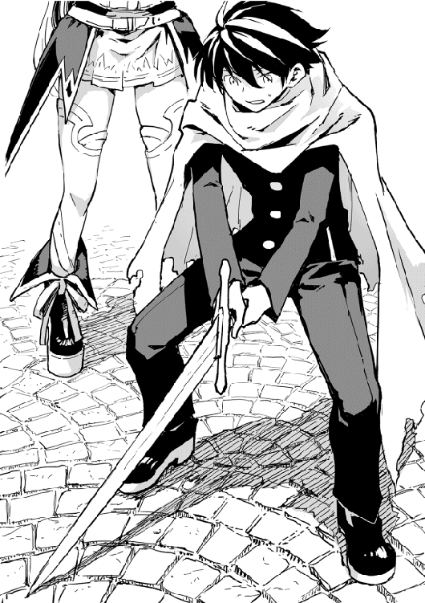
俺は少し考える。
「......。なあ、俺に剣術教えてくれないか？」
「え？」
俺が返した武器を受け取りながら、彼女は驚いた顔をした。
「え、でも私......人に教えられるようなものでは......。それにあまり強くありませんし、まだまだですし......」
「いや、あんたは充分強いだろ。山賊のとき見てるし」
レベルからしても、俺より強いし。
だが、エレノアは困ったような顔をする。
「うーん。ユートさんは、どの程度の剣術をお求めですか？」
「どの程度......」
「護身術程度とか、まともに戦えるまで、とか......」
「魔物と戦えるくらい......かな」
「それだと際限がありません。魔物は上には上がいますし......。残り六日間では......。ユートさんは剣術をされたことがあるんですか？」
「いや、まったく」
「そうですか」
エレノアはまた考え込む。
「恩人から武器をもらったんだ。だけど、扱い方を知らなきゃ宝の持ち腐れだろ？ なんとか一人で扱えるくらいまでなりたい」
「扱えるくらい......ですか」
エレノアは片手半剣を腰に下げた。
「わかりました。ユートさんの剣筋をみたいです。一度、打ちあってみませんか？」
「わかった」
俺は部屋から仕込み刀をもってくる。
「仕込み刀......ですか」
「ああ」
「とりあえず、構えてみてください」
俺は侍が刀を構えるようなイメージで刀を握って立つ。
「......。遠慮せず、かかってきて下さい。そのまま刃は私にむけて」
「......！」
俺は柄をぎりっと握る。人相手に刃をむけるのは、躊躇いがある。
「大丈夫です。絶対にあたりませんから」
エレノアはいつものような、優しげな表情をしていなかった。眼光鋭く、俺を観察している。
俺は意を決して刀を振りぬいた。
「はぁっ！」
だが俺の刀は軽く避けられ、いつの間にかエレノアは俺の後ろにいた。
「体に力を入れすぎです。そのままやってると、体力がもちませんよ」
エレノアはそのまますたすた歩いて一定の距離をとるとむきあい、今度は剣を抜いた。
「このまま、しばらく打ち合います。思うように刀を振るってください」
俺はまた、刀を構えた。そしてそのまま、何度も打ち合う。大抵はエレノアに受け流されて、俺は力に抗えず地面に転がった。
「いってー」
「大丈夫ですか？」
「ああ、このまま続けてくれ」
一瞬心配そうな顔をするが、俺が続ける意思を告げるとまた厳しい顔になった。
何度も何度も、刀を振っては躱され受け流され、転んで立ち上がる。そんなのを繰り返していた。
四十七回目の打ち合いだった。
俺がまた斬りかかりエレノアは俺の攻撃を受け流したが、俺は体を捻って軌道を変え、彼女の後ろに回り込むと刀を横に薙いだ。しかし、いつの間にかエレノアは目の前から消えていて、はっと後ろに刀をむける。後ろから斬りかかっていたエレノアの剣を受け止めるが、俺の手から刀が弾き飛んだ。
「くっ！」
俺は激しく呼吸しながら、地に膝をつく。
「今、私の気配を感じて動かれましたね。気配を探りました？」
「ああ」
エレノアが後ろに回ったのを察知できたのは、俺が索敵スキルを使ったからだ。
「ユートさんの剣筋はいいと思います。訓練すれば、比較的早く強くなれるでしょう。ですが......」
「はぁはぁぜぇ」
俺がこれだけ激しく息をしていても、エレノアは呼吸一つ乱れていない。
「ユートさんって、魔法は使えますか？」
「少しだけな」
ゲリールとアンダーテイカーだけだ。しかも一つは使用禁止令が出てる。
「じゃあ、これ使えます？」
エレノアは手を出すと、掌の上から炎が出る。ところがいきなり火力が上がった。
「あわわわわわわ！」
「おい！」
エレノアが慌てて魔法を解除した。
「前髪焦げてるぞ」
「え？ あう......」
エレノアは前髪に触れ、項垂れた。
「あんたさ、いっつも魔法使うとき魔力を消費しすぎなんじゃないか？ もっと少ない量でやれば失敗しないから」
「え？」
「ほら」
俺はエレノアの手を取り、彼女の中にある魔力の流れを感じる。それに同調し、掌に魔力を集めると、魔法術式を思い浮かべる。
「わあ！」
すると、エレノアの手から数センチ離れたところに小さな火の玉が浮いた。
「自分が制御できない量の魔力を術式に込めるから、いつも失敗すんだよ。いいか、この量ならうまく発動するんだ。この感覚を覚えろ」
「すごい......」
「は？」
エレノアの目に涙が浮かぶ。
「私......初めてまともに攻撃魔法が使えた！」
「はぁ？」
じゃあなぜ俺にそれを見せようとした？
エレノアは火の玉を消すと、もう一度火の玉を作る。
「小さき火よ、玉となりて敵を討て。ファイアーボール」
すると、また火の玉が浮かび、今度は小さなそれが手を離れてふわふわと漂う。
「すごいすごい！」
エレノアは子供のように手を叩いてはしゃいでいた。
「ユートさんは、魔法が得意なんですか!?」
「え？ 得意って言えるほど、魔法を知らないんだが。その魔法も初めて見たし」
「えぇ!?」
エレノアは俺の両手をぎゅっと握る。
さっきの真剣さはどこへ行った。
「すごいです！ ユートさんは天才です！ 私にこれほど早く魔法を習得させるなんて今まで誰もいませんでしたし！ 一度目にした魔法をすぐ使えるなんて！」
いや、なんか魔法を見ると、なんとなく使い方がわかるだけなんだが。
『それを天才っていうんじゃないの？』
なんだ、いたのか。
『いたよ』
なんとなく、拗ねた口調で言われた気がする。
「ユートさんは、魔法をメインに戦ったほうがいいのではないでしょうか」
「え？」
「さっきから思っていたんです。せっかくの仕込み刀なのに、それをメイン武器にするとそれを生かせませんし、生かすにしてもなかなかの技量が必要です。ですが、魔法をメインに使って、サブ武器として仕込み刀を使えば、たとえば相手が近づいたら仕込み刀で反撃すれば、効率がいいかと。そのほうが、仕込み刀という特性も生かせると思いますし！」
なるほど。
「そしてユートさんは、どうしても斬りかかるとき躊躇いがありますね」
「......」
「別にそれが問題になるとは限りません。相手を殺さない程度に痛めつける方法を学べばいいんです。たとえば、対人間戦では足を狙うとか。特に、カウンターを中心にして訓練すれば、実用的だと思いますよ」
エレノアはにこにこと語る。
「必要なのは観察です。どこが弱点なのか、どこを切れば相手の構えが崩れるか。それができれば、大きな力になります。それを頭の片隅にでも置いておいてください。私の師匠からの受け売りで申し訳ありませんが、必要最低限の訓練法を教えます。それを毎日こなせば基礎力がつきますし、あとは実戦あるのみです。残り六日間は私と打ち合いをしましょう！」
「わかった」
「では、さっそく続きいきましょうか」
「ああ」
俺とエレノアはまた武器を構えた。
何度打ち合ったかはもう覚えていない。
俺は体力の限界がきて、地面にぶっ倒れた。
すると、どこからか声がきこえる。
「たてー！ たつんだ、ユートにいちゃん！」
『どこの段平さん!?』
叫んだのは、人狼族の幼い子供。あの片足のないケビンだった。いつの間にかわらわらと子供達が見物に来ていたらしい。まあ騒いでるのはケビンくらいだが。
「燃え尽きたぜ......真っ白にな......」
『乗っちゃうんだ！ 事実だけど！』
あー、二度寝してーな。
「ふわぁあ」
俺はあくびをしながら自分の部屋にむかっていた。とりあえず、エレノアには礼を言ってあの場を離れた。明日は絶対筋肉痛だな。
と俺がため息をつくと、背後からバタバタと音がした。
「まってまって！」
「コケー！ コケコケっ！」
追い越したのはやきとりを追いかける狐耳の少女と、その少女から逃げるやきとりだった。少女は俺に気づき急停止する。
「コ、コケェ！ コケ......」
若干頭が禿げているやきとりは俺のほうに飛び込むと、さっと後ろに隠れた。よく見ると頭だけじゃない。
毟られたな。
『あーあ。頭頂部が寂しくなりだした中年のおじさん並みの哀愁が漂ってるんだけど』
やきとりは俺の後ろで少女を警戒しながらさめざめと泣いている。
人気者は辛いねぇ。
「あ......あぅ......」
一方狐耳の少女は、やきとりに触りたいが、俺には近づけないという葛藤が見え隠れしていた。まあ、人間である俺を警戒するのは当たり前だよな。昨日の今日だし。
「よ、おまえ昨日のケンカにいたよな？ 怪我は大丈夫か」
「......」
「まあ子供は怪我してなんぼって人もいるかもしれないが、ケンカはほどほどにな」
「......」
「んじゃあな」
「......っ！ ゆ、ユートおに......ちゃん？」
「ん？」
俺はびっくりして振り返る。そして少女はもじもじと小さい声で言った。
「けがは、だいじょうぶ。わたしきのうはけがしてなかった。ほかのみんなも、だいじょうぶ......だとおもう」
「そうか。そいつはよかった。でも完全に治るまではちゃんと治療してもらえ。俺とか、俺が嫌ならアウローラさんとか」
「は、はい......」
「あ、そうだ。ついでにちょっと聞いていいか？ お前名前は？」
「え？......サラ......です」
「そうか。じゃあサラ、今日は俺が昼飯作りたいんだが、食糧庫に案内してくれないか？」
「えっ？」
サラはパチパチと目を瞬く。俺はすっと立ち上がった。
「まずはアウローラさんに許可をもらうところからだよな。おいやきとり、いくぞ」
「コココココココケッ!?」
この教会にお世話になりっぱなしってのもよくないよな。緒方家ルールにも〝働かざる者食うべからず〟ってあるわけだし。
「あ、まって！」
俺がすたすたと歩きだすと、サラはトコトコついてくる。やきとりは彼女に捕まらないように俺の頭に乗っていた。
おい、鉤爪が食い込んで痛いんだが。
だが奴は俺の抗議の視線も無視してがっしり俺の頭にしがみついている。振り落とされるものか、という意思が伝わる。
どんだけ酷い目に遭ったんだ。
『まあ、羽だけじゃなくて鶏冠も千切られている様子から推して知るべし、だね』
「......」
アウローラさんに食糧庫と厨房使用の許可をもらった俺達は、サラの案内で食糧庫内にいた。サラはこの教会にいる中では健康そうで、ふさふさのしっぽをふわふわ揺らしながら歩いていた。ただしなぜかずっと俺の顔を穴が空くほど見つめている。なんだ、俺の顔になんかついてるか？
さて、この教会の敷地内の建物で一番大きいのは礼拝堂だ。
最初にここに来たときは雨が降っていたこともあって気づかなかったが、ここはけっこう規模のある施設群だ。霧の目の中は俺達が通ってきた森よりも木は少なく、林といった程度の木々に囲まれている。
礼拝堂にむかって右手側に宿舎があり、礼拝堂の後ろには中庭がある。この中庭には井戸があり、ここに洗濯物が干されたりする。宿舎を中心に、中庭の反対側には一応果樹園らしきものがあるが、ここはまだ製作途中であるらしい。
中庭を飛び越えて左手には畑があるが、ここもまだ製作途中。日々アウローラさんが子供達の世話をしながら、少しずつ環境を整えているそうだ。
そんな中で、食糧庫は礼拝堂と反対側の、中庭の奥にあった。
「うわー結構たくさんあるな」
「しさいさまは、なかなかおそとにでることができないから、いっぱいホゾンしてるっていってた」
「そうだろうな」
ただでさえ霧が晴れるのは月に一度で、しかもこれだけの子供達もいるなら食糧を調達するのも難しいだろう。
地下の食糧庫にはチーズや塩漬けにされた肉、酒、野菜、砂糖、卵などが保存されていた。そこからいくつか食糧を出して、次は地上の穀物倉庫にいく。
穀物倉庫は風通しを良くするために、床が地上から少し離して作られていた。
「懐かしいな」
「なつかしい？」
サラは首を傾げて俺を見上げた。そしてはっと口を押えて頭を下げる。
「ごめんなさい！ しつもんしてごめんなさい！」
そうやって必死に謝るサラに俺は驚いた。
「謝る必要なんてねーよ。基本的に疑問に思ったことは聞いていいんだ」
「で、でも......」
「ん？」
サラはぎゅっと目を瞑って体を小さくする。
「どうした？」
「まえに、この教会にくるまえに、おじさんにいろんなこときいちゃって......」
サラのつたない説明を拾ってみると、どうやらサラは他の獣人達よりも大事にされていたらしい。奴隷商のもとにいた時代のようで、ということは商品に傷をつけないようにそういう対応がされていたんだろう。愛玩用ということだったんだろうな。
そしてそのときちょっとしたことを聞いたらしい。移動する中で見た旗が気になって、それについて聞くと、奴隷商は『人間様に質問してるんじゃねえよ！ ちょっと大事にされてるからって俺達と対等だと思ってんのか？』というような内容を言われたらしい。そしてサラに傷をつけるわけにはいかないからサラの母親が代わりに鞭打たれ、酷い目にあったようだ。
俺はそれについては言及しなかった。どう言えばいいかわからなかったからな。その代わり、俺は目の前にある穀物倉庫に目をむけた。これは俺が歴史の授業で習った縄文時代の高床式倉庫に似ている。柱と床の間にある鼠返しは、教科書にあった写真そのままだ。元の世界との共通部分は、俺をとても懐かしくさせた。
『......』
「おにいちゃん？」
「昔、俺が行っていた学校の教科書でな、これと似たような倉が載ってたんだ。だから懐かしくなったんだよ」
「教科書？ おにいちゃん字がよめるの？ わたしはよめない......」
「少しだけな。だから、俺もサラとおんなじだ」
「わたしとおなじ？ おにいちゃんが？」
サラは瞬きを繰り返して、そして俺の袖をきゅっと掴んだ。サラの頭を撫で、俺は穀物倉庫に入る。中は大量の小麦粉、上から吊るされたハーブ、塩が保存されていた。
「お、米だ！」
「こめ......？」
米も保存されていた。この世界に来てから主食はパンしか食べていない。日本人の俺としては、そろそろ米が食べたいところだ。
醤油とか味噌とかあったら和食が作れるんだが、残念ながら未だそれらを目にしていない。
「米......か」
「こめ？ おにいちゃん、ラシーナ好きなの？」
「ああ、好きだよ」
「ふぅん」
この世界の米はラシーナと呼ばれている。だがこの米は日本で馴染みのあるあの米は違い、縦長のほうの米に似ている気がする。
「今日の昼飯はリゾットでも作るかな」
「りぞっと？」
「ああ」
リゾットなら消化もいいし、子供達にも食べやすい。ついでに米は茹でれば膨れるから、満足感もある。
「サラ、おまえも作ってみるか？」
「う、うん！」
サラはぱあっと目を輝かせて頷いた。
さて、今回のメニューはトメトと玉ネギのリゾット。そしてデザートにプリンだ。
かなり大きな鍋に野菜とポルッポの手羽先を入れて出汁をとる。これがいわゆるブイヨンだ。そこから卵を割り、いくつかは卵黄と卵白にわける。普通に割る分は、割り方を教えたサラの担当になった。
「あっ、カラ入っちゃった！」
「あー、はいはい」
俺は箸ですいっとボウルの中にある卵の殻を挟んで捨てる。
「それなぁに？ どうやってそれつかってるの？」
「え？ ああ、これは箸っていってな......」
目をキラキラさせる彼女にこちらの世界では見ないだろう箸について説明する。ちなみにこの箸、俺のお手製だ。木を削って作った。
『ほんっとさー、器用だよねぇ』
料理の作業に戻る。
分けた卵白を泡だて器で泡立てたあと、ブイヨンを材料と分けて漉す。面倒だが、残った材料を細かくしたり肉をほぐしたりして食べやすくし、リゾットの具にまわす。
できたブイヨンを再び鍋に戻し、沸騰させたあと卵白を混ぜ、浮き上がったそれを取り出す。こうすることで、スープの灰汁がとれ、あの琥珀色のスープができ上がる。
そのコンソメをベースにラシーナとトメトを入れ、煮立てる。
この一連の作業はかなり体力的にもきつかった。なにせ四十三人分の子供達と大人（？）四人分、さらに動物一匹と一羽分をまかなう量を鍋に入れたり出したりしなければならないからな。
プリンのほうは卵とホルスターミルク〔ホルスターという牛の魔物の乳〕と砂糖を混ぜればいいだけだし、サラに任せてみた。まあ、さすがに量が多いから俺も手伝ったけど。
台に乗って巨大なボールを小さな手で掴み、懸命に泡だて器で混ぜている。
あとは片っ端からそれを器に入れて、蒸すだけだ。
俺はそれを見て、ふと思いついた。プリンのカラメルソースを作るついでに、べっこう飴を作る。
「サラ、これ食べてみろ」
「え？」
俺が手渡したべっこう飴をサラは受け取る。この世界に爪楊枝があってよかったな。
サラはすんすんと飴のにおいを嗅いだ後、口に含んだ。
「おいしい」
サラの目がぱぁと明るくなり、頬が赤く膨れた。
「おいしい！」
「そうか」
まあ、砂糖を溶かして固めただけだけどな。
「手伝ってくれたから、俺とおまえだけの秘密な」
俺が人差し指を唇にあてて言うと、彼女はこくこくと頷く。
「ユートさん！ 私にもなにか手伝わせてください！」
「!?」
突如響いた声のもとを辿ると、厨房の入口に腕まくりをするエレノアが立っていた。
「おー、助かる。じゃ、野菜切ってくれ」
「はい！」
保存食用のピクルスを作る。
サラは慌てて調理台の陰に隠れ、飴を頬張った。秘密を守ろうとしているらしい。尻尾が隠れてなくて思わず笑ってしまう。嬉しそうにそれはぱたぱたと揺れていた。
エレノアはまな板の上の野菜を見ると、包丁を握った。そして、軽快なトントンという音が止まる。彼女は指を切った。
「あ......」
「おい！ 大丈夫か！」
「おねえちゃん！」
サラがエレノアの指に手をのばす。しかし、身長差のせいで届かない。
「......そうか。あんた、料理したことないよな」
よく考えれば、一国のお姫様が包丁を握ったことがあるとは考えにくい。その割には、綺麗に野菜は切れているが。とは言え、俺の配慮不足だ。
「とにかく、消毒を......」
軽く手当する。その様子を、サラは真剣な目で見つめていた。少し離れたところで。
「初めてなら初めてって言えよ」
「え？ あ、はい。すみません」
「いや、俺も悪いんだけど」
「......」
「......」
沈黙が流れる。
「刃物は......、自分のことも傷つけるんですよね」
「ん？ ああ、そうだな。だから、扱い方に気をつけるんだろ」
「......」
なんでこいつは急に黙り込むんだ！
近くを見ているのに、遠くを見ているような眼差し。そんなエレノアに、俺は内心首を傾げる。
「よし、手当終了」
「ありがとうございます」
彼女はにこりと笑い、サラはそれにほっとしたようだ。
「いいか、包丁を使うとき、切る対象を持つ手の形は猫の手だ」
「猫の手......ですか？」
俺は包丁を握り、左手を軽く握りこんでキャベツの上にのせる。
「こうすると、同じ幅で切りやすいし、左手を怪我しにくいんだよ。ちゃんとなにが危ないか、どうすれば危なくなくなるのか、考えた結果なんだろう」
そんな難しくするような話ではないな。と、自分で思うが、口から飛び出した言葉は戻らない。
「考える......」
エレノアはなぜか、サラの顔を見る。
「......。まあ、あんたは休んでろよ。あとは片付けるだけだしな」
「いえ、最後まで手伝います」
そして彼女は、何度か止めたが巨大な鍋を軽々と運ぶ。
エレノアは怪我をものともせず、俺なんかよりてきぱきと力仕事をこなした。
『優人君、落ち込まないで』
ちょっと、腹筋から始めてみるか......。
本日のリゾットの評判はおおむね良好。だが、プリンの人気ぶりがすごくて霞んでしまった感があった。やはり甘味受けはいいことが多いんだな。
特に、この世界ではプリンという食べ物はないらしい。だからこそあのなめらかな食感が新鮮だったようだ。
『まあ、僕は優人君の調理技術の高さにびっくりだけどね。プリンとか、茶わん蒸しと一緒でうまく蒸さないと鬆が入っちゃうのに。全然そんなことなかったんだもん』
俺は茶わん蒸しとか鬆とか知ってるあんたにびっくりだけどな。
『骨粗鬆症の鬆だよね！」
たとえが年寄りくさい！
『だって正直言って年齢で見たら、僕はお年寄り通り越してミイラの域だもん』
自分で言うのかよ！
アランの部屋の前につくと、扉をノックする。
「あ、どうぞー」
俺が中に入ると、アランはベッドの上で本を読んでいた。
「調子はどうだ？」
「ああ、もう調子よさそうだよ。熱も下がったし。お世話をかけました」
ふんわりと笑うアランの額に手をあてる。確かに熱はなさそうだ。
「そうか。よかったな」
アランは頷いて応えると、本をぱたんと閉じた。
「ねぇ、ユート。少し外に出たいんだけど、いいかな？」
「......いいんじゃないか？」
なんで俺にきく？ と思っていると、アランは苦笑した。
「まだ念のため安静にしておいてくださいって言われてたからね。熱は昨日の内に下がってたんだよ？」
「そうか。まあ、ずっと寝てたんじゃ逆に体に悪いだろ」
「そうだよね」
「......」
にこにこ笑っているのはいいんだが、なぜ俺の腕を掴む？
『それで、結局ついて行ってあげる......と』
......。
「......で、どこに向かってるんだ？」
「霧が発生してる境界までいきたいんだ。最近霧が広がっているっていうのが気になったんだけど......」
心なしかアランの顔が厳しい。
教会から霧の発生している場所までの林の中を二人で歩く。
「なにが気になるんだよ？」
「え、ええと......。ここの霧は魔力によって生まれたもののはずって、アウローラさんは言ってたよね。つまりここは霧の溜まり場でありながら、魔力の溜まり場なんだ。むしろ魔力が溜まっているから、霧が発生してると言ってもいい。この霧そのものが、水属性を帯びた魔力だろうからね。そしてその霧が広がっているということは、ここらへんの魔力の濃度が上がっているからかもしれない、と思って」
「魔力の濃度が上がるとまずいのか？」
「うん。まずいよ。濃度が上がると普通の動物は魔力に侵されて死んじゃうし、生き残ったらその動物は魔物になる。そして魔物は許容度を超えた魔力に侵されると、狂化する」
「つまり、狂暴化するってことか？」
「そう」
またしばらく無言になる。
「......学者なんだっけ？」
「うん。民俗学のね」
「ふーん。具体的になに研究してるんだ？」
「僕は......」
ちらりと俺を見る。
「なんだよ？」
「......。......僕はね、魔族について研究してるんだ」
「へぇ」
「僕は、魔族ももとは人間だったんじゃないかって仮説を検証する研究をしてるんだよ」
「ふーん。魔族ももとは人間......。じゃあ人間は人間と敵対関係なんだな」
「......」
「どうした？」
「君は変わった人間だね」
アランはびっくりしたように俺の顔を見る。
「なにがだ？」
「ふつう、魔族と人間が同じだときいて、そんなあっさりした反応が返ってくるなんてないから」
「え......」
『ここにも常識の壁が（笑）』
笑い事じゃねぇだろ！ なんだかっこ笑いって（怒）。
それにしてもこれはしゃーないよな。そもそも魔族なんて聞いたのは最近の話だし会ったこともないからな。
「ユートは今何歳？」
「え、十七だけど」
「そっかぁ。じゃああれは知らないよね」
十七歳かー、青春だよねー、とアランは笑う。
「今から三十年ぐらい前の話なんだけどね。当時の新聞に、魔族と人間はもともと同じ存在だったっていう記事が出たんだ。アノールド・セレンツィアっていう記者が書いたんだけど、しがない一記者の彼が、自費で出した地方新聞の一記事だったにもかかわらず、批判がすごくてね。エレンティーネ教は魔族を神の敵だとしているし、魔族は悪い奴だと小さいころから教えられるうえに恨みを持つ人は数え切れないほどいるから、その分反発が大きかった。あんな無慈悲な種族と同じだなんてとんでもない！ ってね」
「......」
「その仮説を立てた研究者は、周りの批判に耐えられず自殺。アノールドは記事に反発した一人に投げられた石の当たり所が悪くて、亡くなってしまった」
「......」
「僕はたまたまその記事を目にする機会があってね。幼心にその研究はすごくまともな考え方に思えた。記事にはね、魔力に侵された人間が魔族なんだって書かれてあったんだ」
「あっ！」
「うん。動物が魔力に侵され、魔力耐性を得ると、魔物になると今は研究でわかっている。でも、動物でそうなるのに、人間だけならないなんておかしいじゃないか」
そうか。魔力に侵され、魔力耐性を得た人間が、魔族なのか。
「根拠の理由として、魔物も魔族も目が赤い。魔族の場合は力を発揮したときだけ赤くなるんだけどね。だから、僕は旅をしながらそれを調べてまわってるんだけど、なかなか難しいね。そもそも魔族が禁忌の存在扱いだから、誰も教えてくれないし。魔族に会って話したいんだけど、それを行えるほど僕、強くないからなぁ」
あははと笑うアランを見て、俺は別のことが気になる。三十年前の記事を読めるこいつは何歳なんだ!?
『見た目二十代前半だよねー』
俺は久しぶりにステータスを表示させてみた。
------------------------------------------------------
《ステータス》
アラン・エリドオール・フォン・カエレンツェ（29歳）
ＨＰ ２０００／２０００
ＭＰ ５６０／６７０
ＴＡ １１１１／１１１１
ＬＶ 32
途中略
【魔法属性】 地
【称号】 公爵家次男・追究するもの・ふんわりさん・憎めないあいつ・マニア・さえないメガネ
【スキル】 聖語読解 ＬＶ１９８ 魔法陣読解 ＬＶ66 発掘 ＬＶ67 コミュ力 ＬＶ50 建造 ＬＶ33
【職業】 《貴族》《学者》《研究者》《魔法使い？》《建築家》
-------------------------------------------------------
年齢よりもとんでもないものが発覚してんだけど！
『わー公爵家次男（笑）カエレンツェ家ってどこの国だったかなー？ やば、思い出せない。僕もついに痴呆症かな......』
いや、そんなことより......。アランに体力で負けた！
『え、そこなの!?』
こんなにひょろひょろしてる奴なのに......。
『ここは、優人君の身長については触れちゃいけないんだよね......』
触れたら一生口きかねー、と思いつつ考えをまともなほうに戻す。
「......ねぇ、ユート。君は、その記事を書いた記者を愚かだと言うかい？」
「......」
「その記事を公表すれば、どんな結果が待っているかはある程度予想がついたはずなんだ。あそこまでの反発が起きるとは予想していなかったとしても、ね。まあ、予想がつかなかったのかもしれないけど」
俺は想像する。世界中から非難されるとわかっていることを、あえてするのかどうか。
「自分のことを考えるなら、それは愚かな行為だろう。だけど、その記者がどういう意図で公表したかがわからない。もしかしたら、批判されてでもそれは知らせなきゃいけないことだったかもしれないし、逆にそうじゃないかもしれない。どう思うかきかれても、情報不足だとしか答えられないんだが」
「ははは、そっか。......この世界のみんなが、そう考えられればよかったのにね」
「ん？」
「人は、自分の信じたいことしか信じないってことだよ」
そう言ったアランは、寂しそうな顔をしていた。
「あ、着いたね」
目の前には霧が漂っていた。霧はまるでそこに境界があるかのようにある一線でとまり、雲の壁のようにも見える。
アランはその霧に極限まで近づいてしげしげと見つめる。
「うーん。道具がないからなんとも言えないなぁ」
「濃度がか？」
「うん。まあ逆から言うと、道具を使わなくちゃわからないくらい、あんまり濃度は濃くないってことかもしれないけど......」
うーん、と彼は考え込む。
「......広がってるなら、濃度は変わらないんじゃないか？」
「そうか。拡散してるだけで、全体の魔力量は上がってるのかもしれないね」
それは今の僕じゃわからないなぁ、と彼は頭をかいた。
「でももし魔力濃度が上がっていても、魔力量が上がっていても、狂化が起こる可能性があるなぁ」
ひとしきり調べてまわったあと、俺達は教会に戻った。
「兄貴〜。もう三日も飲まず食わずですぜ〜」
「情けないこと言うんじゃねぇよ」
「でも〜。また暗くなってきたしよー、相変わらず周りは霧ばっかだし。食料は尽きちまったし」
三人の人影が、回帰の霧の中で蠢く。
「もう俺疲れたよー」
「歩き続けりゃいつか出られるさ。崖だけ気をつけろよ！」
「あ、晴れた！」
「兄貴！ あれ！」
いつ間にやら霧が晴れていた。そして子分の指差す先には教会らしき建物の上部が、木々の頭越しに見える。
三人は我先にと走り出した。
教会に近づくにつれて美味しそうなにおいが漂ってくる。三人の腹が同時にハモった。
すると視線の先に、子供たちが遊んでいる光景があった。
「おい、ちょっとまて」
そして彼らには、獣の耳がついている。
「あれは......」
兄貴はにやりと笑った。
俺達が教会に戻った時、中庭で子供達が集まっているのを見つけた。
「なにしてるんだ？」
「あっ！ おにいちゃん！」
サラが嬉しそうに立ち上がって、手を振る。近づいてみると、彼らは小さな白蛇を囲んでいた。
「しさいさまが、あそんでおいでっていったから、あそんでるの！」
「へぇ」
やきとりは少し離れたところに立つ木の枝にいた。あそこなら子供達の手も届かないしな。
月夜は......またあの図書室だろう。図書室であの本を見つけた日から、月夜はあの本の傍をはなれない。なんか因縁があるのかもしれねぇな。
なにで遊んでいるのかと覗き込むと、一匹の白蛇を囲んでいた。子供達は蛇をいじめているのかと思いきや、その白蛇の前には俺が作ったコンソメスープが盛られた皿が置いてあり、白蛇はそれを飲んでいる。
「白蛇ってめずらしいね。いったいどうしたの？」
アランが首を傾げると、ケビンが答える。
「このヘビ、おれたちがここにきたときからよく教会にあそびに来るんだ！ きょうはおなかがすいてるみたいだったから、ユートにいちゃんのごはんはおいしいし、このヘビにもあげようと思って！」
「うーん。ヘビにコンソメスープって大丈夫なのかな？」
「どちらにしろ、もう手遅れだけどな」
アランが苦笑する。
だが子供達は楽しそうにヘビがそれを飲むのを見守っている。
俺はなんとなく、ステータスを見てみることにした。
-----------------------------------------------------------
《ステータス》
ラビリントススネーク（好物コンソメスープ）
ＨＰ ３９６７０／３９６７０
ＭＰ １５００／１５００
ＬＶ 33
途中略
【魔法属性】 水
【職業】 《ラビリントスボス》
----------------------------------------------------------
「......」
ボスって職業なんかい!?
てゆーか、これ大丈夫なのか？ いや、大丈夫じゃねーだろ！
俺はぎょっとして蛇に視線をむける。蛇は夢中でスープを啜っていた。
「おいっ、そいつからはなれっ......」
「ねぇおにいちゃん！」
羊人族のメリーが俺の腕をきゅっと引っ張った。
「これで、わたしたちもリューグージョーにいけるかな？」
「は？」
「どうぶつとなかよくしたら、リューグージョーにおに......おに......オニタイジにいけるんでしょ？」
「いや、それなんか違う......」
「なあ、ユート！ またウエジマトトタローのお話してよ！」
「ぐほっ！......」
俺はさらに抱き着いてきた、というより突進してきたジョセフを受け止めた。ジョセフの抱き着く攻撃。それに耐えて頭を撫でながら、少し考える。そういや夜寝る前にそんな話をしてやったな。
「それは、浦島太郎か、桃太郎の話かどっちだ？」
「タローのほう！」
『もういろいろ混ざっててなにがなんだか......』
まったくだな。
「いや、そんなことよりも......」
「じゃあ、このヘビさんの名前タローね！」
「わー、いいね！ タロー、タロー、たくさんおたべ」
ど・う・し・て・そ・う・な・っ・た！
「あははー。いい名前だね。タロー」
アランもそれに混ざる。
蛇は蛇で、子供達に頭を撫でられると気持ち良さそうに目を細めた。
「......」
『なんか、大丈夫そう？』
結局蛇はなにもせず、スープを飲み終わると去って行った。
「おい、あの、アウローラが雨が降ったから風呂に入れますってつたえろって......」
「なんだって？」
蛇を見送った鳥人族のアレクは、むっすりとした顔で言った。だがそんなことよりも気になるのは......。
「風呂......風呂があるのか!?」
「え、うん」
俺はよし、と拳を握る。
俺は、俺はずっと風呂に入りたいと思っていたんだ！
川での水浴びに始まり、よくてお湯に浸した手拭いで体を拭くくらいしかできなかった約一か月。心は風呂を求めてやまなかったが、どこにもみられなくて我慢していた。それが、今報われようとしている。
俺に桃源郷が出待ちしている！
『あの......優人君？ キャラが迷走してるよ？』
「すぐ風呂にいこう！」
「え、おれも!?」
そして辿り着いた風呂！ アレクも引きずって子供達と風呂場にむかう。
ついにきた風呂！
桃源郷は、食糧庫から少し離れた奥にあった。そこは一戸建てのような建物で、子供達がその中に入っていく。
「ここが、風呂か」
「だね。僕もお風呂は久々だなー」
アランも嬉しそうに笑う。部屋に入ると、まずは脱衣所があった。既に子供達は思い思いに服を脱いで籠に放り込んでいる。
だが俺はそこで気になるものを見つけた。明らかに大人の女性の服が籠に入っていた。
「おい、おまえら、ちょっと待て！」
だが、子供達は構わず浴室の扉をあける。そして目に飛び込んできたのは、白い肌を晒して桶を握っている女性二人。
すなわち......。
「あわわわ、アウローラさん......」
「エレノア......」
彼女達二人も目を見開きながらこちらを見つめている。
「「き、きゃー！」」
二人の魔力に反応して水柱がたつ。
「「失礼しました！」」
俺達はびしょ濡れになりながら慌てて脱衣所から出た。
そしてバタンッと扉を閉めると、二人してずるずると崩れ落ちた。
すぐに水柱に隠されてしまったが、瞼の裏に残るのは、白く柔らかな肢体と驚いて紅潮していた頬。
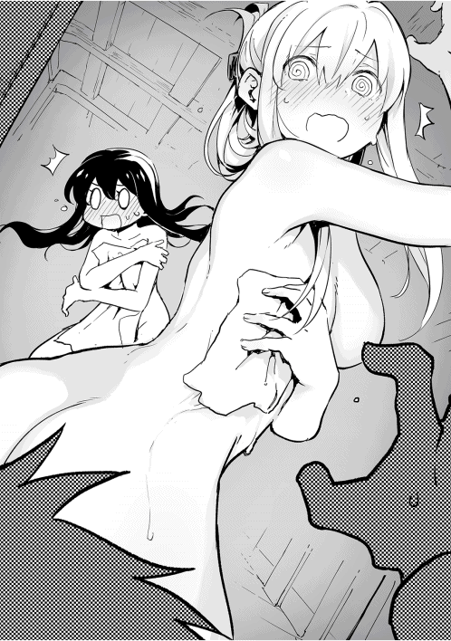
「やべ......」
「うん。謝ったら許してくれるかな？」
「「はぁ......」」
二人同時にため息をついた。
だけど......。
「意外と......着痩せするタイプなんだな」
『見るとこはちゃんと見てるんだね......』
とりあえず、風呂から上がったエレノアとアウローラさんは、顔を真っ赤に染めながら俺達とむきあっていた。
気まずい。非常に気まずい。
「すいませんでした。ちゃんと確認していれば......」
「こちらこそ......。お二人でお出かけになっている間に......と思って、なにも言わず先に入っていた私達が悪いんです。子供達にも、説明しておかなければなりませんでした」
「いや、俺ももっと早く気づいていれば......」
「とんでもないです！ お見苦しいものをお見せしてしまって......」
「それに、とにかく隠れなきゃ、と思ったら魔力が反応したとは言え、お二人をぬらしてしまって、すみませんでした」
「それは当然の心理ですし、お気になさらず」
相変わらずかかか、と湯気が立ち上りそうなほど赤面している二人に対して、俺達はとにかく頭を下げる。
「終わりが見えない」
「そ、そうですね！」
「これは事故でしたし......」
「私達も、お二人を濡らしてしまいましたし......」
「それでは、おあいこということで......」
『よくある平手打ちとかなかったね』
あんたはなにを期待してんだよ。
とりあえず、許しはもらえたのであらためて、俺達は風呂に入った。
「これは......」
俺は思わずがっくりと項垂れる。
そこにあったのは、俺が思い浮かべていた湯船の風呂ではなく、小さな湯船に水が入れられたかけ湯......いや、湯ではないのでかけ水だった。もはや行水だ。
だが、アランや子供達は気にせずどんどん、水を体にかけて体を洗っている。
と、そのとき、浴室をトコトコあるいていく一羽の鳥がいた。
「やきとり？」
そしてやきとりはぴょんっと小さな湯船に飛び込む。本鳥（ほんにん）は気持ちよさそうにそこでぷかぷか浮いていた。するとだんだんその水から湯気が上がり始める。
「これは......！」
「こけ〜」
指を入れてみると、それはちゃんとした湯だった。
「でかした、やきとり！」
水を体にぶっかけるよりずっといい！
ちょうどいい湯加減になったところで、俺も湯をかける。俺が望んだ風呂ではなかったが、久しぶりに気持ちよかった。
「うわー、あったか〜い」
子供達もぬくぬくとしている。いつもそうしているのか、子供達はお互いの頭を洗いあっていた。相変わらず人間と獣人はそれぞれ別々だが、あのケンカの様子を見るに、同じ風呂に入っていることだけでも進歩なんだろうか。住み分けができつつあるってことだからな。
「......やっぱり、こういうのがいいなぁ」
メガネを外して少し違和感を覚えるアランは、そんな彼らを微笑ましそうに見守る。
「よし、じゃあ頭洗ってやるよ」
「え!?」
俺が石鹸片手に言うと、アレクは一歩下がる。
「俺に触られるのは嫌か？」
「......。い、いやだ」
アレクはごくりと唾を飲み込み、目を瞑る。
「そっか。じゃあいつか、俺に洗わせてくれよな」
そう言うと、アレクははっと顔を上げた。
「おにいちゃん！ わたしがあたま、洗ってあげる！」
「お、マジか」
サラがこっちこっち、と輪の中に引っ張った。
俺が座って、サラが上から湯をバサーッとかける。そんな洗い合いが続いて、俺も人間に触れられることに怯えない獣人と、そして人間の子の頭を洗う。
だが難しい。獣人は耳や尻尾がついているため、そこの洗い加減が非常に難しい。けっこうデリケートな部分なんだな。
特に鳥人族の子供は背中に羽が生えている。言ってしまえば、天使のような姿だ。その羽を洗うのも、なかなか大変だった。とくに翼を触らせるのはなかなか抵抗があるようで、俺の方が無理をするなと言うほどだった。
そして俺はふと、小さな湯船を見た。やきとりが目を回してぷかーっと浮いていた。
「いや、なんでだよ！」
おまえ神鳥だろ！ 火の鳥だろ！ なんで火の鳥が熱に負けてんだよ！
自分で湯を温めていたくせに、のぼせたらしい。
俺は親指と人差し指で摘まんで、やきとりを引き上げた。ぐったりとしている。
「......茹でた鶏肉は、おろしポン酢だよな」
「こ〜け〜」
今夜の夕食は、和食になりそうだ。
『食べちゃダメだからね!?』
残念ながらポン酢がなかったので、やきとりは夕食になりそこなった。と、半分本気の冗談はともかく、俺は今日見たエレノアの姿を思い出す。
「なあ、エレノアの胸元にあったあの印みたいなのって......」
『僕は見てないけどね！ でも、それは聖女の証だよ』
俺は自室のベッドにすとん、と座る。
やきとりは外に体を冷やしに行っている。火の鳥の尊厳はどうした。
月夜はまたあの図書室だ。
「具体的にさ、聖女ってどうやって勇者を見極めてるわけ？ 聖が勇者じゃないって、エレノアは気づいたんだろ？」
『あれは、エレノアが気づいたっていうのは微妙だった気がするけどな......。それはともかく聖女ってさ、僕の専門外の分野なんだよね』
「は？」
『勇者に関しては、僕ほど詳しい存在はないよ。だって、一番初めに勇者を召喚したのは僕だから。まあ、現在はエネルレイア皇家に委託してる形なんだけど。でも聖女はね、僕が勇者を召喚したそのときから、いつの間にか生まれてたんだよね』
「じゃあ、聖女っていったいなんなんだ？」
『僕にもよくわからない。ただ、〝聖女〟って称号は、人間が勝手につけたものだよ。勇者が召喚されると、その旅路の中で必ず命がけで勇者に尽力する人間がいた。歴代のどの勇者においてもね。そしてその人間は必ず体のどこかに印を持ってたんだ。それが大抵女性だったから、信仰とかと結びついて印を持つ者は聖女と呼ばれるようになった』
「......」
『一番最初に召喚された勇者は、聖女に出会ったのは偶然で、最初はものすごく仲が悪かったんだよ。当時の聖女は女盗賊だったしね。勇者は身ぐるみ剥がされて、最悪な出会い方だった。だけど、なんの運命の悪戯か、何度も遭遇するんだよね。何度も何度も別れて行動したけど、なんやかんやでまた会ってしまう。その過程で二人は仲良くなっていったけど......』
「なんだよ、その典型的な話は！」
『事実なんだから仕方ないじゃない！ つまり、聖女が意図的に勇者に近づいたわけじゃないってことが言いたいわけ。そもそも勇者の存在をこの世界に広め、確立したのは彼が魔王を封印したからだからね。本人だって自分は勇者だって思って行動したわけじゃない。僕の主観だけど、歴代の勇者と聖女すべてが、もはやそれは必然とでもいうように出会った』
「......」
『まあ、歴代の〝聖女〟のなかには男性もいて、そのころはもう聖女って地位は確立してたから、男でありながら聖女って呼ばれていた可哀そうな人もいたけど、勇者との仲は最終的に良好だったよ。聖女という地位が確立してからは、事前に聖女が探し出されて勇者召喚に立ち会い、出会ったそのときからお互いの存在を知っているわけだから、見極める必要性はなかった』
「つーことは、エレノアは別の思惑があって城を飛び出したってことか？」
『どうだろ？ なにか感じるものがなかったとは、僕にはいいきれないし。ただ一つ言えることは、聖女は必ず勇者に会うことができるってこと。実際できてるしね』
「......」
俺は寝転んで、天井を見上げた。
わからんことはわからん。エレノアが、俺の正体に気づいているかもわからん。だが、性格的に気づいていないような気はする。
俺がそれらのことを考えていると、突然狼の鳴き声がきこえた。
「なんだ!?」
何度も何度も響く、緊迫した声。
俺はとび起きて傘を引っ掴むと、その声がするほう、礼拝堂に駆け付けた。扉を開けた瞬間、男達に捕らわれている子供達が目に入る。
「ユートにいちゃん！」
「ユート！」
礼拝堂には既にアウローラさんとエレノア、アラン、月夜とやきとりがいた。彼らも何人か子供達を庇っている。
山賊の近くにいながら幼い子供達を守っているのは、人狼族のケビンだった。その中には人間の子供もいる。ケビンの口はさっきと違って口元が狼のそれになっている。助けを呼んだのはあいつか！
「ミーナ！ カレン！」
山賊の手に捕らわれている子供達に、アウローラさんが悲鳴を上げた。
エレノアが隙を狙い、剣を抜こうとすると山賊の一人が子供達を離し、俺にむかって走ってくる。
「おーっと、そこから動くなよ。こいつがどうなってもいいのか!?」
山賊の兄貴は俺の首に湾曲刀を突きつけた。首に腕も回されがっしりと固定される。
「くっ」
「人質になってもらうぜ、坊主」
見上げると、髭を生やした顔。
「あんた、あのときの山賊か！」
「あんときゃ世話になったなぁ」
抜け出そうともがくが、びくともしない。
状況把握のため視線を走らせれば、山賊の残り二人が獣人の子供達に猿轡をかませロープで縛り、または抱えていた。
「てゆーか、なんで俺が人質なんだよ!?」
「お前が一番弱そうだったからな！ あと小さいから運びやすい」
「はぁ!?」
冷静に考えて、子供を捕まえていたんだからそのまま人質にすればよかったはずだ。まあ、子供達を離してもらえて結果オーライだがな！ つか小さい言うな！
『基本この世界の人間が君から感じ取れる実力って、通常ステータスのほうだからね。実際は強い君でも、みんなからは弱く見えるんだよ。小さいことについてはノーコメントで』
んなとこで弊害出してんじゃねぇよ！
不思議がる俺を見て、山賊がにへ、と笑う。
「なんだおまえ、獣人のこと言ってんのか？ あいつらが人質になる価値があるとでも？」
「は？」
この山賊の狙いは獣人の子供で、捕まえて売るつもりだったんじゃないのか？ なら、なんで人質の価値がない？
そのとき、アウローラさんが激情を抑えるように言った。
「このようなことをしてどうするつもりです？ この回帰の霧の溜まり場では、逃げることはできませんよ」
「だったら、ここでしばらく世話になるだけだぁ。まずはメシ、用意しな！」
冗談じゃねぇぞ！ んな人質として四六時中こんなむさい男といるなんて絶対嫌だ！ それだけじゃねぇ。
俺が月夜と視線を交わし、刀を抜こうとしてそのとき、山賊の手を噛んで逃げ出したサラが、兄貴に飛びついた。
「おにいちゃんを離して！」
「うるせぇ！」
「サラ！」
だが、サラは兄貴が払った腕で吹き飛ばされる。そしてそのまま湾曲刀を山賊は彼女に振り下ろそうとする。
「サラ！」
俺が叫び、アウローラさんが悲鳴を上げた次の瞬間、急に巨大化した蛇が現れ、山賊の兄貴の頭をぱっくりと飲み込んだ。
----------------------------------------------------------------
《ステータス》
ラビリントススネーク（尊敬するひと コンソメスープの作者）
ＨＰ ３９６７０／３９６７０
ＭＰ １５００／１５００
ＬＶ 33
途中略
【魔法属性】 水
【職業】 《ラビリントスボス》
---------------------------------------------------------------
「兄貴―!!」
山賊の子分一が蛇に切りかかるが、白蛇は尾を振ってなぎ倒す。そして白蛇はぺっと山賊の兄貴を吐き出した。
「ぜぇ、くっそう！」
兄貴は実は魔法剣だった湾曲刀で、火を放つ。それは白蛇にあたったが、白蛇は屁でもないように受け止めたかに見えた。そのあと白蛇の中で魔力が高まり、おそらく魔法を放とうとしたんだろう。
だが、蛇はゆっくりとのた打ち回り始める。
同時に気づくのは、足元から這い上がるような悪寒が体内に入ってくる感覚。
「ユート、気を付けて！ 魔力濃度が上がってる！ 狂化が、起こる！」
アランが叫んだ。
そして白蛇は、巨大化させた体をさらに巨大化させる。
「な、なんだ！」
「あ、あにきぃ！」
巨大化した白蛇は、礼拝堂の屋根を突き破った。天井から落ちる屋根や破片が、俺達に降り注ぐ。
そのとき、やきとりの体が炎に包まれた。そして真の姿に戻ったやきとりは翼を伸ばし、下にいた者達を瓦礫から守る。
「サンキュー、やきとり！」
白蛇は焦点の合わない瞳で山賊達を見る。
「ひぃ！ 俺を食べても美味しくないぞ！ そうだ！ こいつを代わりに食え！」
そう言って自分の前に押し出したのは、サラだった。
白蛇が目を細め、大口を開けて近づく。
「「「「タロー」」」」
サラが食われる。まさにその瞬間届いた声に、白蛇はぴたりと動きを止めた。声のもとは、獣人の子供達で、じっと白蛇を見つめている。
やがて白蛇は頭を激しく振り、苦しむように暴れ出した。
同時に月夜も黒豹になり、白蛇に助走をつけて噛みつき、それを礼拝堂の外に押し出す。
俺はそれを追って外に出ると、周囲から何千匹の蛇に囲まれていた。
「月夜！ ここはいい。縛れ！ 子供達を外に出すな！」
俺が命じると、月夜は礼拝堂内に戻る。山賊達に影縛りを使って動けないようにしていることだろう。あとで覚えてろよ。
そして子供達にこの光景を見せるわけにはいかない。あの白蛇を好いていたのに、これを見たらトラウマになりそうだ。
やきとりが俺の傍に降り立ち声を上げる。そして、苦しそうに体をくねらせる白蛇から俺を守っていた。
すると、ピロリン、と音がしてステータスが表示された。
--------------------------------------------------------
《ステータス》
ラビリントススネーク（狂化）
ＨＰ ３９６７０／３９６７０
ＭＰ ６７７３２６／１５００（魔力暴走）
ＬＶ 33
途中略
【魔法属性】 水
【職業】 《ラビリントスボス》
-----------------------------------------------------
徐々に近づく大量の蛇が、一斉に俺に襲いかかった。
『優人君！ 魔法使うなら気を付けて！ 魔力暴走が悪化するかもしれないから。そして、今は使用禁止解くから！ 使わないほうが危ない』
「了解」
神が焦っているのがわかる。それだけヤバい状況ってことだ。
「ユートさん！ 危ない！」
俺に飛びかかってきた蛇を切り捨てながら、エレノアは俺の隣に立った。
「サンキュー」
「はい！」
「時間稼ぎ、よろしく」
俺の言葉にエレノアは頷く。そして近づく小さな蛇達を切り捨てて行った。俺は慎重に自分の中の魔力を取りこぼさないように気をつけながら、前に月夜がやったことを思い出して、放つ。
「地の世界の住人よ。目の前の敵を屠れ！ アンダーテイカー！」
俺の前に地に泥沼ができ、そこから闇色の手が伸びる。無数の蛇はそこに引きずり込まれた。
しかし、小さな蛇に気をとられすぎていたんだろう。俺は、白蛇から放たれた巨大な水球にあたり、弾き飛ばされながらそれに取り込まれる。そして空中で一気に水に締め上げられた。
「ユートさん！」
エレノアが俺を見上げる。
やきとりが高い声で鳴く。怒りの声が、大地を震わせた。そして嘴の中から、今にも白蛇に配慮なしの炎を放とうとしている。
〝やめろ〟
俺は声なき声で叫んだ。
〝殺すな。それは子供達を守ろうとしただけだ！〟
だが口に入るのは空気ではなく水ばかり。水越しに彼らが見えるが、俺のために手加減なしで戦い始めている。
エレノアは蛇の尾を掻い潜り、尚且つ胴体をぶつ切りにするように真っ二つに切った。白蛇から緑色の血が吹き出す。
俺が視認できたのは、そこまでだった。
苦しい。酸素が欲しい。
目の前が暗くなっていった。
目の前にあるのは、森だった。
見上げると、女性が俺と手を結んで歩いていた。
いや、〝俺の〟じゃない。
俺の意思に反して、俺は口を開いた。
「お姉ちゃん」
びっくりした。口から出たのは、女の声だった。そうだ、今のこれは俺の体じゃない。
「なあに？」
お姉ちゃんと呼ばれた女性が、優しく見下ろしてきたのがわかった。だが、なぜか視界が眩しくて、その顔をしっかりと見ることはできない。
「今日はなにを採るの？」
「今日はねぇ、レンヤーの実と、ネルネル草、ハルカ苔よ。他にも見つかれば採るわ」
「どんなお薬になるの？」
「三つを合わせたら、媚薬。レンヤーの実とネルネル草なら気管支の炎症を治す薬。ネルネル草とハルカ苔で、吹き出物に効く薬ができるわ」
「ふーん。また、街の人達に売りに行くの？」
「そうよ。吹き出物の薬はよく売れるでしょうね」
女性はくすくすと笑った。
するとそのとき、目の前にアコーンテイルという、どんぐりの帽子を被ったような魔物が現れ、襲いかかってきた。しかし、女性が手をすっと振ると風が刃となってその魔物を切り裂く。
そう。姉は確か、無詠唱で魔法が使えた。
姉は倒れた魔物の傷に薬を塗ろうと手を出して、急に起き上がった魔物に手を噛まれた。
「お姉ちゃん！」
「狂化しているのね、可哀そうに」
そう言いながら、姉はアコーンテイルにとどめを刺した。
「アコーンテイルの尻尾もね、薬になるのよ」
そう言って淡々と魔物から素材を採集する。
「お姉ちゃん。この子、可哀そう」
「そうね。だけど、どうすることもできないのよ」
どうすることもできない。
狂化をすると、自我を失い、体の内側から膨れ上がる魔力に体を引き裂かれる苦痛を味わうことになる。だからこの言葉が、あのときの俺には重く響いて。だからこそ、魔物の狂化について研究した。もとに戻す理論をたてるとこるまでは辿り着いたけど、結局それを実行する術がなかった。
そんな意思が、俺の中に残った。
その理論は、今の俺なら使える。
なぜか、そう思った。
目を開けると、俺は相変わらず水に取り込まれていた。
どうやら気絶していたらしい。
水越しに確認すると礼拝堂だけではなく、かなりの建物が壊されていた。白蛇がなぎ倒したんだろう。
やきとりは何度も火を放つが、蛇はすぐに水を吐きだし消している。
だが、やきとりのほうが優勢のようだ。
エレノアのほうは、ぞろぞろと近づいてくる蛇達を薙ぎ払っていた。なんとか礼拝堂に入らないように防いでいる。
月夜が、俺の下に駆けてくるのが見えた。そして咥えているのは、あの月夜がいつも寄り添っていた魔導書。それを俺にむかって投げる。
俺が手を伸ばすと、その魔導書は水球を抜けて俺の目の前までやってきた。
手をかざすと、本が開く。
苦しい。苦しい。苦しい。水は、いらない。
俺の周りに魔力が溢れ出す。そして目を開ける。
苦しいなら、酸素を引き寄せればいい。水が邪魔なら、蒸発させてしまえばいい。
水球の中に、小さな火花がバチバチと無数に起こり始める。手持ち花火が火を噴きだすように、水のなかでそれはだんだん激しくなる。
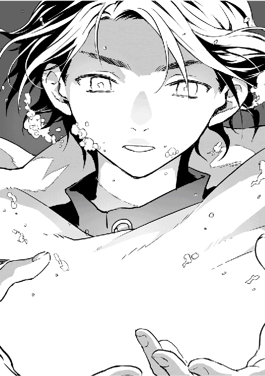
俺の体の周囲は、空気に包まれ始めた。火と風属性を帯びた魔力が、弾ける時を待っている。
「ふぅぷはっ！ ごほっ！ ぜぇぜぇ」
ようやくありつけた空気に、俺は思いっきり酸素を吸い込む。軽くむせたあと、目の前に浮いている魔導書に手を乗せた。なんとなく、こうしたら使えそうな気がした。パラパラとページがめくれ、とあるページでとまる。
そこに書かれてある魔法陣を頭に描き、唱える。
「風と共に燃え盛れ。フレアテンペスト！」
一気に蒸発した水は、高温の蒸気となって消え失せる。俺も蒸し焼きになりそうだったが、自分の周りを今度は水で覆うことで凌いだ。
〝第一封印解除〟
〝呪い発動します〟
急にそんな声が頭の中できこえた。
「よー、後輩！ ん？ なんだ俺を一番に見つけたのか！ 運がいいんだか悪いんだかだな！」
「は？ あんた誰だよ」
「俺はな、第十八代勇者やってたもんだ。あんまり時間がないんでな！ さっさと説明終わらせんぜ。魔王を倒すのは大変だ。だから勇者の遺物を探せ！ 以上だ！」
「はぁ!? ちゃんと説明しろよ！」
「あーん？ めんどくせぇな。いいか、よくきけよ！ 俺はお前の先輩勇者で、俺の仲間の魔導師に俺の力を込めた魔導書を作ってもらった。今お前がもってんのがそれだ。そんでそこに俺の意識も込めておいた。それが俺だ。以上！」
「もう一声！」
「ああ？ 仕方ねぇな。いいか、歴代の勇者は大体自分の力を込めたなにかを、後輩のために残している。それを集めろ。かなり力になるはずだ」
「俺は魔王を倒す力は欲してねぇよ？」
「マジか。そいつはすげぇな」
「だけど、元の世界に帰る方法を探してる。今ある魔法陣を使う以外で」
「はーん。そんならやっぱり勇者の遺物を探すことだな。今までの勇者の記録とかもわかる品があるかもしねぇ。勇者召喚に一番詳しいのは、やっぱ勇者だろ。ちなみに俺が見つけた勇者の遺物の場所なら、この本に書いてある。参考にしろ。じゃあな！」
「あ、ちょっと待て！ まだききたいことが！」
「そういや忘れてた。検索検索っと。ん？ お前、獏か。珍しいな。んじゃ、旅がんばれよ！」
「おい！」
頭の中の会話は一瞬だった。
なんだったんだ今のは。
とりあえず俺は頭を切り替え目の前の戦闘に集中する。
地に下りた俺は、だっと駆け出しながら刀を抜いた。襲いかかる小さな蛇をテキトウに切り捨て、白蛇に近づく。
「ユートさん！」
今ならわかる。この小さな蛇は実体がない。ただの魔力で形作られたものだ。だから、ただ切るだけでは意味がない。だが、切ったあとの瞬間だけは、蛇がただの魔力に戻る。その隙に、それを俺は取り込んだ。闇人間が俺の体に戻ったときの要領を思い出せ、俺！
「エレノア！ 回復魔法を使えるくらい、まだ魔力残ってるか！」
「え、は、はい！」
俺は刀を握り直すと、白蛇に一気に近づく。やきとりが白蛇の注意を引いてくれているおかげで、俺は気づかれない。
魔力を多く取り込みすぎて魔力暴走が起きることによって、狂化が起きる。ならば、その魔力を外に出してやればいい。
俺は近づきながら白蛇の魔力を吸収するが、手応えがない。吸い込んでも吸い込んでも、減らない。
なら、その原因がなにかある。
俺は刀の刃を返し、纏で大量に魔力を刃にまとわせる。そしてそのまま白蛇の腹を峰で叩き上げた。
ぐっ、ごぶっ！
白蛇はなにかを吐きだそうと、えずく。そしてぶはぁ、と吐きだしたのはそこそこ大きな宝箱だった。
ダンジョンとラビリントス名物。ボスを倒すと出てくる宝箱って奴か。
それを吐きだしたあと、白蛇は力を使い果たしたように倒れる。地響きが起きた。
---------------------------------------------
《ステータス》
ラビリントススネーク（瀕死）
ＨＰ ２３４／３９６７０
ＭＰ １５００／１５００
ＬＶ 33
途中略
【魔法属性】 水
【職業】 《ラビリントスボス》
---------------------------------------------
ステータスも戻っている。
俺は息をついた。すると、ピロリン、とステータスが表示される。
『レベルアップしました』
---------------------------------------------
《隠しステータス》
緒方優人 オガタユウト（呪）
ＨＰ 13／44
ＭＰ ３４５４０００／３４４９８０（危）
ＴＡ ３２８／３２８
ＬＶ 43
途中略
【剣技】 《纏》
【魔法】 アンダーテイカー（地闇／攻撃）
ゲリール（治／回復）
ファイヤーボール（火／攻撃）
フレアテンペスト（火風／攻撃）
【魔法属性】 地水火風光闇治 以降増可
【称号】 異世界の旅人・〔本当の〕勇者・捨てられた勇者・神に加護されし者・乞食になった勇者・勇者になった勇者・旅立つ勇者・ホラーメイカー・半沢勇者・料理人・ちんちくりん・魂の記憶の探索者・獏人・呪われし者
【スキル】 直感 ＬＶ10 逃げ足 ＬＶ８ 索敵 ＬＶ９ 鍛冶 ＬＶ３ 魔力吸収 ＬＶ測定不能
【職業】 《勇者》《魔法使い》《鍛冶師》《薬師》《ジェネラルコック》《治癒術師ヒーラー》
---------------------------------------------------------------------------------------------
「ユートさん！ 大丈夫ですか！」
エレノアが駆け寄ってくる。
「俺よりも、先に白蛇を！」
「はい！」
いつの間にか最初の小さいサイズに戻っていた白蛇の、エレノアが切った尾をくっつける作業をする。
どこぞに行っていた白蛇の尾は、月夜が探し出してきてくれた。
「「風の前の灯に、命の息吹を吹き込まん。リタブリスメン」」
俺は、余剰分の魔力も含めて消費し、回復魔法をエレノアと共に使う。すると、白蛇の胴と尾が繋がり、傷も癒えた。
「ふぅ......」
俺は息をつくと、くずおれた。全身の疲労感がハンパない。だが、俺にはまだやることがある。
俺は体を奮い立たせ、教会の中で月夜に縛られたままの山賊に近づくとその顔に、拳を叩き込んだ。
「ぐほぉ！」
「命を。こいつらの命をなんだと思ってる！」
呼吸が荒い。
「おにいちゃん！ 大丈夫？」
サラが俺に駆け寄ってくる。だが近づくにつれて、サラは驚いたように目を見開いた。
「おにいちゃんも、私達と同じだったの？」
「え？」
サラが俺の頭を指差す。俺も頭に手をやると、なぜかそこに突起物があった。それを引っ張ると、なぜか痛みを感じる。
サラが興味深そうに、それを触る。
「ユートさんに、耳が......」
エレノアも呆然と呟いた。
おい神！ 一体どういうことだよ！
『ただ今（仕事で）留守にしております。ピーっという発信音のあとに、メッセージをお願いします』
留守番電話かよ！
「..........................................」
いや、発信音ならねぇのかよ！
ふざけんじゃねぇぇぇぇぇぇぇぇぇぇぇぇ！
「んで、いろいろ話をきこうじゃねぇか」
俺は手の関節をバキボキ鳴らしながら、お互い抱きしめあっている山賊三人を見下ろした。残念ながら俺は今機嫌が悪い。
「なんでこの教会を襲った？ 目的は！」
「ひぃっ」
子供達には部屋に戻ってもらい、壊れた礼拝堂の中には俺、エレノア、アウローラさん、アランしかいない。
もちろんこの山賊の他に敵がいないとも限らねぇことはわかっているから、俺は索敵スキルを全開にしていた。これでなにかがこの敷地内に入ればすぐにわかる。
白蛇の暴走した余剰魔力を吸収した俺の魔力量は大幅に増え、索敵範囲も増えている。さらにスキルを全開にしているということは、索敵に使う魔力を全開にしているということであり、怒りで荒ぶる俺の魔力が放つ威圧感に、この場にいる者は押し潰されそうだった。
感じながらもそれに耐えている三人は、なかなか凄いとは思うが。
まあその重圧は目の前の主犯の三人にむけられたものだから屁でもないかもしれない。俺の怒りと敵意の矛先はこいつらだからな。
「ううぅぅ、がうっ！」
俺の傍にいた、未だに黒豹姿の月夜は威嚇する。
「わかった！ わかったよ、言うよ！ 三日前、俺達はただそいつを襲ったあと、あの女に気絶させられて、気づいたら周りは霧だらけだったんだよ！ んで出口を探して迷ってたらこの教会を見つけたんだ！」
「で、で、で！ そしたら兄貴が獣人の子供を見つけたんですよ！ 獣人は売れるから、捕まえようって話になって......」
「んなことはこの状況とあんたら見てたらわかるってんだよ！ あんたらの裏に誰かいるとかねぇのか!? あんたらだけの独断の行動なのかよ」
「ひいいぃぃ！ そうです！ 俺達だけです！ 思いつきの行動です！」
俺はまだよく知らんが、逃げ出した獣人を捕まえて再び売る専門の奴隷商もいるという話をアランからきいた。
「アランを襲ったのもあんたらの独断か？」
「そうです！ たまたまいいカモ見つけたとか思って襲っただけです！」
俺のアンダーテイカーで呼び出された闇人間達が、脅すように三人を取り囲む。つか、今回は月夜の力は借りてねぇのに、なんでいるんだよ。
「うわああああぁぁぁ！ 嘘言ってねぇってー」
「んで、アランはあのときなんで襲われたか心当たりはあるのか？」
「んー、ありすぎて、彼らが誰かに依頼されて僕を襲ったのか、普通に山賊ってお仕事を遂行しただけなのかわからないなぁ。でも僕のことまで気にしてくれてありがとう」
アランはふんわりと笑う。
なんで山賊に襲われるなんて事態になったのか、ちょっと気になったんできいてみた。まあ、わからないんじゃしょうがない。というか、そんなに狙われる心当たりが多いって、それも問題じゃね？
話を戻す。
泣き叫ぶ三人に、嘘はなさそうだと思う。
「んじゃ、こいつらどうする？ この場所がバレるのは問題ありだろ。簡単に逃がすわけにはいかないが、ずっとここに拘束しとくわけにもいかない」
「え、ええ......」
アウローラさんは困ったように視線を彷徨わせた。
「とは言え、放置するわけにもいかないよ」
アランが三人の傍に寄って、つんつんとつつく。
子供か！
「一応きいておこうか。あんたら、ここで見たことは一切他言しないと誓えるか？」
「「「誓います！」」」
-------------------------------------------
《ステータス》
山賊の兄貴（好きなアイドル セネカ）
ＨＰ ３６０／３８０
ＭＰ 32／40
ＬＶ 27
-------------------------------------------
山賊の子分２（好きなアイドル カメル）
ＨＰ ５２０／５２０
ＭＰ 26／26
ＬＶ 12
-----------------------------------------
山賊の子分３（好きなアイドル マリー）
ＨＰ ５４５／５５０
ＭＰ 55／66
ＬＶ 27
----------------------------------------
はーい、ステータス表示されました。こいつら俺に敵意あり。全部嘘だな。
「つか、あんたらの仲間、もう一人いたよな？ どこ行った？」
「知らねえ！......ですよ！ 気づいたら俺らしかいなかったから」
「ふーん。とりあえず、この礼拝堂を壊した罪は償わせねぇとな。それだけじゃねぇけど」
「それ俺達のせいじゃなくねっ......」
「ああ!? 間違いなくお前らのせいだろうが！」
半壊状態の礼拝堂には瓦礫がたくさん落ちていた。宿舎のほうはまだ破壊を免れたが、食糧庫も井戸も破壊された。
足元には色のついたガラスの破片が散らばっている。
「歴史的にも重要な建築物だったのに......あっ！」
歩き出したアランが瓦礫に躓きこける。するとアランの胸ポケットからはらりと数枚紙が飛び出した。
「そ......それは！」
「セネカちゃんの限定細密模写！」
よくよく見ると、飛び出した紙にはそれぞれ一人ずつ女性が描かれている。しかも写真並みの精密さをもった絵だ。
「ど、どうしてそれをあんたがもってるんだ！」
山賊の兄貴が今までの怯えはどこに行ったのか、という勢いで立ち上がった。
「それは歌手集団アイドルグループＡＫＰのステージ限定細密模写！ 実際に彼女らのコンサートに行った、全会員六千九百八十七人の親衛隊メンバーのうち、厳しいじゃんけんに勝ち抜いた、三人しかもっていないもの！」
まさかアランもアイドル親衛隊だったのか!?
その場にいた全員の視線が一斉にアランにむく。
「あ、えっと......。僕の友達がこの細密模写の描き手なんだ。それで、僕がよくお金掏られるから、金に困ったときはこの絵を売れって持たせてくれたものなんだけど......」
「「「な、なんだってぇぇぇぇぇ！」」」
礼拝堂内にむさい声が響く。
「あああああああんんた！ あの天才細密模写画家、ルイン・ヴェルクラムの友達ぃぃぃぃぃ!?」
おいおいおい、事態が変な方向に行ってんぞ！
「うん。わぁ、ルインのこと知ってるの？ 友達が有名ってなんだか誇らしいね」
「知ってるもなにも！ あの細密模写描かせたら右に出るものはいない！ まさに絵の中に本人がいるかのように、本人がもつ雰囲気や微妙な表情さえも写し取る、あの天才画家！ ＡＫＰ親衛隊の中にはさらにルインの親衛隊がいるほどの画家！ 彼女に犯罪者の似顔絵を描かせれば、二週間以内に犯人が捕まるという、あの！ あのルイン・ヴェルクラム!?」
おい！ 後半の話なんかおかしいぞ！
「あー、何回か描かされたって言ってたね。本人はものすごく嫌がってたけど」
アランはにこにこ笑う。
「あ、そうだ。君達この細密模写欲しい？」
「「「欲しいです！」」」
「じゃあ、もしこの場所のこと黙っていてくれたら、これからもずっとこの細密模写、ルインからもらったら君達にあげるよ。どう？」
「「「ぜひ！ お願いします！ 誰にも言いません！」」」
お辞儀の角度は九十度。息はぴったりと揃っている。
「あ、あのぉ、その細密模写、早く拾ってもいいですか？ セネカちゃんがずっと地面に放置されるなんて、なんだか忍びなくて......」
こいつら急に敬語になったぞ！
俺はすらりと刀を抜いて、地面に落ちた細密模写にむかって突き立てようとした。
だが俺の刀は細密模写に届く前に止められる。刀身を握って止めたのは、山賊の兄貴だった。
「セネカちゃんだけは、助けてください。刀なら、俺が受け止めます」
山賊の兄貴の手からは血が滴り落ちる。兄貴の顔は真剣だった。
「......」
俺は刀を地につきさし、そして拳に力を込めて、再び殴り飛ばした。目の前が真っ赤に染まった気がした。
「うっ！」
二撃目を加えようとしたところで、冷たい手が俺の手を包む。力を入れられてるわけじゃねぇのに、俺の手はとまった。
「一度振り上げてしまった手は、とめられないんじゃないですか？」
俺と同じ黒い瞳が、真っ赤に染まった世界で唯一他の色をもっていた。エレノアが静かに俺を見つめている。
「それで傷つくのは、ユートさん自身じゃないんですか？」
その言葉で、赤い世界は終わった。世界に色が戻ってくる。
「......」
一気に冷えた頭をそのまま山賊の頭にぶつける。
「いてっ!?」
「忘れるなよ。もしあんたらがなにかおかしなことしたら、その紙切れがどうなるかわからねぇからな」
細密模写に刀をむけてから納める。
俺は礼拝堂を出るために歩き出す。
あれほど大事にしているなら、充分取引の材料になるだろう。だけど......。
俺は礼拝堂を出た。
苛立ちは、収まらなかった。
「ツクヨちゃん......だったかな？ 君はユートについていたほうがいいんじゃないの？」
「がう」
アランの言葉に月夜は頷いたあと、ちらりと山賊達を見た。
「コケ」
それにやきとりが、こちらは任せろとばかりに応えると、月夜は頷いて、黒猫の姿に戻り礼拝堂を出る。
優人が去ったあとの礼拝堂では、未だに魔力による重圧が残っていた。
「アウローラさん、大丈夫ですか......？」
「......」
優人が去ったあとも全く動かない彼女に、エレノアが背をさすりながらきいた。
アウローラは無事だから動じなかったわけではない。あまりにも強い重圧にあてられて動けなかっただけだ。
アウローラは軽く首を横に振る。体が強張り、うまく動けないようだ。
「ツクヨちゃんが抑えていても、これだけの魔力が荒れてるから仕方ないですよ」
アランも真剣な顔でさっと周囲を見た。
優人がどのようにあの白蛇の狂化をとめたのかはわからない。だが、ある程度予想はできる。
そんな体質はきいたこともないし、方法もわからないが、彼は魔力を吸収した。
そして現状を見るに、その魔力は彼の中にある。魔力耐性を得た存在である魔物の白蛇が狂化するほどの魔力が彼の中にあるということは、非常に危険だ。
アランの研究が正しいとするならば、優人は魔族になってしまう可能性がある。
証拠に優人は自分の中の魔力を撒き散らしている。今はかろうじて制御してはいるが、それはなにかによって安定させられているからだ。そんなことができるのは精霊くらいであり、該当するのはあの黒猫くらいだった。あの鳥は神鳥だから、精霊ではない。
だからこそアランは月夜を優人のもとにいかせた。月夜がいなければ、この教会にいる人間にも悪影響が出る可能性がある。それだけでなく、今優人はかなり苛立っている。それに呼応して魔力も荒れているのだ。
現にアウローラに影響が出ている。
「アウローラさん。おへそに力を入れて深呼吸してください。吸ってー吐いてー」
エレノアの指示通り、アウローラは深呼吸をしようとするがうまくいかない。それでもエレノアはそれを続けるように言う。
そしてエレノアはアウローラの両手を前に出させると、それに自分の手を重ねてパチンと叩いた。
「はっ」
アウローラは一気に呼吸が楽になり、緊張を解く。
「ちゃんと呼吸ができますか？」
「はい......ありがとうございます」
アウローラはほっと息をついて座り込んだ。エレノアもその様子を見て安堵する。
「うぐおぉー」
「ぐはぁっ」
「あ、あにき？」
一方の山賊達のうち二人は、今更ながらに苦しんでいた。それを見たやきとりの目が三角になり、その二人に飛び蹴りをくらわせる。
「うおおぉぉぉ！」
「ぐはぁ！......あれ？」
一気に呼吸ができるようになった山賊二人は顔を見合わせる。
「あ。あにきぃ！ よかった！」
魔力にあてられなかった山賊が、涙をながす。すると彼は頭に衝撃を受けた。
「うぐぉ！ なんだ？」
振り返ってみると、闇人間ののっぺりとした顔がすぐそばにあった。
「うわわわぁぁぁぁぁっ！」
未だに消えていなかった闇人間達は、手に鞭をもって山賊達を引きずりだす。そしてぽいっと瓦礫のそばに連れて放り投げると、バチンっと鞭をふるった。
「「「え？」」」
山賊達を囲む者達以外の闇人間は、みな瓦礫を片付けたり、どこからもってきたのか、箒片手に掃除していた。
しかもそれらに指示を出しているのはやきとりだ。
「お、俺達もやれと？」
闇人間はあたりまえだろう！ というような感じで彼の頭をはたいた。
それらの光景からは目をそらし、アランは座り込んだアウローラに手を差し出す。
「大丈夫ですか？」
「あ、ありがとうございます」
そのとき、ふっと重圧が軽くなった。優人の苛立ちが落ち着いたのだろう。
「ユートさんは、大丈夫でしょうか？」
「今はそっとしておいたほうがいいかもしれませんよ」
迂闊に今感情を荒立てると、彼の抱える魔力がどうなるかわからない。それに、アランは彼に関しては、自分やアウローラが触れるべきことではないように、感じていた。
「でも......」
「ユートの体が変化したことが気になっているんですか？」
「はい......」
アランは地面に置かれた本に目をやる。
「すべては、明日にしませんか？」
エレノアは上を見上げて言った。穴のあいた天井からは月が見える。
「......そう、ですね。子供達が気になります。早くいかなければ......」
「こ、こけぇ......」
三人はその声の主を見た。
はたはたと涙を流すやきとりの視線の先には、無残にも壊れ破れた神鳥の絵画があった。
三人は、視線を逸らした。
俺は腹の中のマグマを必死で宥めながら、宿舎の、子供達の部屋へむかった。いつもは二階に四人一部屋で過ごしているが、今は固まって一階の広間にいる。
広間の扉を開けると、子供達がびくっと震えたのが見えた。
「ユート......にいちゃん」
ジョセフがほっと安堵の息をついた。
「大丈夫だったか？ 怪我はしてないか？」
子供達は頷く。
全員が広間に集まって、毛布に包まっていたり、傷ついた白蛇や揺り籠の中で眠る赤ん坊の様子を見ていたりしていた。
白蛇は今はすやすやと眠っている。
俺はサラのそばにいるケビンを見た。ケビンの顔は無表情だった。
俺は彼に近づき、頭をくしゃくしゃと撫でる。
「よくみんなを守ったな。かっこよかったぞ」
「......」
ケビンの目に涙が溜まる。
「みんなねてたから、おれだけが気づいたから、ローラ姉ちゃんにつたえにいかなきゃとおもったけど、そのまえにあいつらがきたんだ」
「うん」
「そしたらねてるミーナたちをか、か、カツギアゲテ、外にでていこうとしたから......」
「抵抗したんだな」
「うん。そしたら、みんなを袋に入れようとしたから、おれが袋をかみやぶったらたたかれて......」
「うん」
「......母さんが、妹はまもらなきゃいけないって言ったんだ」
「そうか」
「おれはみんなよりとしうえだから、ここにいるみんなは家族だからぁ、おれがまもらなきゃっておもったんだぁ......」
「うん」
「でもぉ、おれこわくて......ほえることしかできなくて......」
「だけとか言うな。がんばったな。おかげでみんな無事だ。おまえのおかげで俺達もすぐ駆けつけられただろ？」
ケビンは俺に額を押し付ける。彼の体は震えていた。
まだ六歳の子供が、大の大人三人に立ち向かったんだ。
助けられたとは言え母親と引き離されて......。この教会にケビンの妹はいないから、その妹も行方不明か、まだ母親の傍にいるのか......。いずれにしろ血の繋がりがなくて不安だったろう。だが、ここにいる者達が家族だから、と戦ったんだ。
おまえは俺なんかよりもよっぽど......。
「おまえは勇者だよ。ケビン」
「え？」
ケビンが顔を上げる。
「ゆうしゃって、このゆうしゃ？」
ミーナが絵本をもってくる。〝勇者物語〟と書かれたそれは、何代目の勇者かは知らないが、昔あった世界を救う物語だ。
「いやいや、ケビンのほうがもっと立派な勇者だよ」
「ほんと？」
「ああ。だって勇者は、みんなを助ける存在なんだろ？」
少なくとも、目の前にいる奴よりも、な、
ケビンは顔を輝かせる。
「うん！」
すると、離れてもじもじしていた人間の子供、名前はクリスだったか。クリスが立ち上がって、言った。
「たすけてくれて、ありがとう」
「っ！」
ケビンは息をのんで、でもその言葉を咀嚼したあと頷いて笑った。
自分の部屋に戻った俺は、ランプをつけるとベッドの上で蹲った。
再び怒りが体の中で燻る。
細密模写如きと子供達の命の価値の重さを比べると、細密模写のほうが重いってあいつらは言ってるわけだ。
ふざけんな！
あのときエレノアが止めてくれなければ、俺はきっと殴り続けていた。あのまま怒りに任せて暴力を振るえば〝あいつ〟と同じだ。〝あいつ〟と同じ人間にだけはなりたくない。
あのまま続けて傷つくのは俺だと、エレノアの言うとおりだった。
手を強く強く握りしめて、激情を耐える。
「人間......か」
果たして、動物の耳と尻尾をもってしまった今の自分は、人間と言えるのだろうか。
いや、それは気にするべきことではない。
自分の体が変わってしまったことも、俺は受け入れなくちゃいけない。取り乱しちゃいけない。今騒いだって嘆いたって、事態は変わらねぇんだから。
俺は必死に眠ろうと努めた。深く眠って明日起きれば、頭もすっきりするだろう。
はっと気づいた時には、目の前に一人の男がいた。俺は倒れていて、下の感触は畳だ。
ああ、これは夢だ。
頬が痛い。体が痛い。目の前の男によって殴られたからだ。何度も、何度も。
覚えている。俺は殴られているとき、お前じゃない、と考えていた。すると、殴る人物が変わる。女性になった。
俺はほっとした。そう。どうせ殴られるならこの人がいい。だって殴るときが、いつも俺を見ないこの人が唯一、俺のことを見てくれるときだったから。
無視されるよりも、殴られたほうがいい。
そう。これは過去の記憶だ。怒りに任せて殴られ続けた記憶。あの場所から救い出してもらってからも、夢として何度も何度も見た俺の記憶だ。
痛かった。ずっとごめんなさいと謝っていた。過去の感情と寄り添いながら、これは夢だと自覚している自分の現在の意識は、起きたときまた最悪な目覚めをしなきゃいけないのか、と諦めていた。
するとそのとき、歌がきこえた。どこからきこえるのかわからない。ただその歌は、子守唄だと思った。日本語ではない歌だ。澄んだその声は柔らかく、なぜか温かくて、ふかふかの布団に包まれるような感じがした。
周りを見れば、〝あいつ〟も、あの人もいなかった。部屋が変わり、俺は川の字で寝ていた。両側には、現代には珍しく、浴衣を着て寝ている男女がいた。
俺がよく見知った人だった。もう頬も、体も痛くなかった。
滞在七日目。
俺はぱちりと目を覚ました。窓の外は少し明るく、日の出前のようだ。
胸糞悪い夢と、心地いい夢を両方見ていた気がする。どんな夢だったか覚えてないが。
俺は軽く身支度を整える。そして再びベッドに腰掛けた。
『優人君、おはよう！』
俺は目の前に出たウィンドウ画面に目を丸くした。そして半眼になる。
「おい、今までどうしてた、あんた？」
『ごめんごめん。僕のほうもいろいろあって......ごほっけほっ』
「ん？」
『......それよりもけほっ、大変だったねごほっ。呪われたり、とか山賊のこととかぐはっ』
「おい、大丈夫か!? 今血吐くような表記じゃなかったか？」
『大丈夫大丈夫。ちょっと体調悪いだけだから。たぶん......うぉほっげほっげほっ』
「どう見てもちょっとじゃねぇだろ！ なんだ、風邪か？」
『やだな。神が風邪ひくわけないじゃない。ちょっと熱っぽくて、鼻水と咳がとまらないだけだよ』
「風邪じゃねえか！ もしくはインフルエンザかノロウィルス！ 手洗いうがいは徹底しろよ！ ノロはアルコール消毒でも死なねぇんだからな！」
『えーこほっ。別に僕外に出たとかこほっ、ないし。パン作っているわけでもないし。どちらかと言うと朝食はごはん派だし』
「なんの話だよ！ とりあえず、わきの下冷やせ。寝ろ！」
『大丈夫。今横にはなってるから。それよりも、昨夜は随分魔力が荒れてたよ。一度落ち着いたけど、夜中にまた荒れ始めたから心配した』
「......なんか、夢を見た気がするんだ。胸糞悪い夢な」
『なるほどねぇ。魔力は精神状態に多分に影響されるから、きちんと制御しておかないとね。自分の心が周囲に筒抜けってことでもあるし、気を付けたほうがいいよ。特に君は。ごほごほっ』
「......おいおい」
魔力が荒れたのか。
くしゃっと髪をなでると、いつもより高い位置の耳に軽く触れる。
『まあ、荒れたのは君の精神状態の問題だけが理由けほっじゃないよ。自分の中の魔力を育てるんじゃなく、いきなり吸収したから、体と精神に負荷がかかったんだよ』
「ああ、あれか」
狂化した白蛇を元に戻すために、あいつの中にあった魔力を吸収した。
『普通ならまだ荒れてても仕方ないけど、馴染むのが早かったね。なにかあったのかな？』
「さあ、なんだろうな？ 歌を......きいた気がするんだが」
『歌......ね。まあいいや。それと、早く扉の前にいる一人と一匹を部屋に戻してあげなよ。ちょっと気の毒』
「は？」
俺はドアを開けた。するとそこには、毛布に包まり座りながら眠るエレノアと、エレノアの膝で眠る月夜がいた。
『魔力が荒れるくらい不安定な君を心配して、ずっとここにいたんだよ』
「起こせばよかったのに......」
こんな体勢で寝てると、絶対体が痛くなるぞ。まあそうなれば、俺のせいでもあるのか。
「......魔力が荒れないようにするにはどうしたらいい？」
『ひたすら修行だね。けほっ』
「そうか」
俺はエレノアの肩をとんっと叩いた。
「おい、寝るなら自分の部屋で寝ろ」
「う、う〜ん」
エレノアの黒い瞳が少し開かれる。
「ふにゅ。ユートさん？......大丈夫ですか？」
「ああ。心配かけたな」
エレノアは寝ぼけた目で俺の顔をぺたぺた触ると、嬉しそうに笑った。
「よかった......」
するとエレノアは腕を伸ばし、俺の頭を抱えこんだ。すなわち。
「おい！」
俺は抱きしめられていた。甘い香りが鼻をくすぐる。その体は柔らかく、温かい。
ふと下を見ると、目を覚ました月夜がにやにやと笑っていた。
「おい、離せ！」
「く〜」
俺は目が点になる。
エレノアは再び眠りの世界にいた。
俺はエレノアをなんとか、彼女に与えられた部屋に連れて行ったあと、崩れた礼拝堂に向かった。瓦礫は脇に寄せられ、床は箒で掃かれて、細かい瓦礫や砂もなくなっていた。
天井は徐々に明るくなる朝空が見える。
破壊された壁を通り抜け中庭にでると、井戸や食糧庫も破壊されていた。
そして礼拝堂のまだ残っている壁際に、山賊の三人が固まって眠り、そしてその傍にぽつんと一人の闇人間が立っていた。
「監視していてくれたのか」
俺が声をかけると、闇人間は頷く。そのとき、朝陽が射しはじめた。それとともに、もともと薄かった闇人間の体も薄まっていく。
闇は光によって薄まるものだから、道理だろう。
「ご苦労だったな」
そう言うと、闇人間は完全に消えた。
「コケコッコ〜！」
瓦礫の上に立つやきとりが、朝射す光を身に受けて、金の羽を輝かせながら朝を告げた。
「おまえもずっと起きてたのか、やきとり？」
「コケッ」
「そうか。サンキューな」
俺は山賊達のほうを見る。未だに彼らは眠りこけている。
「おい、起きろ」
俺は彼らの尻を蹴とばした。
「うっうーん」
「なんだぁ？」
「母ちゃんあと五分」
誰が母ちゃんだ！ そして足を掴むなすり寄るな離せ！
「あんた達は寝てる暇なんてねぇぞ！ さっさと起きろ今すぐ起きろ。十秒で仕度しろ。そして働け」
「「「えぇ!?」」」
まだ頭が起きていない山賊達に、とりあえず今できる椅子の修理などを指示しつつ、礼拝堂の中を見て回った。
『派手に壊れたねぇ』
そうだな。
「ユートさーん！」
エレノアが駆け寄ってくる。
「なんだ。もう起きたのか？」
「は、はい。それで、アウローラさんが朝食にしましょう、と。そしてそのあと、あの宝箱を開けようというお話です」
「ああ、あれか。わかった」
「そ、それで、あの......今朝は、その......」
そこまで言ったエレノアはそこでボンっと顔を赤くした。
「す、すみませんでした......」
「気にするな。寝惚けてたんだしな」
「そ、そうなんですけど......。ほんとに、すみませんでした」
声がだんだんと小さくなって俯く。俺は少し考え、軽くデコピンした。
「いたっ」
そんな痛くしたつもりはねぇけど、こういうとき自然に「いたっ」て言っちまうよな。
「お仕置き」
俺はにやりと笑う。彼女は額を押さえたまま、頷いた。まだ顔赤いけど、大丈夫か？
「今日の朝食はどうしたんだ？」
「えっと、アウローラさんが作ったそうです。食糧庫のほうが一部ですが破壊されていて、まだ食べられるものと食べられないものとで選別ができてないみたいですが......」
「わかった。それはあとでだな。とりあえず食堂にいくか」
朝食をとったあと、俺とエレノアとアウローラさん、そしてアランはあの宝箱を広間に運び、顔を寄せ合っていた。ちなみに山賊達は朝食抜きだ。当然だ。
「危険なもの......が入っていたりしないでしょうか？」
「どうなんでしょうか。中からいきなりバネとか飛び出したりして......」
「それはただのびっくり箱だろうが」
「そうだったらおもしろいね〜」
「でも、もし害あるものだったら......」
「冒険者ならみんな開けるものだから、まあ大丈夫じゃないかな？」
「じゃあ、開けるか」
「その箱自体が魔物だったりするときもあるってきいたけど......」
「......開けちゃったんですが？」
「そういうことはもっと早く言え！」
エレノアはあっさりと、机の上の宝箱を開ける。すると中には、ダイヤモンドのような形の透明な石と、一枚の巻紙が入っていた。
「これは......？」
「魔石......かな」
アランが透明な石を手に取る。
「しかも、これ中身が空だね。魔力が入ってたら、色がついているはずだし」
アランの言葉から推測すると。魔石ってのは、魔力が込められた石のことらしい。
「これだけの量があれば、売ればそれなりの価値があったでしょうね」
「でも、今は空ですから、この石は使えませんね」
アウローラさんがため息をつく。
「この巻紙はなんでしょう？」
エレノアの手には、古びた巻紙があった。紐でくくられている。
「広げてみろよ」
「はい」
広げると、それは白紙だった。
「なにも書かれていない？」
「ただの紙なのか？」
エレノアが紙面を撫でると、なにかが浮き出てくる。
「これは......地図みたい」
「地図？」
紙面の右下あたりに島のように線が浮き出た。
「これは、この教会周辺ですね。回帰の霧の溜まり場の地図です」
「全体の大きさの割合を見ると、世界地図みたいな感じだけど......」
「この教会周辺しか書かれていませんね」
周囲の森が緑色で描かれ、この教会は赤い点で示されているみたいだ。
「貴重なものなのか？」
「今のところなんとも言えないなぁ」
アランが目をキラキラさせながら地図を見る。
「宝の地図とか？」
エレノアがぱんっと手を打った。
「ならこんなちんまい書き方しないだろ」
「そうですよね......」
彼女は項垂れる。
俺達は再び、顔を寄せ合って頭を悩ませる。
「それで、あのー、ユートさんのそのお姿は、いったいどうされたんでしょうか？」
「ああ、これな」
アウローラさんが恐る恐るきく。
「拾っておいたけど、これが原因？」
「あ、そうそう。その魔導書使ったらなんか呪われた」
「呪い!?」
アランが机の上に出したのは、あの勇者の遺物の一つ、魔導書だった。
「え、ユートさん大丈夫なんですか？」
「いまのところはな」
エレノアの視線が俺の耳に移動する。
「まあ、違和感はあるが」
考えてもみろ。耳が頭の上にあるんだぞ！ つまりはいつもあった顔の横の耳は消えたってことだ。気持ち悪いだろ!?
『それ、考えたことなかったなぁ......。髪で隠せてよかったね』
髪で隠せなかったら俺ひきこもる。自宅警備員になる。
『自宅ないじゃん......』
「ご、ごごごごごめんなさいぃぃぃぃ！」
アウローラさんは勢いよく頭を下げた。
おい、今机がゴンッて鳴ったぞ。
「そんな危険なものを、客人がすぐ手に取れるような場所に置いておくなど、なんたる失態！ 申し訳ございません！」
「とりあえず落ち着け。アウローラさんはこの本が呪いの本って知っていたのか？」
「いえ、存じ上げませんでした。ですが、それはこの教会の司祭としての責務を果たせていなかったということです。これは死んでお詫びを......」
「まてまてまて！ 早まるな！ 知らなかったなら仕方ないだろ！」
「そうですよ！」
「それに、この本もって来たの、俺の従魔の月夜だしな」
「そう言えば......」
アウローラさんが少し落ち着くと、アランが魔導書を手に取る。ときどきこの人暴走するんだな。
「この本、なんなんだろうね？」
アウローラさんは知っていることを説明する。
「この教会の図書室に置かれた本は全ていつ頃の年代に書かれたかなどの記録が存在するのですが、この魔導書に関しては記録がないんです」
「記録に残ってないほど昔にあったのか、最近書かれたのか......どちらかかな」
「昔に書かれたものだと思います。この教会自体がとても古いものですし、建てられた当初からこの本があったと思われます。私もこの教会に赴任したのは四か月前なので、詳しいことはわかりませんが、最近書かれたものであれば私が把握していないはずはありません」
「でもこの本、なぜか紙が黄ばんでないし、表紙も新品に近いほど綺麗なんですよ。状態保存の魔法がかけられてる様子もないし」
俺は上から下へ本を観察する。パラパラと内容を見るが、違和感はない。
ん？ 違和感がない？
魔導書は最初から最後までなにかが書かれているように見えた。だが俺が最初にこれを見たとき、確か後半は白紙じゃなかったか？
「専門家じゃないから迂闊なことは言えないけど、僕が見るかぎり呪いを発動するような魔法陣とか、魔法とかは書かれてないと思うな」
「そうか」
「ただ、ここに書かれている魔法、一つ一つはそんなに珍しい魔法じゃないんだけど、なんか共通点がある気がする。なんだろう？」
「共通点......ですか？」
アウローラさんが首を傾げる。
「うーん、なにか引っかかるんです」
「......」
「そもそも、どうしてユートはそれが呪いってわかったの？」
アランが問う。
さて、どの程度まで話すべきか。
「声がきこえたんだ。その魔導書の力を借りたときにな。それで、気づいたらこの姿になってた。呪いの可能性が高いかと思ってそう言っただけだ」
ほんとはステータスに書かれていたんだが、話さない。説明自体も面倒だし、俺がそれを見える証拠もない。
「力を借りる......か。その時点でこの魔導書がただの魔法について書かれたものじゃないのは明白だね。それを考えると確かに、姿が変わるっていうのは魔法によるものだろうし、呪いって言ってもいいかもね」
「......」
「ユートさんは、獣人になってしまったんでしょうか？」
「どうなんだろうな？」
エレノアに視線をむけられて、俺の耳がぴくぴく動く。
「ちょっと触るよ」
アランが耳を触る。
「っ！」
「あ、ごめんね。痛覚はあるみたいだね」
「......ああ」
「この耳、バク？」
「バク......ですか？」
「うん。バク人なんて獣人は見たことないけど、たぶん。普通のバクならいるんだけどね」
「いるのか!?」
俺は身を乗り出す。
「いるよ。魔力を食べる珍しい種として、生物学会では注目の的みたい。数が少ないし、生息地もよくわかってないから研究はあんまり進んでないけどね」
「魔力を、食べる......」
俺の魔力吸収は、そういうことなのか？
「「「「......」」」」
再び考え込む時間が訪れる。
「俺のことはあとでいい。今のとこ別に命に関わるようなことじゃなさそうだしな。それよりも、この教会どうするんだ？」
「それなんだけど、僕もいろいろ考えてみたんだ。あと四日、実質三日でユートとエレノアさんはこの教会を出発するわけだから、人手が必要なことを先にやったほうがいいと思うんだ」
「確かにな」
一度俺の霧からの脱出を見送れば、再び一か月身動きの取れない状態になる。それはあんまり喜ばしいことじゃねぇ。
「最優先は水の確保」
「......そう言えば、朝食はスープだったし、水も出てたけど、確か井戸は壊れて使えないんじゃなかったか。水はどこから？」
「ああ、それは......」
アウローラさんが視線を落とすと、ひょこっと白蛇が顔を出した。
「おまえ、起きてたのか！ もう体はいいのか？」
白蛇は頷く。そして蛇はそっと机の上のコップに近づくと、口から水を出した。
「というわけで、彼女に水を提供してもらってました」
「なるほど！」
「いや、毒とか大丈夫なのか？ 蛇だぞ？」
「一応朝のは解毒魔法をかけておきましたよ？」
アランが感心してうんうん頷いている。エレノアよくやった。そこで俺ははっと気づく。
つか蛇口か！ これがほんとの蛇口ってオチか!?
『山田くーん！ 座布団一枚！』
おあとがよろしいようで。
「......」
エレノアはなにを考えているのか、無表情で地図と魔導書を見比べていた。
とりあえず魔導書等は一旦おいておくとして、全体の被害状況を確認しよう。
果樹園は無事だが畑は軽く荒らされた状態。礼拝堂はほぼ廃墟。食糧庫と井戸は半壊。宿舎は半壊......というより三分の一壊ってところだ。けっこうまずいな。
「というわけで、俺とエレノアは滞在期間を延ばせるわけじゃねぇから、人手のあるうちにできるだけ修繕をしたいと思う」
「「「「「「「「「おー！」」」」」」」」
「にゃー！」
「コケー！」
「「「お、おー」」」
中庭に全員集合した。
「でもその......やきとり、さんにも手伝っていただいていいのでしょうか？」
ああ、そう言えば真の姿を見せたわけだし、神鳥ってことはバレてるのか。
「コケー！」
「やる気満々だからいいんじゃないか？」
やきとりは短い脚を繰り出し、空中でシュシュシュっと飛び蹴りした。
「えーと、主にアランとアウローラさんがいろいろ検討した結果。とりあえずまずなによりも必要なのは水だ。よって、井戸の修繕から始める。ただし井戸の修繕は危険なので、やきとりの監視のもと、白蛇と山賊達にやってもらう」
「「「え〜」」」
「当然だろ。拒否権はない」
山賊達は項垂れる。
「次に大事なのは食糧庫だ。状態を見てだが、中に入れそうなら子供達とエレノアで食べられるものと食べられないものの選別と、運びだしを行う。今の季節は気温が高いから、早くしないと食糧が腐るかもしれない。慎重かつ迅速さが必要な重要任務だ。いけるか？」
「「「「「「「「りょうかいであります！」」」」」」」」」
「了解であります！」
子供達とエレノアが一斉に敬礼する。子供達は遊びになると真剣になる。
アウローラさんは未だに不安そうにそれを見ていた。本当はこういう危険な作業からは子供達を遠ざけたいが、それをエレノアが反対したのだ。
「アランは礼拝堂を直せる可能性があるっていうことで、そっちに集中してもらう。もし人手が必要なら周りに声をかけてくれ。うまく人を回すから」
「ありがとう」
「アウローラさんは先にアランの手伝い、そのあとは食糧庫のほうに回ってもらう」
「はい」
「俺と月夜は一人でできる備品の修理！ じゃあみんな、頼むぞ！」
「「「「「「「「おー！」」」」」」」
「「「お〜」」」
一斉にみんな配置につく。
さて、俺も仕事せんとな。
山賊がやり残していた椅子の修繕から始める。だけど......。
「これ、新しく作り直したほうがいいもののほうが多くないか？」
壊れ具合的にはそうだが、なにせ木材がない。せいぜい直せるものを選んで直すくらいだ。
とりあえずそれを優先してやるとして、俺は働いた。
「必要なのは、設計図なんです」
「設計図......ですか？」
アランとアウローラは礼拝堂の上の図書室にむかっていた。
「足元気をつけてくださいね」
「はい」
アウローラの先導のもと、アランは慎重に二階へ上った。
「設計図が保存されているとすれば、おそらく図書室だろうと思うんです」
「わかりました。この戦いで、破損していないことを祈りましょう」
図書室の扉は壊れていた。そして、中は本棚が倒れ、少しだけ本が散乱している状態だった。
「......礼拝堂よりはマシといった感じですね」
「そうですね」
とは言え、歴史あるブルイヤール教会に収められている本だ。まだ紙が普及する前の、今よりずっと高価だった時代に作られた、貴重な記録も存在する。
「これ以上破損が進む前に、一度外に運び出したほうがいいかもしれませんね」
「そうですね」
二人は頷くと、せっせと本を運び出す。
下にいた優人に声をかけ、紐で下ろした本を受け取った彼はそれを宿舎のほうに運んだ。
「あ、あった！」
「え!?」
声を上げたアランの手には、方眼紙があった。
「それが、この教会の設計図ですか？」
「はい！ これで、なんとか！」
設計図で礼拝堂を修理するということはどういうことだろうか。
アランは設計図を見ながら、礼拝堂の地面に巨大な円陣と、その中に様々な図形、そして文字を書きこんでいった。その際使用されるのは、彼自身の魔力だ。魔力を込めて、地面にそれらを書き込んでゆく。
そしてその文字を書きこむ前に、必ず計算をしていた。
「なー、アラン。それ、なにしてるんだ？」
「あ、これ？ これは、この礼拝堂の壁は白煉瓦なんだけど、その一つ分の大きさを計算して、それをこの魔法陣に書き込んでるんだよ」
「計算が必要なのか？」
「この設計図は普通に大工さんが建てる用に書かれてて、魔法陣で建てるために書かれてないからね。いろいろ変換が必要なんだ」
「へぇ。普通に魔法使うみたいに、こう......呪文とかでできないのか？」
「できないことはないけど、僕には無理かな。魔法って便利な力だけど、無償で扱えるものではないからね。魔法一つ使うにしても、計算や理論が必要なんだ。もちろん、魔法自体は感覚で使えることが多い。でもそれが魔法陣になると、こういう作業が必要になってくるんだよ。複雑な魔法を使うときは、感覚で魔法を使うより成功率が高いから、魔法陣のほうが使い勝手がいいんだ。それぞれメリットがあるんだよ」
「ふーん」
「ユートは魔法を使うとき、感覚で使ってるの？」
「そうだな。頭の中に魔法陣を思い浮かべて使ってるな」
「え......？」
アランが俺を振り返った。
「それは......」
「ん？」
「いや、なんでもない。そうだユート。君は土の魔法属性をもってる？」
「ああ。もってるぞ」
「そう！ じゃあ、相談があるんだけど......」
アランは俺に耳打ちする。
「ふーん。なるほどね。俺は賛成だな」
「でもそうなると、かなりの土属性の魔力とコントロール力が必要になるんだ。ユートなら大丈夫だとおもうんだけど」
「ああ、協力する。そうだな。月夜にも頼んでみるか」
「ああ、彼女も土属性なんだね？」
「まあな」
俺達は互いに頷く。
「それじゃあ、とりあえず礼拝堂のほうが終わったら、そっちに取り掛かろうか」
「ああ、わかった。じゃあ俺、他のとこ手伝いに行ってくるな」
「ごめんね」
「なに言ってんだよ。椅子の修理なら外でもできるし、礼拝堂のほうが先だろ」
「うん。ありがとう」
俺は食糧庫のほうにむかう。そこでは、エレノアと子供達、そして助っ人の月夜が分担して、作業していた。言うなれば、バケツリレーというやつだ。
「これ、ダメだ。あぶないにおいする」
「じゃあ、これはダメな箱だね」
ケビンがキャベツらしきものの臭いを嗅いで、それを人間のアンナに手渡した。
「なにやってるんだ？」
「あ、おにいちゃん！」
アンナがにこっと笑う。
「おれ鼻がきくから、食べてだいじょうぶなのとダメなのとでわけてるんだ」
「それで、わたしがダメなのはこっちの箱にいれて、食べられるのはこっちの箱にいれるの！」
「なるほどな」
隣の、これまた半壊の穀物倉庫には、アレクがうろうろと飛んでいた。
少し高い位置にあるから、鳥人族である彼が適役だ。
「アレクー！ そっちのほうはどうだ？」
「あ、ユート！」
小さな体とは言え、よくその大きさで空が飛べるもんだと感心する。
「うーん、なんか乗ったらくずれそうなきがするー」
「マジか」
「ラシーナも粉もちらばってるから、それも拾わなきゃ」
「じゃあ。私の出番だよ...ね？ お姉ちゃん」
「はい！ はい！ わたしも！ ......あってるかな？」
「そうですね。お気をつけて」
ひょいっと顔を出したのは、猫の耳と尻尾を揺らした、ミーナだった。もちろん、彼女は猫人族だ。もう一人は、鼠人のカレン。猫と鼠の彼女達は一番の仲良しだ。
地球には「トマとジェニー」というアニメがあったが、そこから考えなくてもおもしろい組み合わせである。
エレノアがにこやかに頷くのを見て、二人は食糧庫に登った。
猫の特性をもつミーナは、高いところから落ちても怪我をしない。それに鼠ゆえかは知らないが、他の同年齢の子供よりも小柄なカレンは、体重が軽い。だからこそ、危ない食糧庫の作業に適している。
そのほかにも、獣人の特性を生かした作業の割り振りがなされ、彼らは一生懸命働いていた。そして、それは彼らが自分で割り振り、エレノアにおそるおそる伺いをたててから行う。
「......あの子達になにを言ってくださったのですか？」
「え？」
振り返ると、アウローラさんがじっとエレノアを見つめていた。
「私はただ、考えなさいって言っただけです」
「そう......ですか。たったそれだけで......」
アウローラさんは目を伏せる。
「私も少し、改めなければなりませんね」
俺には半分くらいしかわからない会話。しかし、この二人は理解しているらしい。肩を落としてこの場を去るアウローラさんを見送った。
「私が望んでいるのは、猫の手、なんです」
エレノアは微かに笑んで、包丁を使う仕草をする。
「......」
俺は笑う。
今はなんとなくしかわからない。これからもわからないかもしれない。だが、いつかわかる日がくるかもしれない。
「......あの子達には、私みたいにならないでほしい」
ぼそりと呟かれたその言葉をきいて、俺は考える。
そう言えば、エレノアはハーフエルフなんだったか？
奴隷とされる亜人でありながら、皇女でもある。まあ、こいつもいろいろあるんだろうな、というところで、俺は考えるのをやめた。
「エレノア、大丈夫か？」
所変わって食糧庫地下。半壊状態のそこは、地下への階段も半壊状態だった。崩れている部分があり、なかなか下りるのも難しい。それを支えているのは、月夜の魔法だった。
「ユートさん」
エレノアは泥で顔を汚した顔で見上げた。
「下から水が染み出しているんです。早く運び出さないと......」
確かに足元は濡れている。
貯蔵してある食糧を次々に並んだ子供達が手渡して、地上へ運ぶ。
「おまえら、足元気をつけろよ」
「うん。だいじょうぶ！」
メリーが室内を照らすランプをもって言う。
納められていたチーズやミルク、野菜などを、バケツリレーの要領で地上へ運んでいく。運ばれた食糧は、ケビンによって判定される。
「これは、一回ここ自体も修理しないとダメだな」
「修理......できるんでしょうか？」
「まあ、アランに相談だな」
エレノアが頷く。すると、彼女は悲壮な顔を浮かべて小さく叫んだ。
「ああ！」
「どうした？」
視線の先には、卵が置かれた場所がある。そして、それらの卵はすべて、地に落ち割れていた。
「っ！」
俺の目の前は、真っ暗になった。
俺にとって、卵とは至高の存在と言ってもよい食材だった。
神や仏よりも上の存在。太陽と肩を並べるほどの存在だと俺は思っている。
卵という一つの食材から、スクランブルエッグ、卵焼き、目玉焼き、ゆで卵、具なしのオムレツが作れる。さらに油と酢があればマヨネーズにもなる。メインにもなれば調味料にもなり、丼やうどんに添えればそれらの引き立て役になり、プリンなどの甘味にもなる。卵かけごはんなる、最強の料理も存在する。
時短を求める主婦の味方。料理が苦手な男も作れる簡単卵料理の数々。
まさに、あの黄身は命の輝きそのものの色であり、その周りの白身は後光だった。暗闇の中に射す一条の光だった。まさしく太陽だった。
食べ物がなかった幼少時代に、この卵一つで俺がどれだけ救われたか......。
ああ、それなのに......。
『割れちゃったね。卵（笑）』
「（笑）ってなんだ！ （笑）って！ 笑い事じゃねぇんだぞ！」
調理台の上に山盛りと乗せてある食材の処理をしながら、俺は叫んだ。
ケビンがまだ食べられると判断した食材たちは一旦厨房に運ばれた。そのため今ここは緑や赤、白など、様々な色に溢れている。
チーズは周りを削れば食べられるし、小麦粉ももともと貯蔵していたものの半分は無事だった。パンは焼けばなんとかなる。クロワのおっさんに教えてもらったことを生かせるだろう。
それを焼く窯は、アランとやきとりがいればなんとかなる。
「そうだ、やきとりがいるじゃないか」
卵はどこから生まれるのかと言えば、鶏から生まれる。
「ユートー！ 始めるよ」
ひょっこりと入口から顔を出したアランは、手招きした。
「ああ、行く」
とりあえず作業は中断するしかなさそうだ。俺は、地下貯蔵庫にむかった。
「それじゃ、いくよ」
アランが魔法陣のうえに両手を置く。すると、魔法陣が茶色に光り出した。まるで光を放つ水が魔法陣を描く溝に沿って流れていくような光景。
実際は溝ではなくただの線なんだがな。
それらの光の線がすべて繋がると、地響きが起こった。そして、ガタガタっと音をたてながら、地上から見えるぶんには、階段がきちんと修復されていく。土が階段の形に盛られ固められ、それらを木の板が支える。
「くっ！」
アランが顔を歪めた。
「アラン、代わる」
「うん、あとは仕上げだけだから」
全身から脂汗が噴き出すアランに代わり、俺と月夜が魔法陣の上に立つ。そしてそのまま一気に魔力を流し込んだ。下から吹き上げる風が、髪を揺らす。
魔法陣に流れ込む魔力は、まずその性質を土属性に変え、様々な術式の複合体である魔法陣を通過することによって、魔法という術になる。魔法陣とは、魔法の設計図のようなものだ。
術式は図形と文字によって、砂・固まる・横九十センチ・幅三十センチ・高さ五センチ、というように魔法への指示出しであり、その術式を魔力が通ると、魔力がその指示通りに動く。それを俺達は、魔法と呼ぶ。
「最後の仕上げって？」
同じく貯蔵庫の修復を見守っていたアウローラさんが首を傾げた。
アランがにっこりと笑う。
「すぐ、わかりますよ」
魔法陣が光りを失ったとき、吹き上げていた風も止まった。
「下へ、降りてみてください」
「はい」
俺達はぞろぞろと貯蔵庫下へ降りる。そこは、すっかり元通りになっていた。地面はしっかりと石畳が組まれ、水が染み出していた部分も修復されて漏れていない。あとは、ここにまた食糧を運び込むだけだ。
そして、今までなかったものがもう一つ。
「なにも......変わっていません......よね？」
俺はエレノアの背をぽんっと叩いた。そして指差す。
指差した先には、なんの変哲もない棚があった。
「これ、動かせるんだよ」
棚を横にずらすと、再び地下への階段が現れる。
「......これは」
「なあ、アウローラさんは、この教会に俺達みたいな迷い人が来たら、躊躇いはしても教会に入れるだろう？」
「......ええ。それがこの教会の役目です。それを曲げることは、私はしたくありません」
「だけど、それだと子供達が危険だよな？ もし、招き入れた俺達があの山賊みたいな奴等だったら、困るだろう」
「......」
否定はできないはずだ。子供達を隠そうとしても、これはすでに失敗していたことだからな。
「だから、俺とアランがこの部屋を作ったんだ」
更に地下へ降りると、扉がある。そしてその扉を開けると......。
「これは......」
「うわぁ！」
とても広いワンルームの部屋。エレノアが軽やかに奥へ歩き出す。キッチンなどもちゃんと設備されている。家具などはまだないが、あとで運び込めばいい。
「迷い人の滞在は最長一か月ってところだろ。その間、生活できるようにここを整えれば、子供達を隠すことができる。貯蔵庫と道を結んだのは、外に出ずに食糧調達ができると思ったからだ。水は井戸作った時にまた考えるとして、ちゃんと通気口もある。そんで、奥には出入り口がもう一つ」
今使用した扉の反対側にはまた動く棚が設置されている。こちらは教会とは離れた場所に繋がっていて、いざというときの脱出に使える。もちろん、その入り口も隠してある。
さすがに太陽光を取り入れる窓とかは作れなかったが、燭台や暖炉などの光源は多めに作ってある。
「必要ないなら、埋めます。どうですか？」
アランは小さな魔法陣が書かれた紙を手に取った。その紙を破るとこの部屋も元通り、土に埋まるようになっている。
この部屋のことが、アランと企んでやったことだった。
「埋めるなんてとんでもない！ ありがとう、ございます！」
くずおれて顔を覆う彼女の背を、エレノアは撫でた。
「......」
内心、ため息を吐く。
アウローラさんが喜んでくれたのは嬉しい。だけど、泣くほど喜ぶことなのだろうか。アランはそこに疑問をもった様子はない。俺がしたことは、それほど人を喜ばせるものなのだろうか。
それが理解できない俺は......どこまでこの世界に干渉していいのだろうか。
魔法を使い、魂の記憶だかなんだかはわからないが、この世界の理を思い出し、この世界の常人にはない能力を身につけて......、そしてこの世界の人間と関わったりしたら......。
きっと俺はそれらを投げだせなくなる。投げ出してはいけない責任が生じる。そうなれば、俺はさらに元の世界に帰れなくなる。
元の世界に帰るということは、この世界で得たものを置いていくことだろうと、予測できるから。
だけど、力は身に着けておかなければならないだろう。でなければ、生き残れない。
「あ、そうそう。教会の修復のほうなんだけど、あとはガラスが必要なんだ」
「ガラス......ですか？」
「そうだよ、エレノアさん」
「ステンドグラス......ですね」
アウローラさんが涙をぬぐい、立ち上がる。
「そう。それさえあれば、あとは魔力を込めるだけなんだけど......」
「ステンドグラスの予備はありませんわ。それに、材料も設備も......」
「おーい！」
俺達は慌てて外に出る。この場所を知られるわけにはいかない。
「おーい！ 井戸直ったぜー！」
外へ出ると、山賊の兄貴が顔を泥だらけにして立っていた。
「そうか。ご苦労さん。じゃあ、次は教会の修復の手伝いな」
「おう」
「ああ、それでステンドグラスの件なんだが、材料はなにが必要なんだ？」
「ああ、ごめん。あんまりガラスに詳しくないんだ」
「おいおい」
肝心のアランがなにもできないとなると......どうする？
「ガラス自体は......けっこう頑張れば材料集められると思うぜ？」
太い腕で重い箱を抱えた山賊の兄貴はそう言った。
「そうなのか？」
「このあたりの山には石灰岩があるだろ？ それと、海藻を燃やした灰と、そこらの砂の中にあるケイシャっつー砂が原料だ」
「マジか」
海藻なら貯蔵庫にあった、今は厨房にあるやつ使えばいいし、石灰岩が近くにあるなら好都合。
「でも、ガラスの色付けする粉がいるのではなかったでしょうか？」
「俺持ってるぞ？」
「「「「「え!?」」」」」
みんなの視線が一斉に山賊の兄貴のもとに集まる。
「い、いや......俺実家がガラス工房だったから......」
「てことはなにか？ あんたはステンドガラス作れんのか？」
詰め寄ると、兄貴はおたおたする。
「え、あーいや、作れないことはないが......しばらくやってねぇしなぁ。それに、窯ないだろ？」
「窯......か」
ガラスを作れるぐらいの高温が出せる窯なんて、確かにないな。
そのとき、ぽてぽてと歩み寄ってくるやきとりを見つけた。
「おまえだぁ！」
「コケー!?」
「おい、やきとり！ おまえ高温の火、出せるだろ!?」
「コ、コケー？」
「なんだって？ 出せるが、それがどうかしたかって？ その火が必要なんだよ！」
『おお！ なんとなく意思が伝わるようになってごほっきたね！』
夜、自室に戻る。
俺は、アランが持っていた紙と同じものをポケットから取り出す。
そして、その紙から魔法陣を浮かせた。
『スキル【解析】を習得しました』
現れたステータスウィンドウをさらに意識すると、説明文が出てくる。
『スキル【解析】......魔法陣を解析する基本的なスキル。基本的に魔法陣は一度書くと修正はきかない。正確に言えば、消すことができない。できるのは、術式を書き加えて別の魔法陣にするか、打消しの術式を書き加えて発動しないようにするかである』
この説明文を見ると、なんとなくこのスキルの応用方法が浮かんだ。この【解析】を使えば、書き加えるのではなく、術式の書き換えができるようになる。これも前世の知識なんだろうか。
それはともかく、俺はあの宝箱から出てきた地図と、魔導書に目を落とした。この魔導書には、勇者の遺物のリストがある、とあの声は言っていた。たしかに、リストのようなページは存在するが、それはあの魔法について書かれたページの後ろ、アラン達が白紙のページだと言っていたところに書かれていた。
俺も最初に見たときは確かに白紙であったし、今見ているこのページは俺以外には見えないらしい。
そしてこのリストのなかに、【繋がりの地図】と書かれたものがあった。そしてそのあとに、チェスター・エルスントと書かれていた。
また、地図の裏にも〝17 チェスター・エルスント〟と書かれ、そしてこの文字はこの世界のものではなかった。
この名前が読めるようになったのは、俺がこの地図に触れてからだ。おそらく、このチェスターという勇者の故郷の文字なのだろう。ちょうど俺にとってのひらがなや漢字のような。
そしてこの十七という数字。考えられるのは何代目の勇者なのか。今のところはこのチェースターが十七代目勇者だとすれば、十八代目勇者製作のこの魔導書の中に書かれていたのも頷ける。
「ちなみに俺は何代目なんだろうな」
『君はね、四十四代目だよ』
「なんだよその不吉な数字！」
死がならんでるじゃねぇか！
『あははー、語呂なんて気にしない！ げほっ』
次の日、無理やり山賊の兄貴に作らせた試作品のステンドグラスは、いいできだった。
「デザインは、子供達にやってもらいました！」
アウローラさんは嬉しそうに笑い、それを見つめる。
もちろん絵のテーマは紅の書の一場面なのだが、それだけは伝えて子供達に書いてもらった絵でステンドグラスを作ってもらった。
「あ、これはアウローラさんだね。こっちはエレノアさんに、これはユートか」
アランが指差す先には縹色の人物と、金色の人物と、赤の人物、そして黒の、それぞれの髪色をもつ人物が描かれ、子供達自身も描かれていた。
子供達のつたない絵を、うまく取り入れながら細かいところまで表現されている、素人の俺から見ても、素晴らしいステンドグラスだ。
だから、だからこそいいたい！
「おいあんた、山賊から転職しろ！ 今すぐ！」
「「「ええ!?」」」
山賊の兄貴含め三人は、いやいやと首を横に振る。
『子供みたい』
ステンドグラスが完成したということで、アランは教会の修復を実行した。基本的にはあの食糧庫の修復と同じ作業だ。
次々に積み上がっていく白煉瓦。そして窓枠の辺りになると子供達と山賊が作ったステンドグラスがはめ込まれ、その周りにまた壁が作られていく。
天のアーチも、光差し込む窓も、壊れた扉も階段も、すべて元通りになった。
「できた......な」
「そうだね......」
俺とアランとエレノア三人は、アウローラさんを見た。
アウローラさんは子供達の手を握り、ゆっくりと中へ入る。
「あ、わたしたちの窓がちゃんとある！」
自分達でデザインしたステンドグラスだ。子供達が嬉しそうにそれらを見上げる。
アウローラさんはキョロキョロと周りを見回していた。まだ椅子などは運び入れていないが、それら以外は元通りのはずだ。
「よかった......」
彼女の頬から一筋の滴が流れた。
「この場所が、失われなくてよかった......」
「もう、人間は泣き虫だなぁ」
アレクが苦笑しながら言った。人間の子供達はアウローラさんにつられて同じく涙を浮かべる。だけど、彼らは獣人の子供達にどうして泣かないのか、なんてことは言わない。ただ、考え方が違うとわかっているからだ。彼らと過ごした三か月は、とても大事な三か月だったらしい。
「さて、教会が直ったということもありますし、延期していた祝福をしましょうか」
「「「「「「はい」」」」」
涙を拭い彼女がそう言うと、子供達は祭壇の前に並んだ。
「ああ、ここでは本来の教え通り、毎月やっているんですね」
アランがにこやかに言う。
祝福ってなんだ？ なんとなく儀式っぽいものか？
俺が内心首を傾げていると、エレノアも首を傾げていた。
「祝福って、あの祝福ですよね？」
「そうですよ」
「それって、年に一回の新年のお祭りにやるものではないんですか？」
「ああ、今はそうですね。都市部だと人が多いですし、毎月人が大勢集まるのは難しいですから、だんだんと回数が減らされ、今では年に一度やるというのが普通になったんですよ」
「そうだったんですか」
アランの解説にエレノアが頷いたあと、その場にぺちんっという音が響いた。視線をそちらに戻すと、アウローラさんが子供達一人一人の頬を軽く叩いている。
「え？」
幼児虐待......とかではないようだ。
「あの......祝福ってなんで頬を叩くんだ？」
「えっと、神の所作の一つと言われているからです。神は誰かを祝福するとき、相手から厄を払うために相手の頬を叩いた、という一節がありまして、そこから祝福というサクラメントが生まれ、頬を叩くという厄落としを、祝福と言うようになったんです。その際必ず右手で相手の左頬を叩かなければなりませんが」
「その逆だったらどうなる？」
「え？ ええと、その場合は祝福ではありません。その場の空気とか、相手の意図によって意味合いはかわります......ね」
きっとこの世界では当たり前のことを俺はきいたんだろう。だが、エレノアは少し困惑を見せたものの、教えてくれた。
そして俺は内心心臓が冷える感覚を味わっていた。
俺は、リリアの頬を打って国を出てきた。だがそのとき使ったのは俺の右手で、そして叩いたのはリリアの左頬じゃなかったか。
ということはつまり、あいつの頬を打った行為は俺としては怒りゆえのものだったわけだが、世間一般から見ればあれは祝福だったわけだ。
怒りゆえの行動が、相手の厄落としをしていたとかふざけんな、という話である。
だが、リリアは俺が叩いたあと怒っていた。
あいつは俺が異世界からきていることを知っているわけだし、きっとあの行為が祝福なんてものじゃないことは理解してたってことだろう。おそらく、の話だが。
滞在最終日
俺とエレノアとアランは今日、この教会を出発する。
「お世話になりました」
「いえ、結局、こちらのほうがお世話になってしまって」
俺達は首を横に振る。
「とても楽しかったです」
エレノアはそう言うと、アウローラさんの手を固く握った。
「私が言えることではないかもしれませんが、どうかこの場所を守ってください」
「......はい。命にかえましても」
そんな彼女らを見てから、俺は霧の壁のギリギリ近くまで来ていた。この、ニールの木が立つ場所がいつも道が開ける場所だという。
あの山賊達は、この場所に残ることになった。アウローラさんが大丈夫だと自信を持って言っていたので、まあ、あとは任せるとしよう。あの白蛇もいることだし、子供達は大丈夫な気がする。
「にゃー」
月夜は俺の足に顔を擦りつけた。
「......」
あの魔導書と地図は、ここに置いていくことにした。もともとこの場所にあったものだし、俺以外に害を与えるとは思えなかったからだ。その存在は奇天烈でも、勇者の持ち物であるなら彼らにとって危ないものではないだろう。
俺がきいたあの声も、そんな悪そうな奴ではなかったように思えたし。
そんなふうに考えていると、目の前の霧の壁が開かれはじめた。
「おお」
なにかに穿たれように霧が押し開けられ、それを見つめていると足元に衝撃が来た。
「おにいちゃん！」
抱き着いてきたのはサラとアレクと、ケビンだった。
「あのね、あの......これ、もっていって」
サラが差し出したのは、ミサンガだった。
「これは......」
「おにいちゃんたびをするんでしょう？ これ、おまもり！」
「......ありがとな」
俺はサラの頭をなでる。
「また、あいにこいよな！ ぜったいに！」
「ふっ」
下から睨みあげるアレクを片側の肩に乗せた。
「おまえが俺の身長抜かしたら、来てやるよ」
「じゃあすぐだな！」
輝く笑顔を見せたアレクに、俺はデコピンする。
残念だな。俺はまだまだ伸びる予定だから、しばらくは会えないぞ。
『伸びるといいねぇ』
ぎゅっと俺の袖を引っ張ったのは、ケビンだった。
「また、あえるよね？」
「......気が向いたらな」
俺がそう答えると、ケビンは涙目で眉を寄せる。
「大丈夫よ、ケビン！ もしおにいちゃんがこなくても、わたしたちがあいにいけばいいのよ」
サラの言葉に俺は少しびっくりした。
「そうだな！」
それに元気よくケビンが答える。
「じゃあ、そろそろ行こうか」
アランが俺の荷物を手渡した。
「そうだな」
それを受け取った瞬間、獣人の子供達が一斉に開けた霧の道を見る。
「......来る」
耳元でアレクの言葉が落ちる。
その瞬間、道の先からこちらに空気の塊がむかってきた。
「くっ！」
飛んでくる木の葉や砂から目を庇った瞬間、アランと俺は下からなにかに突き上げられ、空中に舞い飛ぶ。
「おわっ！」
「ユートさん！」
エレノアが俺の腕を掴むが、体の上昇は止まらない。それもそのはず。下から突き上げたのは、巨大な鷹のような鳥だった。
「コケー！」
横から飛んできたやきとりが俺の肩を鷲掴み、その巨鳥から引き離す。
エレノアの手をしっかりと掴んだそのとき、巨鳥が羽ばたき、強風を作り出した。そしてそれを受けた俺達は、そのまま吹き飛ばされる。
「こんのっ！ またこれかよーーーー！」
俺は叫びながら、背にある仕込み刀に手を伸ばした。
白い壁と、パルテノン神殿を思わせる柱が規則正しく並んでいる。祭壇を抜け、奥へ奥へと進むほどに天井が低くなり、また地下にも潜っているはずなので明かりはない。だけどなぜか、薄暗くはあるものの、光源がなくても先を見通せるほどの明るさがあった。
ここは、神の住まう場所、神殿。
しかし、今ここには神がいない。あるのは、神が残したもの。
僕は、そのままどんどん先に進む。
この場所は、勇者しか入ることを許されていない。それゆえに、僕の旅の仲間達やリリアは神殿の入口で待っている。
リリアは、あの取り乱したときのことを覚えていなかった。そして、彼女の首筋に現れたあの円陣は、聖女の証だった。
それを見たエネルレイア皇帝は正式に、第一皇女であるエレノア姫の逝去を発表し、リリアが次代の聖女であると公表した。もともとエレノア姫は、表向き病弱ということで表には出て来ず、その代役をずっとリリアが務めていたためにそれほど大騒ぎにはならなかった。
エレンティーネ教会以外は、だけど。
だけど結局それは認められた。なぜならリリアの項の証は本物だったし、聖女はこの世界に一人しか存在せず、また聖女が死ななければ次代の聖女は生まれないというのが、この世界の常識だったからだ。
それは確かに事実だった。聖女は聖女の証である、エレノアの胸、リリアの項にある円陣を持つ者が聖女であり、基本的に聖女の血筋を継ぐ者にその証が現れる。
ときどき血筋以外から証をもつ者が生まれることもあるが、それは稀なこと。
エレノア以外に先代の聖女の血を継いでいるのはリリアのみだ。その彼女に証が現れたとなれば、エレノアは死んだと判断されるのは当然のことだとは思う。彼女が城を飛び出したのは事実だし、その後彼女が亡くなったとしてもエネルレイアの皇室ではあまり問題視されない。
まあ、問題視されないということは、聖女でありながらこの国の彼女に対する扱いが透けて見えるということなんだけど。それはまた、別の話だ。
とにかく、勇者の旅には聖女もついてくる。そのためリリアも勇者一行の一員だった。
そして皇帝から正式に魔王討伐の要請が来た。
もちろんそれを受け入れたけど、いろいろ形式だったものが必要だった。それが、この神殿に訪れ、かつて神が残したものに触れること。
最初の任務はルテール国を襲っている魔族の討伐。そしてこの神殿はルテール国へ向かうルートの途中......というよりはわざわざ経由している形になる。
かつて魔王がこの世界を支配しようとしたとき、神は地上に降臨した。そして神は人々に教えを説き、最後には魔王を倒して天へ帰った。そのとき神が地上に残したものが、この神殿に納められているもの。
僕は、足を止めた。
視線の先には、石の台に刺さった剣があった。そしてそれに近づくと、僕はそれに触れる。
本来は、これに触れて終わりのはずだった。
そもそもこの世界における勇者とは、神が倒したはずの魔王が再び復活したとき、神が魔王を倒すための人物を遣わした、その人物のことを言う。実際は遣わすというよりも無理やり召喚されたわけなんだけど。
そしてその勇者は神にその任務を遂行するという受諾の意志を伝える行為をしなければならない。それが、この神殿に納められる神の剣に触れることだ、とこの世界には伝わっているわけだ。
だけど僕は、この剣を引き抜いた。すると石の台からするりと剣は抜ける。
もちろん、触れる、とは言ったものの、試しにこの剣を抜こうとするのは歴代の勇者もやってきたことだ。この剣は魔王を倒した剣でもある。だから勇者達が抜こうとするのもわかる。だけど、この剣は正しい持ち主の言うことしかきかない。
うん。手に馴染む。
「久しぶりだね、ラグナリオン」
この神剣の名を呼ぶと、剣が淡く光り、抜き身だった剣がいつの間にか鞘に収まっていた。
そしてここでの用事は終わったわけだし、僕は踵を返して歩き出す。
エレノア姫は、ちゃんと緒方に会えただろうか。
彼女が死んでいないということを、僕は知っている。
そしてなぜリリアに円陣が現れたのかも、予測がつく。
エレノアは必ず彼女の勇者に出会うだろう。ただ、出会ったとしてもそれが勇者だと気づけるかどうかは別の話だ。だけど、自然と彼女は悟るに違いない。聖女は勇者のために存在している。
勇者がこの世界に来るためには、聖女の存在が必要不可欠だ。この世界にとって異物である勇者を受け止めるために、勇者の居場所を確保するために聖女は魂を削られる。だからこそその削られた分を満たすことができるのは勇者だけだ。
これらの世界の事情こそ、今の歪みの原因の一つでもあるのだけど。
今まで魂をこれでもかと削られ、世界のために、生き延びるために、その能力も心も凍らせてきた彼女を救うことができるのは、緒方だけ。緒方もまた、彼が勇者としての役割を果たすのなら、聖女である彼女の存在は必要不可欠だろう。
まあ、その役割を果たさせる前に、なんとしてでも彼を元の世界に帰さなければならない。
それを阻むのは、この世界そのもの。この世界の意思。人間のような細々とした感情があるわけではないが、確かに存在する。大いなるもの。運命を定め、その通りに動かそうとするもの。神が勇者を召喚することを許容したもの。
この大いなる意思の目的は、ただ一つ。
〝この世界を存続させること〟
本来ならばいくら神が召喚しようと弾かれる存在の異世界の人間を許容したのは、ひとえにこの世界の存続に必要だったから。
だが今、この世界の運命はその力によって勇者を操ろうとしている。
そもそも勇者という存在が必要になったのは、運命に逆らうことができる存在が必要だったからだというにもかかわらず、だ。
運命に逆らえる存在とは言っても、運命の力は強い。その力が彼の帰還を阻む。
邪魔させるわけにはいかない。それは、神も同じ意思だろう。彼には未だ言葉を交わしたことはないけれど、僕にはわかる。神の意思とこの世界の意思は違う。
「さぁ、反逆の狼煙を上げようか」
こっそりと静かに。でも確実に。世界を騙すんだ。いくらでも道化を演じようじゃないか。
「ごほっげほっ！」
僕はせんべい布団に横になりながら、優人君のことについて考えていた。
「魂の過去と現在が、混ざり過ぎてる」
本来は一生思い出すことのない前世の記憶。それが現世に過度に干渉し始めている。きっかけはリリアとの邂逅だろうな。このままでは、優人君は前世の人格に飲み込まれてしまうかもしれない。このままこの状態が進行すれば、だけど。
「とは言え、これも今の僕の力じゃどうしようもないしなー」
なにをするにしても、僕の力が回復しなければ話にならない。このまま力が失われ続ければ、僕の人格も消えるだろう。
そうしたら、優人君の手助けをすることすらできなくなる。
優人君がクランティアル洞窟に入ろうとしたとき、光源を彼に渡したけれど、あれはあのとき言った通り、文字通り出血大サービスだった。人間でいうところの大出血起こして瀕死の三歩手前にいくようなものだった。
ただでさえない力を振り絞ってあの光源を作り、また振り絞って彼のもとまでそれを送った。
そんな死に掛けるくらいならやるな、と言われそうだけど、でもどうしても彼の力になりたかった。彼が今こんな目に遭っているのは僕のせいだからね。
まあ、洋一君が僕の代わりにいろいろ動いてくれているようだから、しばらくは彼に任せるしかなさそうだ。彼は僕が把握できない聖女の事情にも通じているようだし。
それに、優人君のもとには聖女がいる。聖獣たる僕の従魔もいる。魔獣であり精霊であるものも、彼の傍にいる。
彼はなかなか不幸な星の下に生まれたようで、どうしてもすべてが順調に進むわけではないけれど、切り抜けるだけの運は持っているはずだ。なにせ、彼はあの魔法陣が選んだ勇者なのだから。
彼の行く末に干渉するのはあくまで彼の〝元の世界の運命〟だ。この世界の運命がでしゃばることじゃない。
「なんとしてでも、君を無事に元の世界へ帰す。五体満足で、必ず」
そのためには、僕は力を取り戻さないと。
優人君のためならもうこの世界にまわしているすべての力を僕の元に戻して力を取り戻してもいい。けど、それをするとこの世界は崩壊する。優人君がいる状態で崩壊させては彼も巻き込まれて意味がない。
この案は却下だな、と考える。
アウローラは自分の腕に抱えられるだけの子供たちを庇いながら、ユート達が大きな鳥に吹き飛ばされるのを見ていた。木々のざわつきはそのまま子供達とアウローラの動揺のように激しく揺れる。
彼らを吹き飛ばした大きな鳥はすぐさま地上に下り、それは人型となってアレクに駆け寄った。
「大丈夫だったか？ アレク！」
人型になったとは言っても大きな翼は背に生えているその青年は、アレクと同じ鳶色の目をしていて、羽の色も同じだった。
「......兄ちゃんのバカ！」
「え......？」
アレクは涙目で自分の兄を見上げた。思っていた反応と違った兄は、アレクに触れようとしていた手をとめる。アウローラもまた、唇を噛みしめて彼らを見ていた。
わけがわからないと目を白黒させているアレクの兄に、なんとも言えない眼差しを子供達が送る。そこへ、本来ユートが通る筈だった霧の裂け目から二つの影が現れた。
「敵......どこ？」
「いや、そんな雰囲気じゃないでしょ、これは」
二人のうち一人がさっと顔を隠していたフードをとると、鮮やかな青い髪が零れ落ちた。緩やかに結われたそれは少し癖があって、背にするりと流れている。
「ギリーさん」
普段ならギリーの美しい顔立ちに見とれるところだが、アウローラは軽い非難の目をむけた。
「ハロー、アウローラ。久しぶりに子供達の顔を見に来たのに、この微妙な雰囲気はなぁに？」
「すみません。私も動揺していて......」
ギリーは背負っていた巨大な荷物を地に下ろした。中にはたくさんの食糧が入っている。
「兄ちゃんがユートをふきとばしちゃったんだよ！ ユートはサラがミサンガを渡した相手だったんだぞ」
兄ほど気軽に話せる相手ではないのか、アレクは少し口ごもった。
「あらま。それは......」
獣人達の腕にはみなミサンガを結んでいる。その紐の色や編み方によって模様が変わる綾紐は、ここにいる獣人達全員が、アレクと兄以外違う模様をしている。そしてそれは彼らにとって特別な意味をもち、それを渡した相手は特別なことを示す。
ギリーはその言葉をうけて、未だに顔を出さないもう一人を振り返った。
「だそうよ、ユリア」
「......でも臭いは人間だった」
「だって、おにいちゃんはにんげんだもの」
サラのこそっと落とされた呟きに、鋭い視線が突き刺さる。
「人間は、敵。どうして渡したの？」
「おにいちゃんはてきじゃないもん」
「そうだよ。おれたちのことたすけてくれたし、めいれいもしなかったぞ！」
そうだそうだ、と同意がさざめく。
「おまえたち、子供。まだ人間の怖さ、知らないでしょ。だから、そんなことが言える」
「でも、これをわたすいみはしってるもん。わたしは、おにいちゃんいがいのひとにはわたさない」
サラは、自分の腕のミサンガをさすりながら言う。
「ユートおにいちゃんは、わたしたちがおそわれたとき、本気でおこってくれたもん」
「まもってくれたしな！」
「いっしょにあそんでくれたし」
「ごはんもおいしかった！ 司祭さまとおなじで、おれたちにひどいことしなかった」
「いろんなこと、りょうりのつくりかたも、あそび方もおしえてくれたもん！」
「アランはべんきょーおしえてくれたし」
「エレノアねえちゃんもいろんなことおしえてくれたぞ！」
「こわれた教会もなおしてくれたんだぞ！」
ちょこっとアウローラに近寄ったギリーが小声で話す。
「ちょっと聞き捨てならないことが複数聞こえたんだけど、あとで説明してね」
「はい」
アウローラが苦笑して頷く。
「あと、悪いことしたら、叱ってくれた！」
「怒るのと、叱るのはちがうってアランさんがいってたもんね！」
獣人の子供達、そして人間の子供達までもが訴える。
「人間如きがっ！」
「ユリア、動くな！」
ユリアの振り上げた手の先には、伸びた爪が凶器の光を放ち、それをむけられた人間の子供達の前に、アウローラが体を滑り込ませた。
「ギリー！」
自分をとめたギリーを非難の眼差しで見上げたそのとき、彼女のフードがはらりと落ちた。現れたのは蜂蜜色の髪と、笑えば愛嬌のあるだろう可愛い顔と、エメラルドグリーンの大きな瞳。そしてその頭には、犬の耳がついていた。
ギリーは目元を和ませる。
「あらそう。とてもいいひと達だったのね」
「「「「「「うん！」」」」」」
子供達にむけていた優しい顔を変え、厳しい表情でユリアを見下ろす。
「ユリア、ここの子供達はすべからく守るべき存在でしょ。人間も獣人も関係なく。そう約束して、アウローラに協力してもらってるんだから」
「でも、子供達を預かるって申し出てきたのは、アウローラのほう。人間の孤児も一緒に暮らすのは、反対した。譲歩したのはこちら側」
「なに言ってんのよ。もともと子供達の住処を探してたのはこっちでしょ。あたしたちが困ってたのを、アウローラは助けてくれたんじゃない。それに、散々疑って、試して、アウローラは味方だって判断したじゃない」
「でも、そのときの約束。この教会に住む人間以外との接触はさせないって約束、守ってない」
「完全に人間との接触を阻むのは難しいっていうのは、この地理の特性上難しいってわかってたでしょう？ 限りなく接触が少ないから、この場所を選んだんだし、少ないだけで完全にないわけじゃないんだから」
「それだけじゃない。まだ人間、この敷地内にいる。姿見せない。匿ってる。これは裏切り」
ユリアはまっすぐとアウローラを睨みつける。
「そうなの？」
「......はい」
ギリーの問いにアウローラは頷く。
ユリアはすたすたと教会の中に入り、何人かの叫び声がきこえた後、気絶した山賊三人を引きずってきた。
「こいつら、ここ襲った人間。違う？」
「そうです」
「なのに、生かしたままここにいる。裏切り」
「......」
「だから、排除！」
「止めなさい」
「っ！」
「止めなさい」
一度の制止で手をとめなかったユリアも、二度目の言葉に込められた力に気づいて手をとめた。
「いつも言っているでしょう。先走るなって」
「でも！」
「アレンもユリアも、人間の臭いがするってだけで飛び出して、起こした結末が子供達の恩人を吹き飛ばしたことだったんでしょ？ これは二人が先走った結果。反省しなさい」
アレクの兄であるアレンはしゅんっと項垂れ、ユリアは拳を握りしめた。アレクはそんな兄の背をぽんぽんと叩く。
「ごめんなさいね。ここに来ようと霧の外で待ってたら、人間の臭いを感じ取ったユリアが道が開けた瞬間走り出しちゃったの。止めようと思ったんだけど、あたしじゃ追いつかなくてね。能力的にアレンのほうが速かったからあんなことになったんだけど。ユリアが先に着いていたら流血沙汰だろうから、それを思うとマシな結果だったとは思うわね」
「そうでしたか」
「で、本当にアウローラが裏切ってはいないにしても、約束を違えていたのなら、あたしはあなたにこれまで通りの接し方はできないんだけど、そこんとこどうなの？」
「それは......」
少し視線を彷徨わせたあと、アウローラは背筋を伸ばし、ギリーを見つめる。
「彼らは確かに、子供達を攫おうとこの場所を襲撃しました。この教会から解き放てば、子供達のことが外で広まるかもしれない。そう思い、ここに留まらせました」
「なら、殺せばいい」
「それでは根本的な解決になりません」
いきり立つユリアを視線で抑え込み、アウローラは続ける。
「ユリアさんのその人間への警戒は、人間への恐怖と不信からくるものでしょう？ ここにいる子供達も多かれ少なかれその気持ちをもっています。そのまま、人間に対して怯えたままでいいのですか？ ここで自分にとって不利をもたらす者を簡単に殺すということは、それを子供達は見ていくことになります。子供達に、簡単に命は奪っていいものだと、他ならぬそんな扱いから抜け出そうと志すあなた達が勧めるのですか？」
「じゃあどうする？ これからもここの秘密を知った人間をここに留め置くのか？ その人間が子供達を害そうとするかもしれないし、何十年もこの場所に縛り付けることも難しいだろう」
「そこにいる方々においては、根はいい方達だと思うのです。子供達との融和を図れないか、試してみたいのです。子供達の安全に関しては、私も万全を期しますが、この方の協力も仰ごうと思っています」
アウローラはこの地に住まう白蛇を指した。ギリーはその白蛇を腕に這わせ、なにごとか話しはじめる。
「そんな小さな白蛇に、なにができる？」
「大丈夫よ。この方は、昔からこの地を治める方。そこで気絶している人間程度、どうってことないわ」
「ギリーがそう言うなら......」
「んじゃ、融和が図れなかったときは？」
アレンの眼差しを受け止め、アウローラは教会を見上げる。
「そのときは、その方達を解放します。この場所の現状が知られても、私が命をかけて子供達を守ります。そのための仕掛けを、ユートさんとアランさんに作っていただきましたし、私もいくつか案があります。殺さないまでも、軟禁するのですから、それなりに非人道的なことはします」
「あくまで殺さない、と」
「私はこの教会で預かった子供達の親代わりと自負しています。親の経験はありませんが、できるだけ、健やかに育ってほしい。その妨げになりそうなことは、あまりしたくありません」
「なるほど」
「......」
「人への恐怖の克服は、必要よね」
ぽつりとこぼれた呟きに、アランとユリアは身を固めた。
「焼印を押された獣人の大半は、人間に逆らえない。戦場に駆り出された獣人は、否応なく命じられれば女子供を殺すし、相手は同族ってときも多い。役立たずはボロ切れのように酷使された後捨てられ、野たれ死ぬこともある。同じく敵国に使われていて刃を交わした獣人が自分の子供ってこともあるし、食事も与えられないまま農作業に駆り出されて眠る時間もないときもある。貴族どもには夜の相手をさせられて、精神を壊せば奴隷商のもとに戻され娼館に売られる。その身から便利な素材が取れるものは生きながらに爪を剥がされ、鱗を剥がされ、足を切られ、髪を切られ、目をくり抜かれ、腹を割かれる。そしてそもそも心が嫌がっても体が拒否できない苦痛。自分の体なのに他人に支配される恐怖。あたしたちが植え付けられたものは、簡単には拭えない」
アウローラの言うとおり、ユリアの警戒は人間への恐怖からきている。これまで受けた人間からの扱いが、ユリアやアレンを焦らせる。
「でもあたしたちの目的は、そんな獣人達の解放。目指すべきは、支配から逃れ、少なくとも獣人達の逃げ場所を作ること。人間と立ち向かわなきゃいけないあたしたちが、そして未来を担う子供達が、トラウマに呑み込まれてちゃいけないわ」
ギリーの眼差しは強い。
「いいわ。彼らのことは、アウローラに任せる。ただし、その仕掛けや案についてはしっかりときくわよ」
「道が閉じる前に、詳しい話、きく」
「はい」
アウローラはほっと、息をついた。
「兄ちゃん、はなしきいて！ たくさん、あそんでもらったんだ！」
アレクにまとわりつかれ、アレンも嬉しそうにそれにこたえる。
「とりあえず、一か月分の食糧持って来たから、これ運ぶわ」
「いつもありがとうございます」
アウローラは、ギリーと食糧庫へむかいながら、不安を胸にしまい込んだ。
あとがき
はじめまして、ななめ44°と申します。この度は「捨てられ勇者は帰宅中〜隠しスキルで異世界を駆け抜ける〜」をお手にとっていただき、ありがとうございます。
このお話を書き始めたとき、まさか書籍化という光栄なことに出会えるとは全く思っておりませんでした。いつか本になったらいいなー、と夢見る気持ちはありましたが、こうして現実になるとは......。書籍化して一番感動したことは、自分のキャラクター達がちゃんと絵としてみることができたことでした。もちろん頭の中や設定として彼らの容姿はありましたが、視覚化したことでより明確になって、私の中でより確立したように感じます。特にリリアの帽子が私はお気に入りです。優人がお話の中でいじられているように本当に身長が小さいことも、エレノアが性格はちょっとダメだけど美人さんなところも、やきとりの間抜けさも月夜のあのお姉さんな表情も、洋一のあの格好よさも素晴らしいと思いました。雫綺一生様、素晴らしい絵をありがとうございます。雫綺一生様の絵を一読者として楽しみにしております。
さて、このお話が本という形になれましたのは、浮き沈みの激しいネットの波の中で私をみつけて下さった担当者様と、ＴＯブックス様、そしてずっと読み続けて下さった読者の皆様のおかげです。本当にありがとうございました。さらに私の職場の皆様方、ネタ提供や相談にのってくれた友人方、小説を書く芯を教えてくれた両親、ここまで読んで下さったあなた様に心から御礼申し上げます。本当にありがとうございます。もし機会がございましたらこれからもよろしくお願いします。
著者プロフィール
ななめ44°
Naname44°
出身地は滋賀県。趣味はお菓子作り、ゲーム、アクセサリー作り。
最近の野望 去年から一人暮らしを始めました。
家具付きの家を借りているのですが、あたためる機能だけの電子レンジしかなく、いい加減オーブンレンジを買いたいです。焼き菓子を作りたい！ と切望しています。
雫綺 一生
Shizuki Hitomi
漫画家／イラストレーター。最近、人生初のネトゲにハマり生活に支障をきたす。
捨てられ勇者は帰宅中
〜隠しスキルで異世界を駆け抜ける〜
2018年３月１日発行 ver.1.1
著 者 ななめ44°
協 力 株式会社MARCOT
発行所 TOブックス
〒150-0045 東京都渋谷区神泉町18-８
松濤ハイツ２Ｆ
03-6452-5766（編集）
0120-933-772（営業フリーダイヤル）
Ⓒ2018 Naname44°
※無断で複製・複写・データ配信などをすることは、かたくお断りいたします。
本電子書籍は下記にもとづいて制作しました
捨てられ勇者は帰宅中
〜隠しスキルで異世界を駆け抜ける〜
発行日 2017年９月１日 第３刷発行
本作品の全部または一部を無断で複製、転載、配信、送信したり、ホームぺージ上に転載することを禁止します。また、本作品の内容を無断で改変、改ざん等を行うことも禁止します。
本作品購入時にご承諾いただいた規約により、有償・無償にかかわらず本作品を第三者に譲渡することはできません。
本作品を示すサムネイルなどのイメージ画像は、再ダウンロード時に予告なく変更される場合があります。
本作品は縦書きでレイアウトされています。
また、ご覧になるリーディングシステムにより、表示の差が認められることがあります。